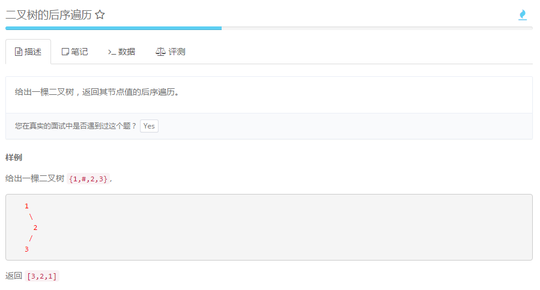
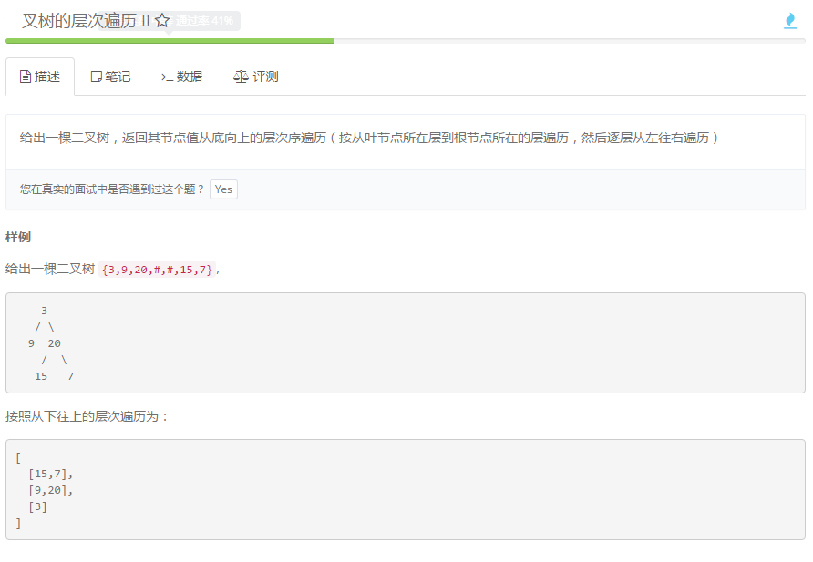
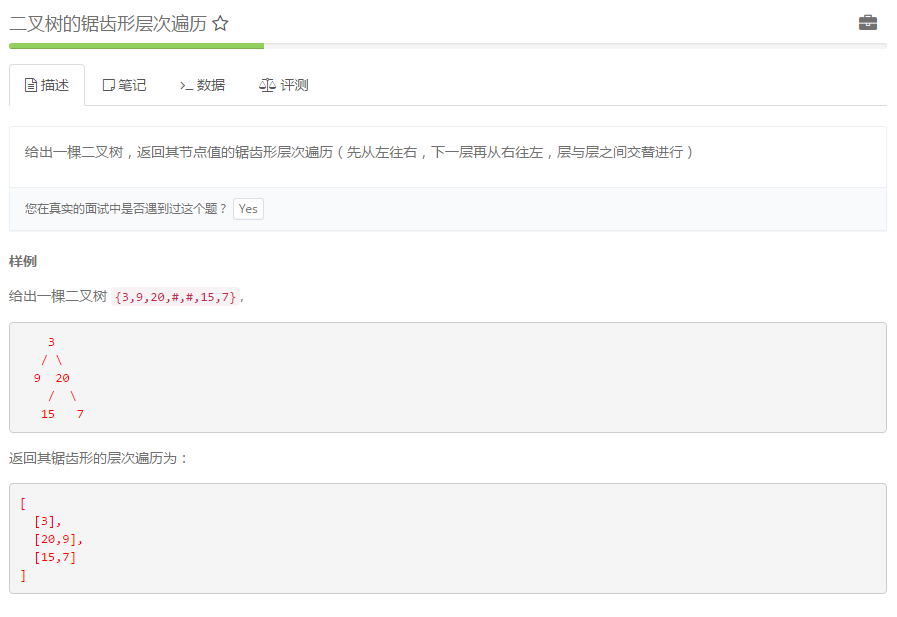
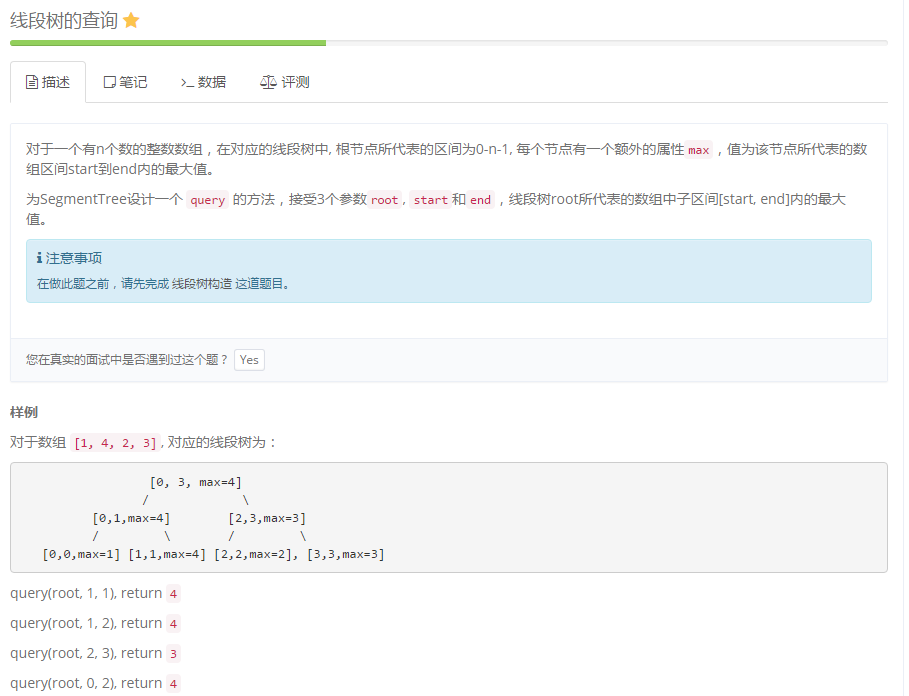
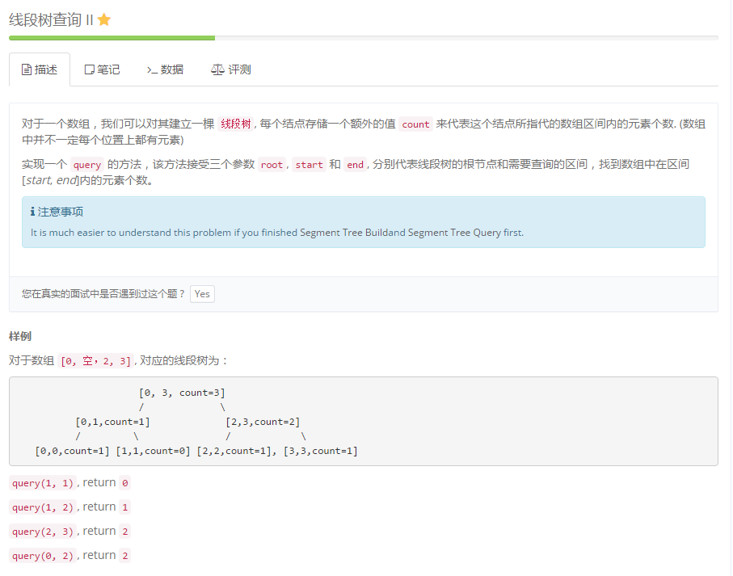
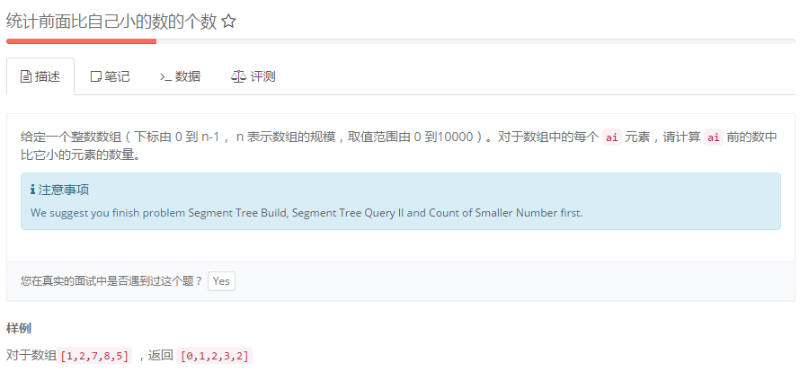

<!DOCTYPE html>
<html lang="zh">
<head><meta name="generator" content="Hexo 3.8.0">
    <meta charset="utf-8">
    
    <title>做过的算法题汇总表 | FEI&#39;s Blog</title>
    
    
        <meta name="keywords" content="ACM">
    
    <meta name="viewport" content="width=device-width, initial-scale=1, maximum-scale=1">
    <meta name="description" content="在各个不同的平台上做过的算法题目。">
<meta name="keywords" content="ACM">
<meta property="og:type" content="article">
<meta property="og:title" content="做过的算法题汇总表">
<meta property="og:url" content="http://ff120.github.io/hexoblog/2017/04/08/技术/数据结构和算法/做过的算法题汇总表/index.html">
<meta property="og:site_name" content="FEI&#39;s Blog">
<meta property="og:description" content="在各个不同的平台上做过的算法题目。">
<meta property="og:locale" content="zh-Hans">
<meta property="og:image" content="http://ff120.github.io/hexoblog/2017/04/08/技术/数据结构和算法/做过的算法题汇总表/2017-04-08_220703.png">
<meta property="og:image" content="http://ff120.github.io/hexoblog/2017/04/08/技术/数据结构和算法/做过的算法题汇总表/2017-04-08_220826.png">
<meta property="og:image" content="http://ff120.github.io/hexoblog/2017/04/08/技术/数据结构和算法/做过的算法题汇总表/2017-04-08_220852.png">
<meta property="og:image" content="http://ff120.github.io/hexoblog/2017/04/08/技术/数据结构和算法/做过的算法题汇总表/2017-04-08_220920.png">
<meta property="og:image" content="http://ff120.github.io/hexoblog/2017/04/08/技术/数据结构和算法/做过的算法题汇总表/2017-04-08_220950.png">
<meta property="og:image" content="http://ff120.github.io/hexoblog/2017/04/08/技术/数据结构和算法/做过的算法题汇总表/2017-04-08_221012.png">
<meta property="og:image" content="http://ff120.github.io/hexoblog/2017/04/08/技术/数据结构和算法/做过的算法题汇总表/2017-04-08_221038.png">
<meta property="og:image" content="http://ff120.github.io/hexoblog/2017/04/08/技术/数据结构和算法/做过的算法题汇总表/2017-04-08_221207.png">
<meta property="og:image" content="http://ff120.github.io/hexoblog/2017/04/08/技术/数据结构和算法/做过的算法题汇总表/2017-04-08_221303.png">
<meta property="og:image" content="http://ff120.github.io/hexoblog/2017/04/08/技术/数据结构和算法/做过的算法题汇总表/2017-04-08_221333.png">
<meta property="og:image" content="http://ff120.github.io/hexoblog/2017/04/08/技术/数据结构和算法/做过的算法题汇总表/2017-04-08_221138.png">
<meta property="og:image" content="http://ff120.github.io/hexoblog/2017/04/08/技术/数据结构和算法/做过的算法题汇总表/2017-04-08_221234.png">
<meta property="og:image" content="http://ff120.github.io/hexoblog/2017/04/08/技术/数据结构和算法/做过的算法题汇总表/2017-04-11_102510.png">
<meta property="og:updated_time" content="2019-03-28T00:54:56.030Z">
<meta name="twitter:card" content="summary">
<meta name="twitter:title" content="做过的算法题汇总表">
<meta name="twitter:description" content="在各个不同的平台上做过的算法题目。">
<meta name="twitter:image" content="http://ff120.github.io/hexoblog/2017/04/08/技术/数据结构和算法/做过的算法题汇总表/2017-04-08_220703.png">
    

    
        <link rel="alternate" href="/atom.xml" title="FEI&#39;s Blog" type="application/atom+xml">
    

    
        <link rel="icon" href="/hexoblog/favicon.ico">
    

    <link rel="stylesheet" href="/hexoblog/libs/font-awesome/css/font-awesome.min.css">
    <link rel="stylesheet" href="/hexoblog/libs/open-sans/styles.css">
    <link rel="stylesheet" href="/hexoblog/libs/source-code-pro/styles.css">

    <link rel="stylesheet" href="/hexoblog/css/style.css">
    <script src="/hexoblog/libs/jquery/2.1.3/jquery.min.js"></script>
    <script src="/hexoblog/libs/jquery/plugins/cookie/1.4.1/jquery.cookie.js"></script>
    
    
        <link rel="stylesheet" href="/hexoblog/libs/lightgallery/css/lightgallery.min.css">
    
    
        <link rel="stylesheet" href="/hexoblog/libs/justified-gallery/justifiedGallery.min.css">
    
    
    
    


    
        <script async src="//busuanzi.ibruce.info/busuanzi/2.3/busuanzi.pure.mini.js"></script>
    
</head>
</html>
<body>
    <div id="container">
        <header id="header">
    <div id="header-main" class="header-inner">
        <div class="outer">
            <a href="/hexoblog/" id="logo">
                <i class="logo"></i>
                <span class="site-title">FEI&#39;s Blog</span>
            </a>
            <nav id="main-nav">
                
                    <a class="main-nav-link" href="/hexoblog/">首页</a>
                
                    <a class="main-nav-link" href="/hexoblog/archives">归档</a>
                
                    <a class="main-nav-link" href="/hexoblog/categories">分类</a>
                
                    <a class="main-nav-link" href="/hexoblog/tags">标签</a>
                
                    <a class="main-nav-link" href="/hexoblog/about">关于</a>
                
            </nav>
            
            <div id="search-form-wrap">

    <form class="search-form">
        <input type="text" class="ins-search-input search-form-input" placeholder="Rechercher">
        <button type="submit" class="search-form-submit"></button>
    </form>
    <div class="ins-search">
    <div class="ins-search-mask"></div>
    <div class="ins-search-container">
        <div class="ins-input-wrapper">
            <input type="text" class="ins-search-input" placeholder="Type something...">
            <span class="ins-close ins-selectable"><i class="fa fa-times-circle"></i></span>
        </div>
        <div class="ins-section-wrapper">
            <div class="ins-section-container"></div>
        </div>
    </div>
</div>
<script>
(function (window) {
    var INSIGHT_CONFIG = {
        TRANSLATION: {
            POSTS: 'Articles',
            PAGES: 'Pages',
            CATEGORIES: 'Catégories',
            TAGS: 'Tags',
            UNTITLED: '(Untitled)',
        },
        ROOT_URL: '/hexoblog/',
        CONTENT_URL: '/hexoblog/content.json',
    };
    window.INSIGHT_CONFIG = INSIGHT_CONFIG;
})(window);
</script>
<script src="/hexoblog/js/insight.js"></script>

</div>
        </div>
    </div>
    <div id="main-nav-mobile" class="header-sub header-inner">
        <table class="menu outer">
            <tr>
                
                    <td><a class="main-nav-link" href="/hexoblog/">首页</a></td>
                
                    <td><a class="main-nav-link" href="/hexoblog/archives">归档</a></td>
                
                    <td><a class="main-nav-link" href="/hexoblog/categories">分类</a></td>
                
                    <td><a class="main-nav-link" href="/hexoblog/tags">标签</a></td>
                
                    <td><a class="main-nav-link" href="/hexoblog/about">关于</a></td>
                
                <td>
                    
    <div class="search-form">
        <input type="text" class="ins-search-input search-form-input" placeholder="Rechercher">
    </div>

                </td>
            </tr>
        </table>
    </div>
</header>

        <div class="outer">
            
            
                <aside id="sidebar">
   
        
    <div class="widget-wrap" id="categories">
        <h3 class="widget-title">
            <span>Catégories</span>
            &nbsp;
            <a id="allExpand" href="#">
                <i class="fa fa-angle-double-down fa-2x"></i>
            </a>
        </h3>
        
        
        
         <ul class="unstyled" id="tree"> 
                    <li class="directory">
                        <a href="#" data-role="directory">
                            <i class="fa fa-folder"></i>
                            &nbsp;
                            心理学
                        </a>
                         <ul class="unstyled" id="tree"> 
                    <li class="directory">
                        <a href="#" data-role="directory">
                            <i class="fa fa-folder"></i>
                            &nbsp;
                            记忆魔法
                        </a>
                         <ul class="unstyled" id="tree">  <li class="file"><a href="/hexoblog/2019/04/03/心理学/记忆魔法/代码记忆法/">代码记忆法</a></li>  </ul> 
                    </li> 
                     </ul> 
                    </li> 
                    
                    <li class="directory open">
                        <a href="#" data-role="directory">
                            <i class="fa fa-folder-open"></i>
                            &nbsp;
                            技术
                        </a>
                         <ul class="unstyled" id="tree"> 
                    <li class="directory">
                        <a href="#" data-role="directory">
                            <i class="fa fa-folder"></i>
                            &nbsp;
                            Web开发
                        </a>
                         <ul class="unstyled" id="tree">  <li class="file"><a href="/hexoblog/2016/06/11/技术/Web开发/后台开发_How-to-install-Laravel-framework/">How to install Laravel framework</a></li>  <li class="file"><a href="/hexoblog/2016/06/11/技术/Web开发/后台开发_laravel-4-note-01/">laravel 4 note 01</a></li>  <li class="file"><a href="/hexoblog/2016/06/11/技术/Web开发/后台开发_Make-phpStorm-friendly-to-laravel/">Make phpStorm friendly to laravel</a></li>  <li class="file"><a href="/hexoblog/2016/06/11/技术/Web开发/后台开发_sublime-Text-tricks/">sublime Text tricks</a></li>  <li class="file"><a href="/hexoblog/2016/06/11/技术/Web开发/后台开发_think-php-note-01/">think php note 01</a></li>  <li class="file"><a href="/hexoblog/2016/06/11/技术/Web开发/后台开发_think-php-note-02/">think php note 02</a></li>  <li class="file"><a href="/hexoblog/2016/06/11/技术/Web开发/后台开发_think-php-note-03/">think php note 03</a></li>  <li class="file"><a href="/hexoblog/2016/06/11/技术/Web开发/后台开发_PHP编译less文件-lessphp的使用/">PHP编译less文件-lessphp的使用</a></li>  <li class="file"><a href="/hexoblog/2016/06/11/技术/Web开发/后台开发_Lavarel-后台组件frozenode的使用/">Lavarel 后台组件frozenode的使用</a></li>  <li class="file"><a href="/hexoblog/2016/06/11/技术/Web开发/后台开发_Linux常用命令/">Linux常用命令</a></li>  <li class="file"><a href="/hexoblog/2016/06/11/技术/Web开发/后台开发_Linux主机之间同步文件/">Linux主机之间同步文件</a></li>  <li class="file"><a href="/hexoblog/2016/06/11/技术/Web开发/后台开发_PHP基本操作/">PHP基本操作</a></li>  <li class="file"><a href="/hexoblog/2016/06/11/技术/Web开发/后台开发_短信验证码的实现/">短信验证码的实现</a></li>  <li class="file"><a href="/hexoblog/2016/06/11/技术/Web开发/后台开发_配置Apache支持使用HTTPS/">配置Apache支持使用HTTPS</a></li>  <li class="file"><a href="/hexoblog/2016/06/11/技术/Web开发/测试_使用Selenium测试UI/">测试_使用Selenium测试UI</a></li>  <li class="file"><a href="/hexoblog/2016/06/11/技术/Web开发/后台开发_PhpStorm常用快捷键/">PhpStorm常用快捷键</a></li>  <li class="file"><a href="/hexoblog/2016/06/11/技术/Web开发/微信开发_微信发送消息PHP-SDK/">微信发送消息PHP SDK</a></li>  <li class="file"><a href="/hexoblog/2016/06/11/技术/Web开发/微信开发_获取地理位置/">微信获取地理位置 </a></li>  <li class="file"><a href="/hexoblog/2016/06/11/技术/Web开发/微信开发_发送模板消息的代码/">微信发送模板消息的代码</a></li>  <li class="file"><a href="/hexoblog/2016/06/11/技术/Web开发/测试_Selenium-定位元素的几种方式/">测试_Selenium定位元素的几种方式</a></li>  <li class="file"><a href="/hexoblog/2016/06/11/技术/Web开发/测试_Selenium-Action/">测试_Selenium Action</a></li>  <li class="file"><a href="/hexoblog/2016/06/11/技术/Web开发/测试_Apache-JMeter的使用/">测试_Apache JMeter的使用</a></li>  <li class="file"><a href="/hexoblog/2016/06/12/技术/Web开发/后台开发_Apache-配置虚拟主机/">Apache 配置虚拟主机</a></li>  <li class="file"><a href="/hexoblog/2016/06/23/技术/Web开发/后台开发_改进PHP的var-dump-方法使之适应显示从数据库中查出来的数据/">改进PHP的var_dump()方法使之适应显示从数据库中查出来的数据</a></li>  <li class="file"><a href="/hexoblog/2016/06/23/技术/Web开发/后台开发_PHP读写XLS/">PHP读写XLS</a></li>  <li class="file"><a href="/hexoblog/2016/06/30/技术/Web开发/前端_jQuery-EasyUI-学习笔记/">JQuery EasyUI 学习笔记</a></li>  <li class="file"><a href="/hexoblog/2016/06/30/技术/Web开发/前端_bootsharp学习笔记/">Bootsharp学习笔记</a></li>  </ul> 
                    </li> 
                    
                    <li class="directory">
                        <a href="#" data-role="directory">
                            <i class="fa fa-folder"></i>
                            &nbsp;
                            专业术语
                        </a>
                         <ul class="unstyled" id="tree">  <li class="file"><a href="/hexoblog/2017/07/24/技术/专业术语/术语/">英语</a></li>  </ul> 
                    </li> 
                    
                    <li class="directory">
                        <a href="#" data-role="directory">
                            <i class="fa fa-folder"></i>
                            &nbsp;
                            大数据
                        </a>
                         <ul class="unstyled" id="tree">  <li class="file"><a href="/hexoblog/2016/06/23/技术/大数据/大数据_Spark环境下的Kmeans-Python实现/">Spark环境下的Kmeans-Python实现</a></li>  <li class="file"><a href="/hexoblog/2017/10/06/技术/大数据/大数据基础框架/">大数据基础框架</a></li>  </ul> 
                    </li> 
                    
                    <li class="directory">
                        <a href="#" data-role="directory">
                            <i class="fa fa-folder"></i>
                            &nbsp;
                            工具
                        </a>
                         <ul class="unstyled" id="tree"> 
                    <li class="directory">
                        <a href="#" data-role="directory">
                            <i class="fa fa-folder"></i>
                            &nbsp;
                            AutoHotKey
                        </a>
                         <ul class="unstyled" id="tree">  <li class="file"><a href="/hexoblog/2018/12/02/技术/工具/AutoHotKey/AutoHotKey非常有用的脚本/">AutoHotKey非常有用的脚本</a></li>  </ul> 
                    </li> 
                    
                    <li class="directory">
                        <a href="#" data-role="directory">
                            <i class="fa fa-folder"></i>
                            &nbsp;
                            Git
                        </a>
                         <ul class="unstyled" id="tree">  <li class="file"><a href="/hexoblog/2017/05/04/技术/工具/Git/GIT的使用01-基本功能/">GIT的使用01-基本功能</a></li>  <li class="file"><a href="/hexoblog/2018/07/29/技术/工具/Git/Git查询手册/">Git 手册</a></li>  </ul> 
                    </li> 
                    
                    <li class="directory">
                        <a href="#" data-role="directory">
                            <i class="fa fa-folder"></i>
                            &nbsp;
                            Hexo
                        </a>
                         <ul class="unstyled" id="tree">  <li class="file"><a href="/hexoblog/2016/06/12/技术/工具/Hexo/Hexo的使用02-同步/">Hexo的使用02-同步</a></li>  <li class="file"><a href="/hexoblog/2016/06/13/技术/工具/Hexo/Hexo的使用01-搭建/">Hexo的使用01-搭建</a></li>  <li class="file"><a href="/hexoblog/2017/04/12/技术/工具/Hexo/Hexo的使用05-Atom编辑器/">Hexo的使用05-Atom编辑器</a></li>  <li class="file"><a href="/hexoblog/2017/04/12/技术/工具/Hexo/Hexo的使用04-数学公式/">Hexo的使用04-数学公式</a></li>  <li class="file"><a href="/hexoblog/2017/05/05/技术/工具/Hexo/Hexo的使用03-迁移/">Hexo的使用03-迁移</a></li>  <li class="file"><a href="/hexoblog/2017/07/17/技术/工具/Hexo/Hexo的使用06-使用gist存储代码片段/">Hexo中使用gist存储代码片段</a></li>  </ul> 
                    </li> 
                    
                    <li class="directory">
                        <a href="#" data-role="directory">
                            <i class="fa fa-folder"></i>
                            &nbsp;
                            Visio
                        </a>
                         <ul class="unstyled" id="tree">  <li class="file"><a href="/hexoblog/2017/05/05/技术/工具/Visio/VISIO的使用01-基础入门/">VISIO的使用01-基础入门</a></li>  </ul> 
                    </li> 
                    
                    <li class="directory">
                        <a href="#" data-role="directory">
                            <i class="fa fa-folder"></i>
                            &nbsp;
                            图片处理
                        </a>
                         <ul class="unstyled" id="tree">  <li class="file"><a href="/hexoblog/2017/05/05/技术/工具/图片处理/图片处理02-一寸照片/">图片处理02-一寸照片</a></li>  <li class="file"><a href="/hexoblog/2017/05/17/技术/工具/图片处理/图片处理01-合并多张图片/">图片处理01-合并多张图片</a></li>  </ul> 
                    </li> 
                    
                    <li class="directory">
                        <a href="#" data-role="directory">
                            <i class="fa fa-folder"></i>
                            &nbsp;
                            正则表达式
                        </a>
                         <ul class="unstyled" id="tree">  <li class="file"><a href="/hexoblog/2018/07/29/技术/工具/正则表达式/正则表达式/">正则表达式</a></li>  </ul> 
                    </li> 
                    
                    <li class="directory">
                        <a href="#" data-role="directory">
                            <i class="fa fa-folder"></i>
                            &nbsp;
                            编程IDE
                        </a>
                         <ul class="unstyled" id="tree"> 
                    <li class="directory">
                        <a href="#" data-role="directory">
                            <i class="fa fa-folder"></i>
                            &nbsp;
                            Anaconda
                        </a>
                         <ul class="unstyled" id="tree">  <li class="file"><a href="/hexoblog/2017/04/18/技术/工具/编程IDE/Anaconda/Anaconda的使用01-基础/">Anaconda的使用01-基础</a></li>  </ul> 
                    </li> 
                    
                    <li class="directory">
                        <a href="#" data-role="directory">
                            <i class="fa fa-folder"></i>
                            &nbsp;
                            JetBrainsCLion
                        </a>
                         <ul class="unstyled" id="tree">  <li class="file"><a href="/hexoblog/2017/05/04/技术/工具/编程IDE/JetBrainsCLion/JetBrainsCLion的使用01-入门/">JetBrainsCLion的使用01-入门</a></li>  </ul> 
                    </li> 
                    
                    <li class="directory">
                        <a href="#" data-role="directory">
                            <i class="fa fa-folder"></i>
                            &nbsp;
                            VSCode
                        </a>
                         <ul class="unstyled" id="tree">  <li class="file"><a href="/hexoblog/2017/07/24/技术/工具/编程IDE/VSCode/Visual-Studio-Code使用技巧/">Visual Studio Code使用技巧</a></li>  </ul> 
                    </li> 
                     </ul> 
                    </li> 
                    
                    <li class="directory">
                        <a href="#" data-role="directory">
                            <i class="fa fa-folder"></i>
                            &nbsp;
                            网络软件
                        </a>
                         <ul class="unstyled" id="tree">  <li class="file"><a href="/hexoblog/2016/06/12/技术/工具/网络软件/Windows全局代理软件Proxifier/">Windows全局代理软件Proxifier</a></li>  <li class="file"><a href="/hexoblog/2016/06/12/技术/工具/网络软件/Windows手工修改路由表/">Windows手工修改路由表</a></li>  </ul> 
                    </li> 
                     </ul> 
                    </li> 
                    
                    <li class="directory">
                        <a href="#" data-role="directory">
                            <i class="fa fa-folder"></i>
                            &nbsp;
                            数据库
                        </a>
                         <ul class="unstyled" id="tree">  <li class="file"><a href="/hexoblog/2016/06/11/技术/数据库/数据库_Redis入门/">Redis入门</a></li>  <li class="file"><a href="/hexoblog/2016/06/12/技术/数据库/数据库_使用Database-Configuration-Assist-工具创建oracle数据库/">使用Database Configuration Assist 工具创建oracle数据库</a></li>  <li class="file"><a href="/hexoblog/2017/11/02/技术/数据库/SQL/">SQL</a></li>  </ul> 
                    </li> 
                    
                    <li class="directory open">
                        <a href="#" data-role="directory">
                            <i class="fa fa-folder-open"></i>
                            &nbsp;
                            数据结构和算法
                        </a>
                         <ul class="unstyled" id="tree">  <li class="file"><a href="/hexoblog/2017/03/21/技术/数据结构和算法/算法专题_二维数组/">算法专题_二维数组</a></li>  <li class="file"><a href="/hexoblog/2017/03/21/技术/数据结构和算法/算法专题_矩阵和图/">矩阵和用矩阵表示的图的相关问题</a></li>  <li class="file"><a href="/hexoblog/2017/03/21/技术/数据结构和算法/算法专题_位运算/">算法专题_位运算</a></li>  <li class="file"><a href="/hexoblog/2017/03/23/技术/数据结构和算法/算法专题_链表/">算法专题_链表</a></li>  <li class="file"><a href="/hexoblog/2017/04/05/技术/数据结构和算法/算法专题_动态规划/">算法专题_动态规划</a></li>  <li class="file"><a href="/hexoblog/2017/04/06/技术/数据结构和算法/算法专题_图/">算法专题_图问题</a></li>  <li class="file active"><a href="/hexoblog/2017/04/08/技术/数据结构和算法/做过的算法题汇总表/">做过的算法题汇总表</a></li>  <li class="file"><a href="/hexoblog/2017/04/09/技术/数据结构和算法/算法专题_二叉树/">算法专题_二叉树</a></li>  <li class="file"><a href="/hexoblog/2017/04/09/技术/数据结构和算法/算法专题_通用树结构/">算法专题_通用树结构</a></li>  <li class="file"><a href="/hexoblog/2017/04/10/技术/数据结构和算法/算法专题_大数据和空间限制/">算法专题_大数据和空间限制</a></li>  <li class="file"><a href="/hexoblog/2017/04/10/技术/数据结构和算法/算法专题_排列组合/">算法专题_排列组合</a></li>  <li class="file"><a href="/hexoblog/2017/04/11/技术/数据结构和算法/本地代码集锦/">本地代码集锦</a></li>  <li class="file"><a href="/hexoblog/2017/04/12/技术/数据结构和算法/算法专题_栈和队列/">算法专题_栈和队列</a></li>  <li class="file"><a href="/hexoblog/2017/04/16/技术/数据结构和算法/算法专题_排序算法/">算法专题_排序算法</a></li>  <li class="file"><a href="/hexoblog/2017/04/17/技术/数据结构和算法/算法专题_算法总结/">算法专题_算法总结</a></li>  <li class="file"><a href="/hexoblog/2017/05/02/技术/数据结构和算法/算法专题_一维数组/">算法专题_一维数组</a></li>  <li class="file"><a href="/hexoblog/2017/05/05/技术/数据结构和算法/算法专题_图之网络流/">算法专题_图之网络流</a></li>  <li class="file"><a href="/hexoblog/2017/05/06/技术/数据结构和算法/算法专题_图之最短路径/">算法专题_图之最短路径</a></li>  <li class="file"><a href="/hexoblog/2017/05/06/技术/数据结构和算法/算法专题_最小生成树/">算法专题_最小生成树</a></li>  <li class="file"><a href="/hexoblog/2017/05/06/技术/数据结构和算法/算法专题_霍夫曼编码/">算法专题_霍夫曼编码(哈夫曼编码)</a></li>  <li class="file"><a href="/hexoblog/2017/05/07/技术/数据结构和算法/Kickstart-Round-B-2017/">Kickstart Round B 2017</a></li>  <li class="file"><a href="/hexoblog/2017/05/08/技术/数据结构和算法/算法专题_模运算/">算法专题_模运算</a></li>  <li class="file"><a href="/hexoblog/2017/05/09/技术/数据结构和算法/算法专题_素数问题/">算法专题_素数问题</a></li>  <li class="file"><a href="/hexoblog/2017/05/11/技术/数据结构和算法/算法专题_计算几何/">算法专题_计算几何</a></li>  <li class="file"><a href="/hexoblog/2017/05/27/技术/数据结构和算法/计蒜之道2017程序设计大赛/">计蒜之道2017程序设计大赛</a></li>  <li class="file"><a href="/hexoblog/2017/05/28/技术/数据结构和算法/算法专题_字符串匹配/">算法专题_字符串匹配</a></li>  <li class="file"><a href="/hexoblog/2017/07/12/技术/数据结构和算法/四等分数组/">四等分数组</a></li>  <li class="file"><a href="/hexoblog/2017/07/12/技术/数据结构和算法/矩阵的遍历/">矩阵的遍历</a></li>  <li class="file"><a href="/hexoblog/2017/07/20/技术/数据结构和算法/N皇后问题/">N皇后问题</a></li>  <li class="file"><a href="/hexoblog/2017/07/23/技术/数据结构和算法/算法专题_线段树/">算法专题_线段树</a></li>  <li class="file"><a href="/hexoblog/2017/07/23/技术/数据结构和算法/算法专题_树状数组/">算法专题_树状数组</a></li>  <li class="file"><a href="/hexoblog/2017/07/23/技术/数据结构和算法/算法专题_并查集/">算法专题_并查集</a></li>  <li class="file"><a href="/hexoblog/2017/07/26/技术/数据结构和算法/算法专题_链表2/">算法专题_链表2</a></li>  <li class="file"><a href="/hexoblog/2017/08/06/技术/数据结构和算法/算法专题_二叉堆/">算法专题_二叉堆</a></li>  <li class="file"><a href="/hexoblog/2017/08/07/技术/数据结构和算法/算法专题_快速排序/">算法专题_快速排序</a></li>  <li class="file"><a href="/hexoblog/2017/08/07/技术/数据结构和算法/算法专题_归并排序/">算法专题_归并排序</a></li>  <li class="file"><a href="/hexoblog/2017/08/13/技术/数据结构和算法/算法专题-hihocoder/">算法专题_hihocoder</a></li>  <li class="file"><a href="/hexoblog/2017/08/17/技术/数据结构和算法/算法专题-贪心法/">算法专题_贪心法</a></li>  <li class="file"><a href="/hexoblog/2017/08/18/技术/数据结构和算法/阿里在线测评-兔子繁殖问题/">阿里笔试</a></li>  <li class="file"><a href="/hexoblog/2017/08/22/技术/数据结构和算法/今日头条-在线编程题/">今日头条_在线编程题</a></li>  <li class="file"><a href="/hexoblog/2017/08/23/技术/数据结构和算法/算法专题-字典树-Trie树/">算法专题_字典树(Trie树)</a></li>  <li class="file"><a href="/hexoblog/2017/09/23/技术/数据结构和算法/算法专题_二叉树2/">算法专题_二叉树2</a></li>  <li class="file"><a href="/hexoblog/2017/09/27/技术/数据结构和算法/手写代码-其他/">手写代码-其他</a></li>  <li class="file"><a href="/hexoblog/2017/10/03/技术/数据结构和算法/算法专题-常见题目/">算法专题_常见题目</a></li>  </ul> 
                    </li> 
                    
                    <li class="directory">
                        <a href="#" data-role="directory">
                            <i class="fa fa-folder"></i>
                            &nbsp;
                            机器学习
                        </a>
                         <ul class="unstyled" id="tree"> 
                    <li class="directory">
                        <a href="#" data-role="directory">
                            <i class="fa fa-folder"></i>
                            &nbsp;
                            深度学习
                        </a>
                         <ul class="unstyled" id="tree">  <li class="file"><a href="/hexoblog/2017/03/22/技术/机器学习/深度学习/深度学习_Theano使用技巧/">深度学习_Theano使用技巧</a></li>  <li class="file"><a href="/hexoblog/2017/04/18/技术/机器学习/深度学习/深度学习_基本概念/">深度学习_基本概念</a></li>  <li class="file"><a href="/hexoblog/2017/04/18/技术/机器学习/深度学习/深度学习_利用神经网络识别手写数字/">深度学习__利用神经网络识别手写数字</a></li>  <li class="file"><a href="/hexoblog/2017/04/19/技术/机器学习/深度学习/深度学习_反向传播算法及简单实例/">深度学习_反向传播算法及简单实例</a></li>  <li class="file"><a href="/hexoblog/2017/04/19/技术/机器学习/深度学习/深度学习_Keras使用技巧/">深度学习_Keras使用技巧</a></li>  <li class="file"><a href="/hexoblog/2017/04/20/技术/机器学习/深度学习/深度学习_使用keras实现autoencoder/">深度学习_使用keras实现autoencoder</a></li>  <li class="file"><a href="/hexoblog/2017/04/20/技术/机器学习/深度学习/深度学习_卷积神经网络/">深度学习_卷积神经网络</a></li>  <li class="file"><a href="/hexoblog/2017/04/27/技术/机器学习/深度学习/深度学习_使用autoencoder自动提取特征/">深度学习_使用autoencoder自动提取特征</a></li>  <li class="file"><a href="/hexoblog/2017/05/10/技术/机器学习/深度学习/深度学习_递归神经网络(RNN)/">深度学习_递归神经网络(RNN)</a></li>  <li class="file"><a href="/hexoblog/2017/05/10/技术/机器学习/深度学习/深度学习_限制波尔茨曼向量机(RBM)/">深度学习_限制波尔茨曼向量机(RBM)</a></li>  <li class="file"><a href="/hexoblog/2017/05/12/技术/机器学习/深度学习/深度学习_TensorFlow使用技巧/">深度学习_TensorFlow使用技巧</a></li>  </ul> 
                    </li> 
                     <li class="file"><a href="/hexoblog/2016/06/16/技术/机器学习/机器学习_Scikit-Learn-ManyClassifier/">同时使用多个分类器(Scikit-Learn)</a></li>  <li class="file"><a href="/hexoblog/2016/06/16/技术/机器学习/机器学习_范数/">机器学习_范数</a></li>  <li class="file"><a href="/hexoblog/2016/06/20/技术/机器学习/机器学习_学习路线/">机器学习_学习路线</a></li>  <li class="file"><a href="/hexoblog/2016/06/20/技术/机器学习/机器学习_手写数字识别/">机器学习_手写数字识别</a></li>  <li class="file"><a href="/hexoblog/2016/07/11/技术/机器学习/机器学习_Matplolib使用技巧/">机器学习_Matplolib使用技巧</a></li>  <li class="file"><a href="/hexoblog/2017/03/22/技术/机器学习/机器学习_人脸识别/">机器学习_人脸识别</a></li>  <li class="file"><a href="/hexoblog/2017/05/04/技术/机器学习/机器学习_Matlab使用技巧/">机器学习_Matlab使用技巧</a></li>  <li class="file"><a href="/hexoblog/2017/05/11/技术/机器学习/机器学习_时间序列预测分析算法/">机器学习_时间序列预测分析算法</a></li>  <li class="file"><a href="/hexoblog/2017/05/14/技术/机器学习/机器学习_Scikit-Learn使用技巧/">深度学习_Scikit-Learn机器学习算法的使用</a></li>  <li class="file"><a href="/hexoblog/2017/05/15/技术/机器学习/机器学习_时间序列预测の广告效果预测/">机器学习_时间序列预测の广告效果预测</a></li>  <li class="file"><a href="/hexoblog/2017/05/15/技术/机器学习/机器学习_算法汇总/">机器学习_算法汇总</a></li>  <li class="file"><a href="/hexoblog/2017/05/17/技术/机器学习/机器学习_Pandas使用技巧/">深度学习_Pandas使用技巧</a></li>  <li class="file"><a href="/hexoblog/2017/05/19/技术/机器学习/机器学习_感知机/">机器学习_感知机</a></li>  <li class="file"><a href="/hexoblog/2017/05/19/技术/机器学习/机器学习_逻辑回归/">机器学习_逻辑回归</a></li>  <li class="file"><a href="/hexoblog/2017/05/22/技术/机器学习/机器学习_损失函数/">机器学习_损失函数</a></li>  <li class="file"><a href="/hexoblog/2017/06/03/技术/机器学习/机器学习_分类器性能的度量/">机器学习_分类器性能的度量</a></li>  <li class="file"><a href="/hexoblog/2017/06/15/技术/机器学习/机器学习_Scipy使用技巧/">机器学习_Scipy使用技巧</a></li>  <li class="file"><a href="/hexoblog/2017/06/15/技术/机器学习/机器学习_Python使用技巧/">深度学习_Python使用技巧</a></li>  <li class="file"><a href="/hexoblog/2017/07/23/技术/机器学习/机器学习-Numpy使用技巧/">机器学习_Numpy使用技巧</a></li>  <li class="file"><a href="/hexoblog/2017/10/15/技术/机器学习/KNN-with-C/">KNN with C++</a></li>  <li class="file"><a href="/hexoblog/2017/11/04/技术/机器学习/机器学习-绪论-基本概念/">机器学习-绪论-基本概念</a></li>  <li class="file"><a href="/hexoblog/2017/11/04/技术/机器学习/机器学习-第一章-逻辑回归/">机器学习-第一章-逻辑回归</a></li>  <li class="file"><a href="/hexoblog/2017/11/04/技术/机器学习/机器学习-第二章-决策树/">机器学习-第二章-决策树</a></li>  <li class="file"><a href="/hexoblog/2017/11/04/技术/机器学习/机器学习-第三章-朴素贝叶斯/">机器学习-第三章-朴素贝叶斯</a></li>  <li class="file"><a href="/hexoblog/2017/11/04/技术/机器学习/机器学习-第四章-支持向量机/">机器学习-第四章-支持向量机</a></li>  <li class="file"><a href="/hexoblog/2017/11/04/技术/机器学习/机器学习-第五章-最近邻/">机器学习-第五章-最近邻</a></li>  <li class="file"><a href="/hexoblog/2017/11/04/技术/机器学习/机器学习-第六章-kmeans/">机器学习-第六章-kmeans</a></li>  <li class="file"><a href="/hexoblog/2017/11/04/技术/机器学习/机器学习-第七章-感知机/">机器学习-第七章-感知机</a></li>  </ul> 
                    </li> 
                    
                    <li class="directory">
                        <a href="#" data-role="directory">
                            <i class="fa fa-folder"></i>
                            &nbsp;
                            编程语言
                        </a>
                         <ul class="unstyled" id="tree"> 
                    <li class="directory">
                        <a href="#" data-role="directory">
                            <i class="fa fa-folder"></i>
                            &nbsp;
                            C++
                        </a>
                         <ul class="unstyled" id="tree">  <li class="file"><a href="/hexoblog/2017/04/07/技术/编程语言/C++/C++语言技巧/">C++语言技巧</a></li>  </ul> 
                    </li> 
                     </ul> 
                    </li> 
                    
                    <li class="directory">
                        <a href="#" data-role="directory">
                            <i class="fa fa-folder"></i>
                            &nbsp;
                            计算机基础
                        </a>
                         <ul class="unstyled" id="tree"> 
                    <li class="directory">
                        <a href="#" data-role="directory">
                            <i class="fa fa-folder"></i>
                            &nbsp;
                            计算机网络
                        </a>
                         <ul class="unstyled" id="tree">  <li class="file"><a href="/hexoblog/2016/06/12/技术/计算机基础/计算机网络/网络_校园网多终端上网方案/">校园网多终端上网方案</a></li>  <li class="file"><a href="/hexoblog/2017/07/12/技术/计算机基础/计算机网络/计算机网络/">计算机网络</a></li>  </ul> 
                    </li> 
                     </ul> 
                    </li> 
                    
                    <li class="directory">
                        <a href="#" data-role="directory">
                            <i class="fa fa-folder"></i>
                            &nbsp;
                            认知神经科学
                        </a>
                         <ul class="unstyled" id="tree">  <li class="file"><a href="/hexoblog/2016/06/12/技术/认知神经科学/文献检索方法/">文献检索方法</a></li>  <li class="file"><a href="/hexoblog/2016/06/12/技术/认知神经科学/参考文献书写格式/">参考文献书写格式</a></li>  <li class="file"><a href="/hexoblog/2016/06/12/技术/认知神经科学/使用Python处理fMRI数据/">使用Python处理fMRI数据</a></li>  <li class="file"><a href="/hexoblog/2016/06/22/技术/认知神经科学/中英文对照/">中英文对照</a></li>  <li class="file"><a href="/hexoblog/2017/01/03/技术/认知神经科学/circos入门教程/">circos入门教程</a></li>  <li class="file"><a href="/hexoblog/2017/03/08/技术/认知神经科学/基于视频的车牌识别和流量统计/">基于视频的车牌识别和流量统计</a></li>  <li class="file"><a href="/hexoblog/2017/03/08/技术/认知神经科学/基于贝叶斯网络和隐性知识的AU识别研究/">基于贝叶斯网络和隐性知识的AU识别研究</a></li>  <li class="file"><a href="/hexoblog/2017/03/09/技术/认知神经科学/基于连接的脑信息解码研究/">基于连接信息的脑信息解码研究</a></li>  <li class="file"><a href="/hexoblog/2017/03/09/技术/认知神经科学/认知神经科学系列目录/">认知神经科学系列目录</a></li>  <li class="file"><a href="/hexoblog/2017/03/20/技术/认知神经科学/多被试多RUN批量预处理(SPM)/">多被试多RUN批量预处理(SPM)</a></li>  <li class="file"><a href="/hexoblog/2017/03/20/技术/认知神经科学/SPM预处理中的常用操作/">SPM预处理中的常用操作</a></li>  <li class="file"><a href="/hexoblog/2017/03/20/技术/认知神经科学/动态因果模型(DCM)的批量定义和估计/">动态因果模型(DCM)的批量定义和估计</a></li>  <li class="file"><a href="/hexoblog/2017/04/13/技术/认知神经科学/使用SPM做Second-Level分析/">使用SPM做Second_Level分析</a></li>  <li class="file"><a href="/hexoblog/2017/04/13/技术/认知神经科学/DCM模型的定义和估计/">DCM模型的定义和估计</a></li>  <li class="file"><a href="/hexoblog/2017/04/14/技术/认知神经科学/XJVIEW的使用技巧/">XJVIEW的使用技巧</a></li>  <li class="file"><a href="/hexoblog/2017/04/14/技术/认知神经科学/SPM中函数的修改和使用/">SPM中函数的修改和使用</a></li>  <li class="file"><a href="/hexoblog/2017/05/02/技术/认知神经科学/fMRI中常用的工具包/">fMRI中常用的工具包</a></li>  <li class="file"><a href="/hexoblog/2017/05/11/技术/认知神经科学/使用3D卷积神经神经网络提取脑成像数据的特征/">使用3D卷积神经神经网络提取脑成像数据的特征</a></li>  <li class="file"><a href="/hexoblog/2017/05/14/技术/认知神经科学/fMRI相关的资源汇总/">fMRI相关的资源汇总</a></li>  <li class="file"><a href="/hexoblog/2017/05/30/技术/认知神经科学/fMRI相关问题汇总/">fMRI相关问题汇总</a></li>  </ul> 
                    </li> 
                     </ul> 
                    </li> 
                    
                    <li class="directory">
                        <a href="#" data-role="directory">
                            <i class="fa fa-folder"></i>
                            &nbsp;
                            收藏夹
                        </a>
                         <ul class="unstyled" id="tree">  <li class="file"><a href="/hexoblog/2017/03/22/收藏夹/博客集锦/">博客收藏</a></li>  </ul> 
                    </li> 
                     </ul> 
    </div>
    <script>
        $(document).ready(function() {
            var iconFolderOpenClass  = 'fa-folder-open';
            var iconFolderCloseClass = 'fa-folder';
            var iconAllExpandClass = 'fa-angle-double-down';
            var iconAllPackClass = 'fa-angle-double-up';
            // Handle directory-tree expansion:
            // 左键单独展开目录
            $(document).on('click', '#categories a[data-role="directory"]', function (event) {
                event.preventDefault();

                var icon = $(this).children('.fa');
                var expanded = icon.hasClass(iconFolderOpenClass);
                var subtree = $(this).siblings('ul');
                icon.removeClass(iconFolderOpenClass).removeClass(iconFolderCloseClass);
                if (expanded) {
                    if (typeof subtree != 'undefined') {
                        subtree.slideUp({ duration: 100 });
                    }
                    icon.addClass(iconFolderCloseClass);
                } else {
                    if (typeof subtree != 'undefined') {
                        subtree.slideDown({ duration: 100 });
                    }
                    icon.addClass(iconFolderOpenClass);
                }
            });
            // 右键展开下属所有目录
            $('#categories a[data-role="directory"]').bind("contextmenu", function(event){
                event.preventDefault();
                
                var icon = $(this).children('.fa');
                var expanded = icon.hasClass(iconFolderOpenClass);
                var listNode = $(this).siblings('ul');
                var subtrees = $.merge(listNode.find('li ul'), listNode);
                var icons = $.merge(listNode.find('.fa'), icon);
                icons.removeClass(iconFolderOpenClass).removeClass(iconFolderCloseClass);
                if(expanded) {
                    subtrees.slideUp({ duration: 100 });
                    icons.addClass(iconFolderCloseClass);
                } else {
                    subtrees.slideDown({ duration: 100 });
                    icons.addClass(iconFolderOpenClass);
                }
            })
            // 展开关闭所有目录按钮
            $(document).on('click', '#allExpand', function (event) {
                event.preventDefault();
                
                var icon = $(this).children('.fa');
                var expanded = icon.hasClass(iconAllExpandClass);
                icon.removeClass(iconAllExpandClass).removeClass(iconAllPackClass);
                if(expanded) {
                    $('#sidebar .fa.fa-folder').removeClass('fa-folder').addClass('fa-folder-open')
                    $('#categories li ul').slideDown({ duration: 100 });
                    icon.addClass(iconAllPackClass);
                } else {
                    $('#sidebar .fa.fa-folder-open').removeClass('fa-folder-open').addClass('fa-folder')
                    $('#categories li ul').slideUp({ duration: 100 });
                    icon.addClass(iconAllExpandClass);
                }
            });  
        });
    </script>

    
    <div id="toTop" class="fa fa-angle-up"></div>
</aside>
            
            <section id="main"><article id="post-技术/数据结构和算法/做过的算法题汇总表" class="article article-type-post" itemscope="" itemprop="blogPost">
    <div class="article-inner">
        
        
            <header class="article-header">
                
                    <div class="article-meta">
                        
    <div class="article-category">
    	<i class="fa fa-folder"></i>
        <a class="article-category-link" href="/hexoblog/categories/技术/">技术</a><i class="fa fa-angle-right"></i><a class="article-category-link" href="/hexoblog/categories/技术/数据结构和算法/">数据结构和算法</a>
    </div>

                        
    <div class="article-tag">
        <i class="fa fa-tag"></i>
        <a class="tag-link" href="/hexoblog/tags/ACM/">ACM</a>
    </div>

                        
    <div class="article-date">
        <i class="fa fa-calendar"></i>
        <a href="/hexoblog/2017/04/08/技术/数据结构和算法/做过的算法题汇总表/">
            <time datetime="2017-04-08T13:52:05.000Z" itemprop="datePublished">2017-04-08</time>
        </a>
    </div>


                        
                            <i class="fa fa-bar-chart"></i>
                            <span id="busuanzi_container_site_pv"><span id="busuanzi_value_page_pv"></span></span>    
                        
                        
                            <div class="article-meta-button">
                                <a href="https://github.com/FF120/hexoblog/raw/master/source/_posts/技术/数据结构和算法/做过的算法题汇总表.md"> Source </a>
                            </div>
                            <div class="article-meta-button">
                                <a href="https://github.com/FF120/hexoblog/edit/master/source/_posts/技术/数据结构和算法/做过的算法题汇总表.md"> Edit </a>
                            </div>
                            <div class="article-meta-button">
                                <a href="https://github.com/FF120/hexoblog/commits/master/source/_posts/技术/数据结构和算法/做过的算法题汇总表.md"> History </a>
                            </div>
                        
                    </div>
                
                
    
        <h1 class="article-title" itemprop="name">
            做过的算法题汇总表
        </h1>
    

            </header>
        
        
        <div class="article-entry" itemprop="articleBody">
        
        
            
                <div id="toc" class="toc-article">
                <strong class="toc-title">Catalogue</strong>
                    <ol class="toc"><li class="toc-item toc-level-2"><a class="toc-link" href="#lintcode"><span class="toc-number">1.</span> <span class="toc-text">[lintcode]</span></a><ol class="toc-child"><li class="toc-item toc-level-3"><a class="toc-link" href="#二叉树的前序遍历---c-lintcode"><span class="toc-number">1.1.</span> <span class="toc-text">二叉树的前序遍历 - C++ [lintcode]</span></a></li><li class="toc-item toc-level-3"><a class="toc-link" href="#二叉树的中序遍历---c-lintcode"><span class="toc-number">1.2.</span> <span class="toc-text">二叉树的中序遍历 - C++ [lintcode]</span></a></li><li class="toc-item toc-level-3"><a class="toc-link" href="#二叉树的后序遍历---c-lintcode"><span class="toc-number">1.3.</span> <span class="toc-text">二叉树的后序遍历 - C++ [lintcode]</span></a></li><li class="toc-item toc-level-3"><a class="toc-link" href="#二叉树的最大深度---c-lintcode"><span class="toc-number">1.4.</span> <span class="toc-text">二叉树的最大深度 - C++ [lintcode]</span></a></li><li class="toc-item toc-level-3"><a class="toc-link" href="#二叉树的最小深度---c-lintcode"><span class="toc-number">1.5.</span> <span class="toc-text">二叉树的最小深度 - C++ [lintcode]</span></a></li><li class="toc-item toc-level-3"><a class="toc-link" href="#二叉树的层次遍历-ii---c-lintcode"><span class="toc-number">1.6.</span> <span class="toc-text">二叉树的层次遍历 II - C++ [lintcode]</span></a></li><li class="toc-item toc-level-3"><a class="toc-link" href="#二叉树的锯齿形层次遍历---c-lintcode"><span class="toc-number">1.7.</span> <span class="toc-text">二叉树的锯齿形层次遍历 - C++ [lintcode]</span></a></li><li class="toc-item toc-level-3"><a class="toc-link" href="#用栈实现队列---c-lintcode"><span class="toc-number">1.8.</span> <span class="toc-text">用栈实现队列 - C++ [lintcode]</span></a></li><li class="toc-item toc-level-3"><a class="toc-link" href="#线段树的构造---c-lintcode"><span class="toc-number">1.9.</span> <span class="toc-text">线段树的构造 - C++ [lintcode]</span></a></li><li class="toc-item toc-level-3"><a class="toc-link" href="#线段树的查询---c-lintcode"><span class="toc-number">1.10.</span> <span class="toc-text">线段树的查询 - C++ [lintcode]</span></a></li><li class="toc-item toc-level-3"><a class="toc-link" href="#线段树查询-ii---c-lintcode"><span class="toc-number">1.11.</span> <span class="toc-text">线段树查询 II - C++ [lintcode]</span></a></li><li class="toc-item toc-level-3"><a class="toc-link" href="#统计前面比自己小的数的个数---c-lintcode"><span class="toc-number">1.12.</span> <span class="toc-text">统计前面比自己小的数的个数 - C++ [lintcode]</span></a></li></ol></li><li class="toc-item toc-level-2"><a class="toc-link" href="#nowcoder"><span class="toc-number">2.</span> <span class="toc-text">[nowcoder]</span></a><ol class="toc-child"><li class="toc-item toc-level-3"><a class="toc-link" href="#最小的k个数-c-nowcoder"><span class="toc-number">2.1.</span> <span class="toc-text">最小的K个数 C++ [nowcoder]</span></a></li><li class="toc-item toc-level-3"><a class="toc-link" href="#找出出现的次数超过数组长度的一半的数-c-nowcoder"><span class="toc-number">2.2.</span> <span class="toc-text">找出出现的次数超过数组长度的一半的数 C++ [nowcoder]</span></a></li><li class="toc-item toc-level-3"><a class="toc-link" href="#找到第一个只出现一次的字符-c-nowcoder"><span class="toc-number">2.3.</span> <span class="toc-text">找到第一个只出现一次的字符 C++ [nowcoder]</span></a></li><li class="toc-item toc-level-3"><a class="toc-link" href="#找到第1500个丑数-c-nowcoder"><span class="toc-number">2.4.</span> <span class="toc-text">找到第1500个丑数 C++ [nowcoder]</span></a></li><li class="toc-item toc-level-3"><a class="toc-link" href="#打印所有数字中最小的一个-c-nowcoder"><span class="toc-number">2.5.</span> <span class="toc-text">打印所有数字中最小的一个 C++ [nowcoder]</span></a></li><li class="toc-item toc-level-3"><a class="toc-link" href="#整数中1出现的次数-c-nowcoder"><span class="toc-number">2.6.</span> <span class="toc-text">整数中1出现的次数 C++ [nowcoder]</span></a></li><li class="toc-item toc-level-3"><a class="toc-link" href="#所有和为s的连续正数序列-c-nowcoder"><span class="toc-number">2.7.</span> <span class="toc-text">所有和为S的连续正数序列 C++ [nowcoder]</span></a></li><li class="toc-item toc-level-3"><a class="toc-link" href="#循环删除整数数列问题-c-nowcoder"><span class="toc-number">2.8.</span> <span class="toc-text">循环删除整数数列问题 C++ [nowcoder]</span></a></li><li class="toc-item toc-level-3"><a class="toc-link" href="#图中是否包含某条路径-c-nowcoder"><span class="toc-number">2.9.</span> <span class="toc-text">图中是否包含某条路径 C++ [nowcoder]</span></a></li><li class="toc-item toc-level-3"><a class="toc-link" href="#机器人能够达到多少个格子-c-nowcoder"><span class="toc-number">2.10.</span> <span class="toc-text">机器人能够达到多少个格子 C++ [nowcoder]</span></a></li><li class="toc-item toc-level-3"><a class="toc-link" href="#找到只出现一次的数字-c-nowcoder"><span class="toc-number">2.11.</span> <span class="toc-text">找到只出现一次的数字 C++ [nowcoder]</span></a></li><li class="toc-item toc-level-3"><a class="toc-link" href="#查找数组中未出现的最小正整数-c-nowcoder"><span class="toc-number">2.12.</span> <span class="toc-text">查找数组中未出现的最小正整数 C++ [nowcoder]</span></a></li><li class="toc-item toc-level-3"><a class="toc-link" href="#数组的单调和-c-nowcoder"><span class="toc-number">2.13.</span> <span class="toc-text">数组的单调和 C++ [nowcoder]</span></a></li><li class="toc-item toc-level-3"><a class="toc-link" href="#c是否是a和b的混编-c-nowcoder"><span class="toc-number">2.14.</span> <span class="toc-text">C是否是A和B的混编 C++ [nowcoder]</span></a></li><li class="toc-item toc-level-3"><a class="toc-link" href="#字符串交错组成-c-nowcoder"><span class="toc-number">2.15.</span> <span class="toc-text">字符串交错组成 C++ [nowcoder]</span></a></li><li class="toc-item toc-level-3"><a class="toc-link" href="#最小编辑代价-c-nowcoder"><span class="toc-number">2.16.</span> <span class="toc-text">最小编辑代价 C++ [nowcoder]</span></a></li><li class="toc-item toc-level-3"><a class="toc-link" href="#最大间隔-c-nowcoder"><span class="toc-number">2.17.</span> <span class="toc-text">最大间隔 C++ [nowcoder]</span></a></li><li class="toc-item toc-level-3"><a class="toc-link" href="#搬圆桌-c-nowcoder"><span class="toc-number">2.18.</span> <span class="toc-text">搬圆桌 c++ [nowcoder]</span></a></li><li class="toc-item toc-level-3"><a class="toc-link" href="#裁减网格纸-c-nowcoder"><span class="toc-number">2.19.</span> <span class="toc-text">裁减网格纸 C++ [nowcoder]</span></a></li><li class="toc-item toc-level-3"><a class="toc-link" href="#罪犯转移-c-nowcoder"><span class="toc-number">2.20.</span> <span class="toc-text">罪犯转移 C++ [nowcoder]</span></a></li><li class="toc-item toc-level-3"><a class="toc-link" href="#首个重复字符-c-nowcoder"><span class="toc-number">2.21.</span> <span class="toc-text">首个重复字符 C++ [nowcoder]</span></a></li><li class="toc-item toc-level-3"><a class="toc-link" href="#棋子翻转"><span class="toc-number">2.22.</span> <span class="toc-text">棋子翻转</span></a></li><li class="toc-item toc-level-3"><a class="toc-link" href="#最大差值-c-nowcoder"><span class="toc-number">2.23.</span> <span class="toc-text">最大差值 C++ [nowcoder]</span></a></li><li class="toc-item toc-level-3"><a class="toc-link" href="#直方图内最大矩形-c-nowcoder"><span class="toc-number">2.24.</span> <span class="toc-text">直方图内最大矩形 C++ [nowcoder]</span></a></li><li class="toc-item toc-level-3"><a class="toc-link" href="#之字形打印矩阵-c-nowcoder"><span class="toc-number">2.25.</span> <span class="toc-text">之字形打印矩阵 C++ [nowcoder]</span></a></li><li class="toc-item toc-level-3"><a class="toc-link" href="#相邻最大差值-c-nowcoder"><span class="toc-number">2.26.</span> <span class="toc-text">相邻最大差值 c++ [nowcoder]</span></a></li><li class="toc-item toc-level-3"><a class="toc-link" href="#二分查找-c-nowcoder"><span class="toc-number">2.27.</span> <span class="toc-text">二分查找 C++ [nowcoder]</span></a></li><li class="toc-item toc-level-3"><a class="toc-link" href="#最高分是多少"><span class="toc-number">2.28.</span> <span class="toc-text">最高分是多少</span></a></li><li class="toc-item toc-level-3"><a class="toc-link" href="#从上往下打印二叉树"><span class="toc-number">2.29.</span> <span class="toc-text">从上往下打印二叉树</span></a></li><li class="toc-item toc-level-3"><a class="toc-link" href="#顺时针打印矩阵-c-nowcoder"><span class="toc-number">2.30.</span> <span class="toc-text">顺时针打印矩阵 C++ [nowcoder]</span></a></li><li class="toc-item toc-level-3"><a class="toc-link" href="#树的子结构-c-nowcoder"><span class="toc-number">2.31.</span> <span class="toc-text">树的子结构 C++ [nowcoder]</span></a></li><li class="toc-item toc-level-3"><a class="toc-link" href="#二叉树的镜像-c-nowcoder"><span class="toc-number">2.32.</span> <span class="toc-text">二叉树的镜像 C++ [nowcoder]</span></a></li><li class="toc-item toc-level-3"><a class="toc-link" href="#合并两个排序的链表-c-nowcoder"><span class="toc-number">2.33.</span> <span class="toc-text">合并两个排序的链表 C++ [nowcoder]</span></a></li><li class="toc-item toc-level-3"><a class="toc-link" href="#调整数组顺序使奇数位于偶数前面-c-nowcoder"><span class="toc-number">2.34.</span> <span class="toc-text">调整数组顺序使奇数位于偶数前面 C++ [nowcoder]</span></a></li><li class="toc-item toc-level-3"><a class="toc-link" href="#滑动窗口的最大值-c-nowcoder"><span class="toc-number">2.35.</span> <span class="toc-text">滑动窗口的最大值 C++ [nowcoder]</span></a></li><li class="toc-item toc-level-3"><a class="toc-link" href="#和为s的两个数字-c-nowcoder"><span class="toc-number">2.36.</span> <span class="toc-text">和为S的两个数字 C++ [nowcoder]</span></a></li><li class="toc-item toc-level-3"><a class="toc-link" href="#链表中环的入口结点"><span class="toc-number">2.37.</span> <span class="toc-text">链表中环的入口结点</span></a></li><li class="toc-item toc-level-3"><a class="toc-link" href="#构建乘积数组"><span class="toc-number">2.38.</span> <span class="toc-text">构建乘积数组</span></a></li><li class="toc-item toc-level-3"><a class="toc-link" href="#数组中重复的数字"><span class="toc-number">2.39.</span> <span class="toc-text">数组中重复的数字</span></a></li><li class="toc-item toc-level-3"><a class="toc-link" href="#不用加减乘除做加法"><span class="toc-number">2.40.</span> <span class="toc-text">不用加减乘除做加法</span></a></li><li class="toc-item toc-level-3"><a class="toc-link" href="#求123n"><span class="toc-number">2.41.</span> <span class="toc-text">求1+2+3+…+n</span></a></li><li class="toc-item toc-level-3"><a class="toc-link" href="#栈的压入弹出序列"><span class="toc-number">2.42.</span> <span class="toc-text">栈的压入、弹出序列</span></a></li><li class="toc-item toc-level-3"><a class="toc-link" href="#包含min函数的栈"><span class="toc-number">2.43.</span> <span class="toc-text">包含min函数的栈</span></a></li><li class="toc-item toc-level-3"><a class="toc-link" href="#反转链表"><span class="toc-number">2.44.</span> <span class="toc-text">反转链表</span></a></li><li class="toc-item toc-level-3"><a class="toc-link" href="#链表中倒数第k个结点"><span class="toc-number">2.45.</span> <span class="toc-text">链表中倒数第k个结点</span></a></li><li class="toc-item toc-level-3"><a class="toc-link" href="#数值的整数次方"><span class="toc-number">2.46.</span> <span class="toc-text">数值的整数次方</span></a></li><li class="toc-item toc-level-3"><a class="toc-link" href="#二进制中1的个数"><span class="toc-number">2.47.</span> <span class="toc-text">二进制中1的个数</span></a></li><li class="toc-item toc-level-3"><a class="toc-link" href="#矩形覆盖"><span class="toc-number">2.48.</span> <span class="toc-text">矩形覆盖</span></a></li><li class="toc-item toc-level-3"><a class="toc-link" href="#变态跳台阶"><span class="toc-number">2.49.</span> <span class="toc-text">变态跳台阶</span></a></li><li class="toc-item toc-level-3"><a class="toc-link" href="#跳台阶"><span class="toc-number">2.50.</span> <span class="toc-text">跳台阶</span></a></li><li class="toc-item toc-level-3"><a class="toc-link" href="#斐波那契数列"><span class="toc-number">2.51.</span> <span class="toc-text">斐波那契数列</span></a></li><li class="toc-item toc-level-3"><a class="toc-link" href="#旋转数组的最小数字"><span class="toc-number">2.52.</span> <span class="toc-text">旋转数组的最小数字</span></a></li><li class="toc-item toc-level-3"><a class="toc-link" href="#用两个栈实现队列"><span class="toc-number">2.53.</span> <span class="toc-text">用两个栈实现队列</span></a></li><li class="toc-item toc-level-3"><a class="toc-link" href="#重建二叉树"><span class="toc-number">2.54.</span> <span class="toc-text">重建二叉树</span></a></li><li class="toc-item toc-level-3"><a class="toc-link" href="#从尾到头打印链表"><span class="toc-number">2.55.</span> <span class="toc-text">从尾到头打印链表</span></a></li><li class="toc-item toc-level-3"><a class="toc-link" href="#二维数组中的查找"><span class="toc-number">2.56.</span> <span class="toc-text">二维数组中的查找</span></a></li></ol></li></ol>
                </div>
            
        
        
            <p>在各个不同的平台上做过的算法题目。</p>
<a id="more"></a>
<h2 id="lintcode">[lintcode]</h2>
<h3 id="二叉树的前序遍历---c-lintcode">二叉树的前序遍历 - C++ [lintcode]</h3>
<p> http://www.lintcode.com/zh-cn/problem/binary-tree-preorder-traversal/ <figure class="highlight c++"><table><tr><td class="gutter"><pre><span class="line">1</span><br><span class="line">2</span><br><span class="line">3</span><br><span class="line">4</span><br><span class="line">5</span><br><span class="line">6</span><br><span class="line">7</span><br><span class="line">8</span><br><span class="line">9</span><br><span class="line">10</span><br><span class="line">11</span><br><span class="line">12</span><br><span class="line">13</span><br><span class="line">14</span><br><span class="line">15</span><br><span class="line">16</span><br><span class="line">17</span><br><span class="line">18</span><br><span class="line">19</span><br><span class="line">20</span><br><span class="line">21</span><br><span class="line">22</span><br><span class="line">23</span><br><span class="line">24</span><br><span class="line">25</span><br><span class="line">26</span><br><span class="line">27</span><br><span class="line">28</span><br><span class="line">29</span><br><span class="line">30</span><br><span class="line">31</span><br><span class="line">32</span><br><span class="line">33</span><br><span class="line">34</span><br><span class="line">35</span><br></pre></td><td class="code"><pre><span class="line"><span class="comment">/**</span></span><br><span class="line"><span class="comment"> * Definition of TreeNode:</span></span><br><span class="line"><span class="comment"> * class TreeNode &#123;</span></span><br><span class="line"><span class="comment"> * public:</span></span><br><span class="line"><span class="comment"> *     int val;</span></span><br><span class="line"><span class="comment"> *     TreeNode *left, *right;</span></span><br><span class="line"><span class="comment"> *     TreeNode(int val) &#123;</span></span><br><span class="line"><span class="comment"> *         this-&gt;val = val;</span></span><br><span class="line"><span class="comment"> *         this-&gt;left = this-&gt;right = NULL;</span></span><br><span class="line"><span class="comment"> *     &#125;</span></span><br><span class="line"><span class="comment"> * &#125;</span></span><br><span class="line"><span class="comment"> */</span></span><br><span class="line"></span><br><span class="line"><span class="class"><span class="keyword">class</span> <span class="title">Solution</span> &#123;</span></span><br><span class="line"><span class="keyword">public</span>:</span><br><span class="line">    <span class="comment">/**</span></span><br><span class="line"><span class="comment">     * @param root: The root of binary tree.</span></span><br><span class="line"><span class="comment">     * @return: Preorder in vector which contains node values.</span></span><br><span class="line"><span class="comment">     */</span></span><br><span class="line">    <span class="built_in">vector</span>&lt;<span class="keyword">int</span>&gt; preorderTraversal(TreeNode *root) &#123;</span><br><span class="line">        <span class="comment">// write your code here</span></span><br><span class="line">        <span class="built_in">vector</span>&lt;<span class="keyword">int</span>&gt; re;</span><br><span class="line">        <span class="keyword">if</span>(root == <span class="literal">nullptr</span>) <span class="keyword">return</span> re;</span><br><span class="line">        re.push_back(root-&gt;val);</span><br><span class="line">        <span class="keyword">if</span>(root-&gt;left)&#123;</span><br><span class="line">            <span class="built_in">vector</span>&lt;<span class="keyword">int</span>&gt; ll = preorderTraversal(root-&gt;left);</span><br><span class="line">            re.insert(re.end(), ll.begin(), ll.end());</span><br><span class="line">        &#125;</span><br><span class="line">        <span class="keyword">if</span>(root-&gt;right)&#123;</span><br><span class="line">            <span class="built_in">vector</span>&lt;<span class="keyword">int</span>&gt; rr = preorderTraversal(root-&gt;right);</span><br><span class="line">            re.insert(re.end(), rr.begin(), rr.end());</span><br><span class="line">        &#125;</span><br><span class="line">        <span class="keyword">return</span> re;</span><br><span class="line">    &#125;</span><br><span class="line">&#125;;</span><br></pre></td></tr></table></figure></p>
<h3 id="二叉树的中序遍历---c-lintcode">二叉树的中序遍历 - C++ [lintcode]</h3>
<p> http://www.lintcode.com/zh-cn/problem/binary-tree-inorder-traversal/ <figure class="highlight c++"><table><tr><td class="gutter"><pre><span class="line">1</span><br><span class="line">2</span><br><span class="line">3</span><br><span class="line">4</span><br><span class="line">5</span><br><span class="line">6</span><br><span class="line">7</span><br><span class="line">8</span><br><span class="line">9</span><br><span class="line">10</span><br><span class="line">11</span><br><span class="line">12</span><br><span class="line">13</span><br><span class="line">14</span><br><span class="line">15</span><br><span class="line">16</span><br><span class="line">17</span><br><span class="line">18</span><br><span class="line">19</span><br><span class="line">20</span><br><span class="line">21</span><br><span class="line">22</span><br><span class="line">23</span><br><span class="line">24</span><br><span class="line">25</span><br><span class="line">26</span><br><span class="line">27</span><br><span class="line">28</span><br><span class="line">29</span><br><span class="line">30</span><br><span class="line">31</span><br><span class="line">32</span><br><span class="line">33</span><br><span class="line">34</span><br></pre></td><td class="code"><pre><span class="line"><span class="comment">/**</span></span><br><span class="line"><span class="comment"> * Definition of TreeNode:</span></span><br><span class="line"><span class="comment"> * class TreeNode &#123;</span></span><br><span class="line"><span class="comment"> * public:</span></span><br><span class="line"><span class="comment"> *     int val;</span></span><br><span class="line"><span class="comment"> *     TreeNode *left, *right;</span></span><br><span class="line"><span class="comment"> *     TreeNode(int val) &#123;</span></span><br><span class="line"><span class="comment"> *         this-&gt;val = val;</span></span><br><span class="line"><span class="comment"> *         this-&gt;left = this-&gt;right = NULL;</span></span><br><span class="line"><span class="comment"> *     &#125;</span></span><br><span class="line"><span class="comment"> * &#125;</span></span><br><span class="line"><span class="comment"> */</span></span><br><span class="line"><span class="class"><span class="keyword">class</span> <span class="title">Solution</span> &#123;</span></span><br><span class="line">    <span class="comment">/**</span></span><br><span class="line"><span class="comment">     * @param root: The root of binary tree.</span></span><br><span class="line"><span class="comment">     * @return: Inorder in vector which contains node values.</span></span><br><span class="line"><span class="comment">     */</span></span><br><span class="line"><span class="keyword">public</span>:</span><br><span class="line">    <span class="built_in">vector</span>&lt;<span class="keyword">int</span>&gt; inorderTraversal(TreeNode *root) &#123;</span><br><span class="line">        <span class="comment">// write your code here</span></span><br><span class="line">        <span class="built_in">vector</span>&lt;<span class="keyword">int</span>&gt; re;</span><br><span class="line">        <span class="keyword">if</span>(root == <span class="literal">nullptr</span>) <span class="keyword">return</span> re;</span><br><span class="line">        <span class="keyword">if</span>(root-&gt;left)&#123;</span><br><span class="line">            <span class="built_in">vector</span>&lt;<span class="keyword">int</span>&gt; ll = inorderTraversal(root-&gt;left);</span><br><span class="line">            re.insert(re.end(),ll.begin(),ll.end());</span><br><span class="line">        &#125;</span><br><span class="line">        re.push_back(root-&gt;val);</span><br><span class="line">        <span class="keyword">if</span>(root-&gt;right)&#123;</span><br><span class="line">            <span class="built_in">vector</span>&lt;<span class="keyword">int</span>&gt; rr = inorderTraversal(root-&gt;right);</span><br><span class="line">            re.insert(re.end(),rr.begin(),rr.end());</span><br><span class="line">        &#125;</span><br><span class="line">        <span class="keyword">return</span> re;</span><br><span class="line">    &#125;</span><br><span class="line">&#125;;</span><br></pre></td></tr></table></figure></p>
<h3 id="二叉树的后序遍历---c-lintcode">二叉树的后序遍历 - C++ [lintcode]</h3>
<p> http://www.lintcode.com/zh-cn/problem/binary-tree-postorder-traversal/ <figure class="highlight c++"><table><tr><td class="gutter"><pre><span class="line">1</span><br><span class="line">2</span><br><span class="line">3</span><br><span class="line">4</span><br><span class="line">5</span><br><span class="line">6</span><br><span class="line">7</span><br><span class="line">8</span><br><span class="line">9</span><br><span class="line">10</span><br><span class="line">11</span><br><span class="line">12</span><br><span class="line">13</span><br><span class="line">14</span><br><span class="line">15</span><br><span class="line">16</span><br><span class="line">17</span><br><span class="line">18</span><br><span class="line">19</span><br><span class="line">20</span><br><span class="line">21</span><br><span class="line">22</span><br><span class="line">23</span><br><span class="line">24</span><br><span class="line">25</span><br><span class="line">26</span><br><span class="line">27</span><br><span class="line">28</span><br><span class="line">29</span><br><span class="line">30</span><br><span class="line">31</span><br><span class="line">32</span><br><span class="line">33</span><br><span class="line">34</span><br></pre></td><td class="code"><pre><span class="line"><span class="comment">/**</span></span><br><span class="line"><span class="comment"> * Definition of TreeNode:</span></span><br><span class="line"><span class="comment"> * class TreeNode &#123;</span></span><br><span class="line"><span class="comment"> * public:</span></span><br><span class="line"><span class="comment"> *     int val;</span></span><br><span class="line"><span class="comment"> *     TreeNode *left, *right;</span></span><br><span class="line"><span class="comment"> *     TreeNode(int val) &#123;</span></span><br><span class="line"><span class="comment"> *         this-&gt;val = val;</span></span><br><span class="line"><span class="comment"> *         this-&gt;left = this-&gt;right = NULL;</span></span><br><span class="line"><span class="comment"> *     &#125;</span></span><br><span class="line"><span class="comment"> * &#125;</span></span><br><span class="line"><span class="comment"> */</span></span><br><span class="line"><span class="class"><span class="keyword">class</span> <span class="title">Solution</span> &#123;</span></span><br><span class="line">    <span class="comment">/**</span></span><br><span class="line"><span class="comment">     * @param root: The root of binary tree.</span></span><br><span class="line"><span class="comment">     * @return: Postorder in vector which contains node values.</span></span><br><span class="line"><span class="comment">     */</span></span><br><span class="line"><span class="keyword">public</span>:</span><br><span class="line">    <span class="built_in">vector</span>&lt;<span class="keyword">int</span>&gt; postorderTraversal(TreeNode *root) &#123;</span><br><span class="line">        <span class="comment">// write your code here</span></span><br><span class="line">        <span class="built_in">vector</span>&lt;<span class="keyword">int</span>&gt; re;</span><br><span class="line">        <span class="keyword">if</span>(root == <span class="literal">nullptr</span>) <span class="keyword">return</span> re;</span><br><span class="line">        <span class="keyword">if</span>(root-&gt;left)&#123;</span><br><span class="line">            <span class="built_in">vector</span>&lt;<span class="keyword">int</span>&gt; ll = postorderTraversal(root-&gt;left);</span><br><span class="line">            re.insert(re.end(),ll.begin(),ll.end());</span><br><span class="line">        &#125;</span><br><span class="line">        <span class="keyword">if</span>(root-&gt;right)&#123;</span><br><span class="line">            <span class="built_in">vector</span>&lt;<span class="keyword">int</span>&gt; rr = postorderTraversal(root-&gt;right);</span><br><span class="line">            re.insert(re.end(),rr.begin(),rr.end());</span><br><span class="line">        &#125;</span><br><span class="line">        re.push_back(root-&gt;val);</span><br><span class="line">        <span class="keyword">return</span> re;</span><br><span class="line">    &#125;</span><br><span class="line">&#125;;</span><br></pre></td></tr></table></figure></p>
<h3 id="二叉树的最大深度---c-lintcode">二叉树的最大深度 - C++ [lintcode]</h3>
<p> http://www.lintcode.com/zh-cn/problem/maximum-depth-of-binary-tree/ <figure class="highlight c++"><table><tr><td class="gutter"><pre><span class="line">1</span><br><span class="line">2</span><br><span class="line">3</span><br><span class="line">4</span><br><span class="line">5</span><br><span class="line">6</span><br><span class="line">7</span><br><span class="line">8</span><br><span class="line">9</span><br><span class="line">10</span><br><span class="line">11</span><br><span class="line">12</span><br><span class="line">13</span><br><span class="line">14</span><br><span class="line">15</span><br><span class="line">16</span><br><span class="line">17</span><br><span class="line">18</span><br><span class="line">19</span><br><span class="line">20</span><br><span class="line">21</span><br><span class="line">22</span><br><span class="line">23</span><br><span class="line">24</span><br><span class="line">25</span><br><span class="line">26</span><br><span class="line">27</span><br><span class="line">28</span><br><span class="line">29</span><br><span class="line">30</span><br><span class="line">31</span><br><span class="line">32</span><br></pre></td><td class="code"><pre><span class="line"><span class="comment">/**</span></span><br><span class="line"><span class="comment"> * Definition of TreeNode:</span></span><br><span class="line"><span class="comment"> * class TreeNode &#123;</span></span><br><span class="line"><span class="comment"> * public:</span></span><br><span class="line"><span class="comment"> *     int val;</span></span><br><span class="line"><span class="comment"> *     TreeNode *left, *right;</span></span><br><span class="line"><span class="comment"> *     TreeNode(int val) &#123;</span></span><br><span class="line"><span class="comment"> *         this-&gt;val = val;</span></span><br><span class="line"><span class="comment"> *         this-&gt;left = this-&gt;right = NULL;</span></span><br><span class="line"><span class="comment"> *     &#125;</span></span><br><span class="line"><span class="comment"> * &#125;</span></span><br><span class="line"><span class="comment"> */</span></span><br><span class="line"><span class="class"><span class="keyword">class</span> <span class="title">Solution</span> &#123;</span></span><br><span class="line"><span class="keyword">public</span>:</span><br><span class="line">    <span class="comment">/**</span></span><br><span class="line"><span class="comment">     * @param root: The root of binary tree.</span></span><br><span class="line"><span class="comment">     * @return: An integer</span></span><br><span class="line"><span class="comment">     */</span></span><br><span class="line">    <span class="function"><span class="keyword">int</span> <span class="title">maxDepth</span><span class="params">(TreeNode *root)</span> </span>&#123;</span><br><span class="line">        <span class="comment">// write your code here</span></span><br><span class="line">        <span class="keyword">if</span>(root == <span class="literal">nullptr</span>) <span class="keyword">return</span> <span class="number">0</span>;</span><br><span class="line">        <span class="keyword">int</span> maxDL = <span class="number">1</span>;</span><br><span class="line">        <span class="keyword">int</span> maxDR = <span class="number">1</span>;</span><br><span class="line">        <span class="keyword">if</span>(root-&gt;left)&#123;</span><br><span class="line">            maxDL += maxDepth(root-&gt;left);</span><br><span class="line">        &#125;</span><br><span class="line">        <span class="keyword">if</span>(root-&gt;right)&#123;</span><br><span class="line">            maxDR += maxDepth(root-&gt;right);</span><br><span class="line">        &#125;</span><br><span class="line">        <span class="keyword">return</span> max(maxDL,maxDR);</span><br><span class="line">    &#125;</span><br><span class="line">&#125;;</span><br></pre></td></tr></table></figure></p>
<h3 id="二叉树的最小深度---c-lintcode">二叉树的最小深度 - C++ [lintcode]</h3>
<p> http://www.lintcode.com/zh-cn/problem/minimum-depth-of-binary-tree/ <figure class="highlight c++"><table><tr><td class="gutter"><pre><span class="line">1</span><br><span class="line">2</span><br><span class="line">3</span><br><span class="line">4</span><br><span class="line">5</span><br><span class="line">6</span><br><span class="line">7</span><br><span class="line">8</span><br><span class="line">9</span><br><span class="line">10</span><br><span class="line">11</span><br><span class="line">12</span><br><span class="line">13</span><br><span class="line">14</span><br><span class="line">15</span><br><span class="line">16</span><br><span class="line">17</span><br><span class="line">18</span><br><span class="line">19</span><br><span class="line">20</span><br><span class="line">21</span><br><span class="line">22</span><br><span class="line">23</span><br><span class="line">24</span><br><span class="line">25</span><br><span class="line">26</span><br><span class="line">27</span><br><span class="line">28</span><br><span class="line">29</span><br><span class="line">30</span><br><span class="line">31</span><br><span class="line">32</span><br><span class="line">33</span><br></pre></td><td class="code"><pre><span class="line"><span class="comment">/**</span></span><br><span class="line"><span class="comment"> * Definition of TreeNode:</span></span><br><span class="line"><span class="comment"> * class TreeNode &#123;</span></span><br><span class="line"><span class="comment"> * public:</span></span><br><span class="line"><span class="comment"> *     int val;</span></span><br><span class="line"><span class="comment"> *     TreeNode *left, *right;</span></span><br><span class="line"><span class="comment"> *     TreeNode(int val) &#123;</span></span><br><span class="line"><span class="comment"> *         this-&gt;val = val;</span></span><br><span class="line"><span class="comment"> *         this-&gt;left = this-&gt;right = NULL;</span></span><br><span class="line"><span class="comment"> *     &#125;</span></span><br><span class="line"><span class="comment"> * &#125;</span></span><br><span class="line"><span class="comment"> */</span></span><br><span class="line"><span class="class"><span class="keyword">class</span> <span class="title">Solution</span> &#123;</span></span><br><span class="line"><span class="keyword">public</span>:</span><br><span class="line">    <span class="comment">/**</span></span><br><span class="line"><span class="comment">     * @param root: The root of binary tree.</span></span><br><span class="line"><span class="comment">     * @return: An integer</span></span><br><span class="line"><span class="comment">     */</span></span><br><span class="line">    <span class="function"><span class="keyword">int</span> <span class="title">minDepth</span><span class="params">(TreeNode *root)</span> </span>&#123;</span><br><span class="line">        <span class="comment">// write your code here</span></span><br><span class="line">        <span class="comment">// write your code here</span></span><br><span class="line">        <span class="keyword">if</span>(root == <span class="literal">nullptr</span>) <span class="keyword">return</span> <span class="number">0</span>;</span><br><span class="line">        <span class="keyword">int</span> maxDL = <span class="number">1</span>;</span><br><span class="line">        <span class="keyword">int</span> maxDR = <span class="number">1</span>;</span><br><span class="line">        <span class="keyword">if</span>(root-&gt;left)&#123;</span><br><span class="line">            maxDL += maxDepth(root-&gt;left);</span><br><span class="line">        &#125;</span><br><span class="line">        <span class="keyword">if</span>(root-&gt;right)&#123;</span><br><span class="line">            maxDR += maxDepth(root-&gt;right);</span><br><span class="line">        &#125;</span><br><span class="line">        <span class="keyword">return</span> min(maxDL,maxDR);</span><br><span class="line">    &#125;</span><br><span class="line">&#125;;</span><br></pre></td></tr></table></figure></p>
<h3 id="二叉树的层次遍历-ii---c-lintcode">二叉树的层次遍历 II - C++ [lintcode]</h3>
<p> http://www.lintcode.com/zh-cn/problem/binary-tree-level-order-traversal-ii/ <figure class="highlight c++"><table><tr><td class="gutter"><pre><span class="line">1</span><br><span class="line">2</span><br><span class="line">3</span><br><span class="line">4</span><br><span class="line">5</span><br><span class="line">6</span><br><span class="line">7</span><br><span class="line">8</span><br><span class="line">9</span><br><span class="line">10</span><br><span class="line">11</span><br><span class="line">12</span><br><span class="line">13</span><br><span class="line">14</span><br><span class="line">15</span><br><span class="line">16</span><br><span class="line">17</span><br><span class="line">18</span><br><span class="line">19</span><br><span class="line">20</span><br><span class="line">21</span><br><span class="line">22</span><br><span class="line">23</span><br><span class="line">24</span><br><span class="line">25</span><br><span class="line">26</span><br><span class="line">27</span><br><span class="line">28</span><br><span class="line">29</span><br><span class="line">30</span><br><span class="line">31</span><br><span class="line">32</span><br><span class="line">33</span><br><span class="line">34</span><br><span class="line">35</span><br><span class="line">36</span><br><span class="line">37</span><br><span class="line">38</span><br><span class="line">39</span><br><span class="line">40</span><br><span class="line">41</span><br><span class="line">42</span><br><span class="line">43</span><br><span class="line">44</span><br><span class="line">45</span><br><span class="line">46</span><br><span class="line">47</span><br><span class="line">48</span><br><span class="line">49</span><br><span class="line">50</span><br><span class="line">51</span><br></pre></td><td class="code"><pre><span class="line"><span class="comment">/**</span></span><br><span class="line"><span class="comment"> * Definition of TreeNode:</span></span><br><span class="line"><span class="comment"> * class TreeNode &#123;</span></span><br><span class="line"><span class="comment"> * public:</span></span><br><span class="line"><span class="comment"> *     int val;</span></span><br><span class="line"><span class="comment"> *     TreeNode *left, *right;</span></span><br><span class="line"><span class="comment"> *     TreeNode(int val) &#123;</span></span><br><span class="line"><span class="comment"> *         this-&gt;val = val;</span></span><br><span class="line"><span class="comment"> *         this-&gt;left = this-&gt;right = NULL;</span></span><br><span class="line"><span class="comment"> *     &#125;</span></span><br><span class="line"><span class="comment"> * &#125;</span></span><br><span class="line"><span class="comment"> */</span></span><br><span class="line"></span><br><span class="line"></span><br><span class="line"><span class="class"><span class="keyword">class</span> <span class="title">Solution</span> &#123;</span></span><br><span class="line">    <span class="comment">/**</span></span><br><span class="line"><span class="comment">     * @param root : The root of binary tree.</span></span><br><span class="line"><span class="comment">     * @return : buttom-up level order a list of lists of integer</span></span><br><span class="line"><span class="comment">     */</span></span><br><span class="line"><span class="keyword">public</span>:</span><br><span class="line">    <span class="built_in">vector</span>&lt;<span class="built_in">vector</span>&lt;<span class="keyword">int</span>&gt;&gt; levelOrderBottom(TreeNode *root) &#123;</span><br><span class="line">        <span class="comment">// write your code here</span></span><br><span class="line">        <span class="built_in">vector</span>&lt;<span class="built_in">vector</span>&lt;<span class="keyword">int</span>&gt;&gt; result;</span><br><span class="line">        <span class="built_in">vector</span>&lt;TreeNode*&gt; v1,v2;</span><br><span class="line">        <span class="keyword">if</span>(root == <span class="literal">nullptr</span>)&#123;</span><br><span class="line">            <span class="keyword">return</span> result;</span><br><span class="line">        &#125;</span><br><span class="line">        v1.push_back(root);</span><br><span class="line"></span><br><span class="line">        <span class="keyword">while</span>(!v1.empty())&#123;</span><br><span class="line">            <span class="comment">// 遍历v1中的所有节点，将下一层节点保存在v2中</span></span><br><span class="line">            <span class="keyword">for</span>(<span class="keyword">int</span> i=<span class="number">0</span>;i&lt;v1.size();i++)&#123;</span><br><span class="line">                <span class="keyword">if</span>(v1[i]-&gt;left)&#123;</span><br><span class="line">                    v2.push_back(v1[i]-&gt;left);</span><br><span class="line">                &#125;</span><br><span class="line">                <span class="keyword">if</span>(v1[i]-&gt;right)&#123;</span><br><span class="line">                    v2.push_back(v1[i]-&gt;right);</span><br><span class="line">                &#125;</span><br><span class="line">            &#125;</span><br><span class="line">            <span class="built_in">vector</span>&lt;<span class="keyword">int</span>&gt; tmp;</span><br><span class="line">            <span class="comment">//打印v1</span></span><br><span class="line">            <span class="keyword">for</span>(<span class="keyword">int</span> i=<span class="number">0</span>;i&lt;v1.size();i++)&#123;</span><br><span class="line">                tmp.push_back(v1[i]-&gt;val);</span><br><span class="line">            &#125;</span><br><span class="line">            result.insert(result.begin(),tmp);</span><br><span class="line">            swap(v1,v2);</span><br><span class="line">            v2.clear();</span><br><span class="line">        &#125;</span><br><span class="line">        <span class="keyword">return</span> result;</span><br><span class="line">    &#125;</span><br><span class="line">&#125;;</span><br></pre></td></tr></table></figure></p>
<h3 id="二叉树的锯齿形层次遍历---c-lintcode">二叉树的锯齿形层次遍历 - C++ [lintcode]</h3>
<p> http://www.lintcode.com/zh-cn/problem/binary-tree-zigzag-level-order-traversal/ <figure class="highlight c++"><table><tr><td class="gutter"><pre><span class="line">1</span><br><span class="line">2</span><br><span class="line">3</span><br><span class="line">4</span><br><span class="line">5</span><br><span class="line">6</span><br><span class="line">7</span><br><span class="line">8</span><br><span class="line">9</span><br><span class="line">10</span><br><span class="line">11</span><br><span class="line">12</span><br><span class="line">13</span><br><span class="line">14</span><br><span class="line">15</span><br><span class="line">16</span><br><span class="line">17</span><br><span class="line">18</span><br><span class="line">19</span><br><span class="line">20</span><br><span class="line">21</span><br><span class="line">22</span><br><span class="line">23</span><br><span class="line">24</span><br><span class="line">25</span><br><span class="line">26</span><br><span class="line">27</span><br><span class="line">28</span><br><span class="line">29</span><br><span class="line">30</span><br><span class="line">31</span><br><span class="line">32</span><br><span class="line">33</span><br><span class="line">34</span><br><span class="line">35</span><br><span class="line">36</span><br><span class="line">37</span><br><span class="line">38</span><br><span class="line">39</span><br><span class="line">40</span><br><span class="line">41</span><br><span class="line">42</span><br><span class="line">43</span><br><span class="line">44</span><br><span class="line">45</span><br><span class="line">46</span><br><span class="line">47</span><br><span class="line">48</span><br><span class="line">49</span><br><span class="line">50</span><br><span class="line">51</span><br><span class="line">52</span><br><span class="line">53</span><br><span class="line">54</span><br><span class="line">55</span><br><span class="line">56</span><br><span class="line">57</span><br><span class="line">58</span><br><span class="line">59</span><br><span class="line">60</span><br><span class="line">61</span><br></pre></td><td class="code"><pre><span class="line"><span class="comment">/**</span></span><br><span class="line"><span class="comment"> * Definition of TreeNode:</span></span><br><span class="line"><span class="comment"> * class TreeNode &#123;</span></span><br><span class="line"><span class="comment"> * public:</span></span><br><span class="line"><span class="comment"> *     int val;</span></span><br><span class="line"><span class="comment"> *     TreeNode *left, *right;</span></span><br><span class="line"><span class="comment"> *     TreeNode(int val) &#123;</span></span><br><span class="line"><span class="comment"> *         this-&gt;val = val;</span></span><br><span class="line"><span class="comment"> *         this-&gt;left = this-&gt;right = NULL;</span></span><br><span class="line"><span class="comment"> *     &#125;</span></span><br><span class="line"><span class="comment"> * &#125;</span></span><br><span class="line"><span class="comment"> */</span></span><br><span class="line"></span><br><span class="line"></span><br><span class="line"><span class="class"><span class="keyword">class</span> <span class="title">Solution</span> &#123;</span></span><br><span class="line">    <span class="comment">/**</span></span><br><span class="line"><span class="comment">     * @param root: The root of binary tree.</span></span><br><span class="line"><span class="comment">     * @return: A list of lists of integer include</span></span><br><span class="line"><span class="comment">     *          the zigzag level order traversal of its nodes' values</span></span><br><span class="line"><span class="comment">     */</span></span><br><span class="line"><span class="keyword">public</span>:</span><br><span class="line">    <span class="built_in">vector</span>&lt;<span class="built_in">vector</span>&lt;<span class="keyword">int</span>&gt;&gt; zigzagLevelOrder(TreeNode *root) &#123;</span><br><span class="line">        <span class="comment">// write your code here</span></span><br><span class="line">        <span class="built_in">vector</span>&lt;<span class="built_in">vector</span>&lt;<span class="keyword">int</span>&gt;&gt; result;</span><br><span class="line">        <span class="keyword">if</span>(!root) <span class="keyword">return</span> result;</span><br><span class="line">        <span class="built_in">vector</span>&lt;TreeNode*&gt; v1,v2;</span><br><span class="line">        v1.push_back(root);</span><br><span class="line">        <span class="keyword">int</span> level = <span class="number">1</span>;</span><br><span class="line">        <span class="keyword">while</span>(!v1.empty())&#123;</span><br><span class="line">            <span class="comment">//遍历v1中的节点，把v1中所有节点的下一级节点存储在v2中</span></span><br><span class="line">            <span class="keyword">for</span>(<span class="keyword">int</span> i=<span class="number">0</span>;i&lt;v1.size();i++)&#123;</span><br><span class="line">                <span class="keyword">if</span>(v1[i]-&gt;left)&#123;</span><br><span class="line">                    v2.push_back(v1[i]-&gt;left);</span><br><span class="line">                &#125;</span><br><span class="line">                <span class="keyword">if</span>(v1[i]-&gt;right)&#123;</span><br><span class="line">                    v2.push_back(v1[i]-&gt;right);</span><br><span class="line">                &#125;</span><br><span class="line">            &#125;</span><br><span class="line">            <span class="comment">// 打印v1中的节点,如果level 是奇数，则从左向又打印，</span></span><br><span class="line">            <span class="comment">// 如果level是偶数，则从右向左打印</span></span><br><span class="line">            <span class="built_in">vector</span>&lt;<span class="keyword">int</span>&gt; tmp;</span><br><span class="line">            <span class="keyword">if</span>(level % <span class="number">2</span> == <span class="number">0</span>)&#123;</span><br><span class="line">                <span class="keyword">for</span>(<span class="keyword">int</span> i=v1.size()<span class="number">-1</span>;i&gt;=<span class="number">0</span>;i--)&#123;</span><br><span class="line">                    tmp.push_back(v1[i]-&gt;val);</span><br><span class="line">                &#125;</span><br><span class="line">            &#125;</span><br><span class="line">            <span class="keyword">if</span>(level % <span class="number">2</span> )&#123;</span><br><span class="line">                <span class="keyword">for</span>(<span class="keyword">int</span> i=<span class="number">0</span>;i&lt;v1.size();i++)&#123;</span><br><span class="line">                    tmp.push_back(v1[i]-&gt;val);</span><br><span class="line">                &#125;</span><br><span class="line">            &#125;</span><br><span class="line">            result.push_back(tmp);</span><br><span class="line">            <span class="comment">// 更新该更新的数据</span></span><br><span class="line">            swap(v1,v2);</span><br><span class="line">            v2.clear();</span><br><span class="line">            level++;</span><br><span class="line">        &#125;</span><br><span class="line">        <span class="keyword">return</span> result;</span><br><span class="line"></span><br><span class="line">    &#125;</span><br><span class="line">&#125;;</span><br></pre></td></tr></table></figure></p>
<h3 id="用栈实现队列---c-lintcode">用栈实现队列 - C++ [lintcode]</h3>
<p> http://www.lintcode.com/zh-cn/problem/implement-queue-by-two-stacks/ <figure class="highlight c++"><table><tr><td class="gutter"><pre><span class="line">1</span><br><span class="line">2</span><br><span class="line">3</span><br><span class="line">4</span><br><span class="line">5</span><br><span class="line">6</span><br><span class="line">7</span><br><span class="line">8</span><br><span class="line">9</span><br><span class="line">10</span><br><span class="line">11</span><br><span class="line">12</span><br><span class="line">13</span><br><span class="line">14</span><br><span class="line">15</span><br><span class="line">16</span><br><span class="line">17</span><br><span class="line">18</span><br><span class="line">19</span><br><span class="line">20</span><br><span class="line">21</span><br><span class="line">22</span><br><span class="line">23</span><br><span class="line">24</span><br><span class="line">25</span><br><span class="line">26</span><br><span class="line">27</span><br><span class="line">28</span><br><span class="line">29</span><br><span class="line">30</span><br><span class="line">31</span><br><span class="line">32</span><br><span class="line">33</span><br><span class="line">34</span><br><span class="line">35</span><br><span class="line">36</span><br><span class="line">37</span><br><span class="line">38</span><br><span class="line">39</span><br><span class="line">40</span><br><span class="line">41</span><br><span class="line">42</span><br><span class="line">43</span><br><span class="line">44</span><br><span class="line">45</span><br><span class="line">46</span><br><span class="line">47</span><br></pre></td><td class="code"><pre><span class="line"><span class="class"><span class="keyword">class</span> <span class="title">MyQueue</span> &#123;</span></span><br><span class="line"><span class="keyword">public</span>:</span><br><span class="line">    <span class="built_in">stack</span>&lt;<span class="keyword">int</span>&gt; stack1;</span><br><span class="line">    <span class="built_in">stack</span>&lt;<span class="keyword">int</span>&gt; stack2;</span><br><span class="line"></span><br><span class="line">    MyQueue() &#123;</span><br><span class="line">        <span class="comment">// do intialization if necessary</span></span><br><span class="line">    &#125;</span><br><span class="line"></span><br><span class="line">    <span class="function"><span class="keyword">void</span> <span class="title">push</span><span class="params">(<span class="keyword">int</span> element)</span> </span>&#123;</span><br><span class="line">        <span class="comment">// write your code here</span></span><br><span class="line">        stack1.push(element);</span><br><span class="line">    &#125;</span><br><span class="line"></span><br><span class="line">    <span class="function"><span class="keyword">int</span> <span class="title">pop</span><span class="params">()</span> </span>&#123;</span><br><span class="line">        <span class="comment">// write your code here</span></span><br><span class="line">        <span class="keyword">if</span>(stack2.empty())&#123;</span><br><span class="line">            <span class="keyword">if</span>(stack1.empty())&#123;</span><br><span class="line">               <span class="keyword">return</span> <span class="number">-1</span>;</span><br><span class="line">            &#125;</span><br><span class="line">            <span class="keyword">while</span>(!stack1.empty())&#123;</span><br><span class="line">                <span class="keyword">int</span> a = stack1.top();</span><br><span class="line">                stack1.pop();</span><br><span class="line">                stack2.push(a);</span><br><span class="line">            &#125;</span><br><span class="line">        &#125;</span><br><span class="line">        <span class="keyword">int</span> a = stack2.top();</span><br><span class="line">        stack2.pop();</span><br><span class="line">        <span class="keyword">return</span> a;</span><br><span class="line">    &#125;</span><br><span class="line"></span><br><span class="line">    <span class="function"><span class="keyword">int</span> <span class="title">top</span><span class="params">()</span> </span>&#123;</span><br><span class="line">        <span class="comment">// write your code here</span></span><br><span class="line">        <span class="keyword">if</span>(stack2.empty())&#123;</span><br><span class="line">            <span class="keyword">if</span>(stack1.empty())&#123;</span><br><span class="line">               <span class="keyword">return</span> <span class="number">-1</span>;</span><br><span class="line">            &#125;</span><br><span class="line">            <span class="keyword">while</span>(!stack1.empty())&#123;</span><br><span class="line">                <span class="keyword">int</span> a = stack1.top();</span><br><span class="line">                stack1.pop();</span><br><span class="line">                stack2.push(a);</span><br><span class="line">            &#125;</span><br><span class="line">        &#125;</span><br><span class="line">        <span class="keyword">int</span> a = stack2.top();</span><br><span class="line">        <span class="keyword">return</span> a;</span><br><span class="line">    &#125;</span><br><span class="line">&#125;;</span><br></pre></td></tr></table></figure></p>
<h3 id="线段树的构造---c-lintcode">线段树的构造 - C++ [lintcode]</h3>
<p> http://www.lintcode.com/zh-cn/problem/segment-tree-build/ <figure class="highlight c++"><table><tr><td class="gutter"><pre><span class="line">1</span><br><span class="line">2</span><br><span class="line">3</span><br><span class="line">4</span><br><span class="line">5</span><br><span class="line">6</span><br><span class="line">7</span><br><span class="line">8</span><br><span class="line">9</span><br><span class="line">10</span><br><span class="line">11</span><br><span class="line">12</span><br><span class="line">13</span><br><span class="line">14</span><br><span class="line">15</span><br><span class="line">16</span><br><span class="line">17</span><br><span class="line">18</span><br><span class="line">19</span><br><span class="line">20</span><br><span class="line">21</span><br><span class="line">22</span><br><span class="line">23</span><br><span class="line">24</span><br><span class="line">25</span><br><span class="line">26</span><br><span class="line">27</span><br><span class="line">28</span><br><span class="line">29</span><br><span class="line">30</span><br></pre></td><td class="code"><pre><span class="line"><span class="comment">/**</span></span><br><span class="line"><span class="comment"> * Definition of SegmentTreeNode:</span></span><br><span class="line"><span class="comment"> * class SegmentTreeNode &#123;</span></span><br><span class="line"><span class="comment"> * public:</span></span><br><span class="line"><span class="comment"> *     int start, end;</span></span><br><span class="line"><span class="comment"> *     SegmentTreeNode *left, *right;</span></span><br><span class="line"><span class="comment"> *     SegmentTreeNode(int start, int end) &#123;</span></span><br><span class="line"><span class="comment"> *         this-&gt;start = start, this-&gt;end = end;</span></span><br><span class="line"><span class="comment"> *         this-&gt;left = this-&gt;right = NULL;</span></span><br><span class="line"><span class="comment"> *     &#125;</span></span><br><span class="line"><span class="comment"> * &#125;</span></span><br><span class="line"><span class="comment"> */</span></span><br><span class="line"><span class="class"><span class="keyword">class</span> <span class="title">Solution</span> &#123;</span></span><br><span class="line"><span class="keyword">public</span>:</span><br><span class="line">    <span class="comment">/**</span></span><br><span class="line"><span class="comment">     *@param start, end: Denote an segment / interval</span></span><br><span class="line"><span class="comment">     *@return: The root of Segment Tree</span></span><br><span class="line"><span class="comment">     */</span></span><br><span class="line">    <span class="function">SegmentTreeNode * <span class="title">build</span><span class="params">(<span class="keyword">int</span> start, <span class="keyword">int</span> end)</span> </span>&#123;</span><br><span class="line">         <span class="comment">// write your code here</span></span><br><span class="line">        <span class="keyword">if</span>(start &gt; end)</span><br><span class="line">            <span class="keyword">return</span> <span class="literal">nullptr</span>;</span><br><span class="line">        SegmentTreeNode *node = <span class="keyword">new</span> SegmentTreeNode(start,end);</span><br><span class="line">        <span class="keyword">if</span>( start &lt; end ) &#123;</span><br><span class="line">            node-&gt;left = build(node-&gt;start,(node-&gt;start+node-&gt;end)/<span class="number">2</span>);</span><br><span class="line">            node-&gt;right = build((node-&gt;start+node-&gt;end)/<span class="number">2</span>+<span class="number">1</span>,node-&gt;end);</span><br><span class="line">        &#125;</span><br><span class="line">        <span class="keyword">return</span> node;</span><br><span class="line">    &#125;</span><br><span class="line">&#125;;</span><br></pre></td></tr></table></figure></p>
<h3 id="线段树的查询---c-lintcode">线段树的查询 - C++ [lintcode]</h3>
<p> http://www.lintcode.com/zh-cn/problem/segment-tree-query/ <figure class="highlight c++"><table><tr><td class="gutter"><pre><span class="line">1</span><br><span class="line">2</span><br><span class="line">3</span><br><span class="line">4</span><br><span class="line">5</span><br><span class="line">6</span><br><span class="line">7</span><br><span class="line">8</span><br><span class="line">9</span><br><span class="line">10</span><br><span class="line">11</span><br><span class="line">12</span><br><span class="line">13</span><br><span class="line">14</span><br><span class="line">15</span><br><span class="line">16</span><br><span class="line">17</span><br><span class="line">18</span><br><span class="line">19</span><br><span class="line">20</span><br><span class="line">21</span><br><span class="line">22</span><br><span class="line">23</span><br><span class="line">24</span><br><span class="line">25</span><br><span class="line">26</span><br><span class="line">27</span><br><span class="line">28</span><br><span class="line">29</span><br><span class="line">30</span><br><span class="line">31</span><br><span class="line">32</span><br><span class="line">33</span><br><span class="line">34</span><br><span class="line">35</span><br><span class="line">36</span><br><span class="line">37</span><br><span class="line">38</span><br><span class="line">39</span><br></pre></td><td class="code"><pre><span class="line"><span class="comment">/**</span></span><br><span class="line"><span class="comment"> * Definition of SegmentTreeNode:</span></span><br><span class="line"><span class="comment"> * class SegmentTreeNode &#123;</span></span><br><span class="line"><span class="comment"> * public:</span></span><br><span class="line"><span class="comment"> *     int start, end, max;</span></span><br><span class="line"><span class="comment"> *     SegmentTreeNode *left, *right;</span></span><br><span class="line"><span class="comment"> *     SegmentTreeNode(int start, int end, int max) &#123;</span></span><br><span class="line"><span class="comment"> *         this-&gt;start = start;</span></span><br><span class="line"><span class="comment"> *         this-&gt;end = end;</span></span><br><span class="line"><span class="comment"> *         this-&gt;max = max;</span></span><br><span class="line"><span class="comment"> *         this-&gt;left = this-&gt;right = NULL;</span></span><br><span class="line"><span class="comment"> *     &#125;</span></span><br><span class="line"><span class="comment"> * &#125;</span></span><br><span class="line"><span class="comment"> */</span></span><br><span class="line"><span class="class"><span class="keyword">class</span> <span class="title">Solution</span> &#123;</span></span><br><span class="line"><span class="keyword">public</span>:</span><br><span class="line">    <span class="comment">/**</span></span><br><span class="line"><span class="comment">     *@param root, start, end: The root of segment tree and</span></span><br><span class="line"><span class="comment">     *                         an segment / interval</span></span><br><span class="line"><span class="comment">     *@return: The maximum number in the interval [start, end]</span></span><br><span class="line"><span class="comment">     */</span></span><br><span class="line">    <span class="function"><span class="keyword">int</span> <span class="title">query</span><span class="params">(SegmentTreeNode *root, <span class="keyword">int</span> start, <span class="keyword">int</span> end)</span> </span>&#123;</span><br><span class="line">        <span class="comment">// write your code here</span></span><br><span class="line">        <span class="comment">// 区间比根区间还大的情况</span></span><br><span class="line">        <span class="keyword">if</span>(start &lt;= root-&gt;start &amp;&amp; end &gt;= root-&gt;end)&#123;</span><br><span class="line">            <span class="keyword">return</span> root-&gt;max;</span><br><span class="line">        &#125;</span><br><span class="line">        <span class="comment">//如果左边界已经大于等于又边界  或者  右边界已经大于等于左边界， 则不存在的这样的区域</span></span><br><span class="line">        <span class="comment">//返回不影响计算最大值的数字</span></span><br><span class="line">        <span class="keyword">if</span>(start&gt;root-&gt;end || end &lt; root-&gt;start)&#123;</span><br><span class="line">            <span class="keyword">return</span> <span class="number">0</span>;</span><br><span class="line">        &#125;</span><br><span class="line"></span><br><span class="line">        <span class="keyword">int</span> ll = query(root-&gt;left,start,end);</span><br><span class="line">        <span class="keyword">int</span> rr = query(root-&gt;right,start,end);</span><br><span class="line">        <span class="keyword">return</span> max(ll,rr);</span><br><span class="line"></span><br><span class="line">    &#125;</span><br><span class="line">&#125;;</span><br></pre></td></tr></table></figure></p>
<h3 id="线段树查询-ii---c-lintcode">线段树查询 II - C++ [lintcode]</h3>
<p> http://www.lintcode.com/zh-cn/problem/segment-tree-query-ii/ <figure class="highlight c++"><table><tr><td class="gutter"><pre><span class="line">1</span><br><span class="line">2</span><br><span class="line">3</span><br><span class="line">4</span><br><span class="line">5</span><br><span class="line">6</span><br><span class="line">7</span><br><span class="line">8</span><br><span class="line">9</span><br><span class="line">10</span><br><span class="line">11</span><br><span class="line">12</span><br><span class="line">13</span><br><span class="line">14</span><br><span class="line">15</span><br><span class="line">16</span><br><span class="line">17</span><br><span class="line">18</span><br><span class="line">19</span><br><span class="line">20</span><br><span class="line">21</span><br><span class="line">22</span><br><span class="line">23</span><br><span class="line">24</span><br><span class="line">25</span><br><span class="line">26</span><br><span class="line">27</span><br><span class="line">28</span><br><span class="line">29</span><br><span class="line">30</span><br><span class="line">31</span><br><span class="line">32</span><br><span class="line">33</span><br><span class="line">34</span><br><span class="line">35</span><br><span class="line">36</span><br><span class="line">37</span><br></pre></td><td class="code"><pre><span class="line"><span class="comment">/**</span></span><br><span class="line"><span class="comment"> * Definition of SegmentTreeNode:</span></span><br><span class="line"><span class="comment"> * class SegmentTreeNode &#123;</span></span><br><span class="line"><span class="comment"> * public:</span></span><br><span class="line"><span class="comment"> *     int start, end, count;</span></span><br><span class="line"><span class="comment"> *     SegmentTreeNode *left, *right;</span></span><br><span class="line"><span class="comment"> *     SegmentTreeNode(int start, int end, int count) &#123;</span></span><br><span class="line"><span class="comment"> *         this-&gt;start = start;</span></span><br><span class="line"><span class="comment"> *         this-&gt;end = end;</span></span><br><span class="line"><span class="comment"> *         this-&gt;count = count;</span></span><br><span class="line"><span class="comment"> *         this-&gt;left = this-&gt;right = NULL;</span></span><br><span class="line"><span class="comment"> *     &#125;</span></span><br><span class="line"><span class="comment"> * &#125;</span></span><br><span class="line"><span class="comment"> */</span></span><br><span class="line"><span class="class"><span class="keyword">class</span> <span class="title">Solution</span> &#123;</span></span><br><span class="line"><span class="keyword">public</span>:</span><br><span class="line">    <span class="comment">/**</span></span><br><span class="line"><span class="comment">     *@param root, start, end: The root of segment tree and</span></span><br><span class="line"><span class="comment">     *                         an segment / interval</span></span><br><span class="line"><span class="comment">     *@return: The count number in the interval [start, end]</span></span><br><span class="line"><span class="comment">     */</span></span><br><span class="line">    <span class="function"><span class="keyword">int</span> <span class="title">query</span><span class="params">(SegmentTreeNode *root, <span class="keyword">int</span> start, <span class="keyword">int</span> end)</span> </span>&#123;</span><br><span class="line">        <span class="comment">// write your code here</span></span><br><span class="line">        <span class="keyword">if</span>(!root||start&gt;end)</span><br><span class="line">            <span class="keyword">return</span> <span class="number">0</span>; <span class="comment">// 如果数据非法就返回0，表示这个区间没有元素</span></span><br><span class="line">        <span class="keyword">if</span>(start&lt;=root-&gt;start&amp;&amp;end&gt;=root-&gt;end)</span><br><span class="line">            <span class="keyword">return</span> root-&gt;count;  <span class="comment">//如果给出的区间比根的区间还大，不用查找，直接返回根区间的元素个数</span></span><br><span class="line">        <span class="keyword">int</span> mid = (root-&gt;start + root-&gt;end)/<span class="number">2</span>;</span><br><span class="line">        <span class="keyword">if</span>(start&gt;mid)</span><br><span class="line">             <span class="keyword">return</span> query(root-&gt;right,start,end);</span><br><span class="line">        <span class="keyword">else</span> <span class="keyword">if</span>(end&lt;mid+<span class="number">1</span>)</span><br><span class="line">             <span class="keyword">return</span> query(root-&gt;left,start,end);</span><br><span class="line">        <span class="keyword">else</span></span><br><span class="line">        <span class="comment">// 如果跨越分支，应该把两个分支的数据加在一起</span></span><br><span class="line">             <span class="keyword">return</span> query(root-&gt;left,start,mid)+query(root-&gt;right,mid+<span class="number">1</span>,end);</span><br><span class="line">    &#125;</span><br><span class="line">&#125;;</span><br></pre></td></tr></table></figure></p>
<h3 id="统计前面比自己小的数的个数---c-lintcode">统计前面比自己小的数的个数 - C++ [lintcode]</h3>
<p> http://www.lintcode.com/zh-cn/problem/count-of-smaller-number-before-itself/ <figure class="highlight c++"><table><tr><td class="gutter"><pre><span class="line">1</span><br><span class="line">2</span><br><span class="line">3</span><br><span class="line">4</span><br><span class="line">5</span><br><span class="line">6</span><br><span class="line">7</span><br><span class="line">8</span><br><span class="line">9</span><br><span class="line">10</span><br><span class="line">11</span><br><span class="line">12</span><br><span class="line">13</span><br><span class="line">14</span><br><span class="line">15</span><br><span class="line">16</span><br><span class="line">17</span><br><span class="line">18</span><br><span class="line">19</span><br><span class="line">20</span><br><span class="line">21</span><br><span class="line">22</span><br><span class="line">23</span><br><span class="line">24</span><br><span class="line">25</span><br><span class="line">26</span><br><span class="line">27</span><br><span class="line">28</span><br><span class="line">29</span><br><span class="line">30</span><br><span class="line">31</span><br><span class="line">32</span><br><span class="line">33</span><br><span class="line">34</span><br><span class="line">35</span><br><span class="line">36</span><br><span class="line">37</span><br><span class="line">38</span><br><span class="line">39</span><br><span class="line">40</span><br><span class="line">41</span><br><span class="line">42</span><br><span class="line">43</span><br><span class="line">44</span><br><span class="line">45</span><br><span class="line">46</span><br><span class="line">47</span><br><span class="line">48</span><br><span class="line">49</span><br><span class="line">50</span><br><span class="line">51</span><br><span class="line">52</span><br><span class="line">53</span><br><span class="line">54</span><br><span class="line">55</span><br><span class="line">56</span><br><span class="line">57</span><br><span class="line">58</span><br><span class="line">59</span><br><span class="line">60</span><br><span class="line">61</span><br><span class="line">62</span><br><span class="line">63</span><br><span class="line">64</span><br><span class="line">65</span><br><span class="line">66</span><br><span class="line">67</span><br><span class="line">68</span><br><span class="line">69</span><br><span class="line">70</span><br><span class="line">71</span><br><span class="line">72</span><br><span class="line">73</span><br><span class="line">74</span><br><span class="line">75</span><br><span class="line">76</span><br><span class="line">77</span><br><span class="line">78</span><br><span class="line">79</span><br><span class="line">80</span><br><span class="line">81</span><br><span class="line">82</span><br><span class="line">83</span><br><span class="line">84</span><br><span class="line">85</span><br><span class="line">86</span><br><span class="line">87</span><br><span class="line">88</span><br><span class="line">89</span><br><span class="line">90</span><br><span class="line">91</span><br><span class="line">92</span><br><span class="line">93</span><br><span class="line">94</span><br><span class="line">95</span><br><span class="line">96</span><br><span class="line">97</span><br><span class="line">98</span><br><span class="line">99</span><br><span class="line">100</span><br><span class="line">101</span><br><span class="line">102</span><br><span class="line">103</span><br><span class="line">104</span><br><span class="line">105</span><br><span class="line">106</span><br><span class="line">107</span><br></pre></td><td class="code"><pre><span class="line"><span class="class"><span class="keyword">class</span> <span class="title">Node</span></span></span><br><span class="line"><span class="class">&#123;</span></span><br><span class="line"><span class="keyword">public</span>:</span><br><span class="line">    Node(<span class="keyword">int</span> _start, <span class="keyword">int</span> _end) :</span><br><span class="line">            start(_start), end(_end), left(<span class="literal">nullptr</span>), right(<span class="literal">nullptr</span>),</span><br><span class="line">            cnt(<span class="number">0</span>) &#123;&#125;</span><br><span class="line"></span><br><span class="line">    <span class="keyword">int</span> start, end;</span><br><span class="line">    Node *left, *right;</span><br><span class="line">    <span class="keyword">int</span> cnt;</span><br><span class="line">&#125;;</span><br><span class="line"></span><br><span class="line"></span><br><span class="line"><span class="class"><span class="keyword">class</span> <span class="title">Solution</span> &#123;</span></span><br><span class="line"><span class="keyword">public</span>:</span><br><span class="line">    <span class="comment">/**</span></span><br><span class="line"><span class="comment">      * @param A: An integer array</span></span><br><span class="line"><span class="comment">      * @return: Count the number of element before this element 'ai' is</span></span><br><span class="line"><span class="comment">      *          smaller than it and return count number array</span></span><br><span class="line"><span class="comment">      */</span></span><br><span class="line">    <span class="built_in">vector</span>&lt;<span class="keyword">int</span>&gt; countOfSmallerNumberII(<span class="built_in">vector</span>&lt;<span class="keyword">int</span>&gt; &amp;A) &#123;</span><br><span class="line">        <span class="comment">// write your code here</span></span><br><span class="line">        Node *root = build(<span class="number">0</span>, <span class="number">20000</span>);</span><br><span class="line">        <span class="built_in">vector</span>&lt;<span class="keyword">int</span>&gt; res;</span><br><span class="line"></span><br><span class="line">        <span class="keyword">for</span> (<span class="keyword">int</span> i = <span class="number">0</span>; i &lt; A.size(); i++)</span><br><span class="line">        &#123;</span><br><span class="line">            <span class="keyword">int</span> cnt = query(root, <span class="number">0</span>, A[i] - <span class="number">1</span>);</span><br><span class="line">            res.push_back(cnt);</span><br><span class="line">            modify(root, A[i]);</span><br><span class="line">        &#125;</span><br><span class="line"></span><br><span class="line">        <span class="keyword">return</span> res;</span><br><span class="line">    &#125;</span><br><span class="line"><span class="keyword">private</span>:</span><br><span class="line">    <span class="function">Node *<span class="title">build</span><span class="params">(<span class="keyword">int</span> start, <span class="keyword">int</span> end)</span></span></span><br><span class="line"><span class="function">    </span>&#123;</span><br><span class="line">        <span class="keyword">if</span> (start &gt; end)</span><br><span class="line">        &#123;</span><br><span class="line">            <span class="keyword">return</span> <span class="literal">NULL</span>;</span><br><span class="line">        &#125;</span><br><span class="line">        <span class="keyword">if</span> (start == end)</span><br><span class="line">        &#123;</span><br><span class="line">            <span class="keyword">return</span> <span class="keyword">new</span> Node(start, end);</span><br><span class="line">        &#125;</span><br><span class="line"></span><br><span class="line">        <span class="keyword">int</span> mid = start + ((end - start) &gt;&gt; <span class="number">1</span>);</span><br><span class="line"></span><br><span class="line">        Node *root = <span class="keyword">new</span> Node(start, end);</span><br><span class="line">        root-&gt;left = build(start, mid);</span><br><span class="line">        root-&gt;right = build(mid + <span class="number">1</span>, end);</span><br><span class="line"></span><br><span class="line">        <span class="keyword">return</span> root;</span><br><span class="line">    &#125;</span><br><span class="line"></span><br><span class="line">    <span class="function"><span class="keyword">void</span> <span class="title">modify</span><span class="params">(Node *root, <span class="keyword">int</span> idx)</span></span>&#123;</span><br><span class="line">        <span class="keyword">if</span> (root == <span class="literal">NULL</span>)</span><br><span class="line">        &#123;</span><br><span class="line">            <span class="keyword">return</span>;</span><br><span class="line">        &#125;</span><br><span class="line"></span><br><span class="line">        <span class="keyword">if</span> (root-&gt;start == root-&gt;end &amp;&amp; root-&gt;start == idx)</span><br><span class="line">        &#123;</span><br><span class="line">            ++(root-&gt;cnt);</span><br><span class="line">            <span class="keyword">return</span>;</span><br><span class="line">        &#125;</span><br><span class="line"></span><br><span class="line">        <span class="keyword">int</span> mid = root-&gt;start + ((root-&gt;end - root-&gt;start) &gt;&gt; <span class="number">1</span>);</span><br><span class="line">        <span class="keyword">if</span> (mid &gt;= idx)</span><br><span class="line">        &#123;</span><br><span class="line">            modify(root-&gt;left, idx);</span><br><span class="line">        &#125;</span><br><span class="line">        <span class="keyword">else</span></span><br><span class="line">        &#123;</span><br><span class="line">            modify(root-&gt;right, idx);</span><br><span class="line">        &#125;</span><br><span class="line"></span><br><span class="line">        root-&gt;cnt = root-&gt;left-&gt;cnt + (root-&gt;right ? root-&gt;right-&gt;cnt : <span class="number">0</span>);</span><br><span class="line">    &#125;</span><br><span class="line"></span><br><span class="line">    <span class="function"><span class="keyword">int</span> <span class="title">query</span><span class="params">(Node *root, <span class="keyword">int</span> start, <span class="keyword">int</span> end)</span></span></span><br><span class="line"><span class="function">    </span>&#123;</span><br><span class="line">        <span class="keyword">if</span> (root-&gt;end &lt; start || root-&gt;start &gt; end)</span><br><span class="line">        &#123;</span><br><span class="line">            <span class="keyword">return</span> <span class="number">0</span>;</span><br><span class="line">        &#125;</span><br><span class="line">        <span class="keyword">if</span> (root-&gt;start &gt;= start &amp;&amp; root-&gt;end &lt;= end)</span><br><span class="line">        &#123;</span><br><span class="line">            <span class="keyword">return</span> root-&gt;cnt;</span><br><span class="line">        &#125;</span><br><span class="line"></span><br><span class="line">        <span class="keyword">int</span> mid = root-&gt;start + ((root-&gt;end - root-&gt;start) &gt;&gt; <span class="number">1</span>);</span><br><span class="line">        <span class="keyword">if</span> (mid &gt;= end)</span><br><span class="line">        &#123;</span><br><span class="line">            <span class="keyword">return</span> query(root-&gt;left, start, end);</span><br><span class="line">        &#125;</span><br><span class="line">        <span class="keyword">if</span> (mid &lt; start)</span><br><span class="line">        &#123;</span><br><span class="line">            <span class="keyword">return</span> query(root-&gt;right, start, end);</span><br><span class="line">        &#125;</span><br><span class="line"></span><br><span class="line">        <span class="keyword">int</span> leftRes = query(root-&gt;left, start, mid);</span><br><span class="line">        <span class="keyword">int</span> rightRes = query(root-&gt;right, mid + <span class="number">1</span>, end);</span><br><span class="line"></span><br><span class="line">        <span class="keyword">return</span> leftRes + rightRes;</span><br><span class="line">    &#125;</span><br><span class="line">&#125;;</span><br></pre></td></tr></table></figure></p>
<h2 id="nowcoder">[nowcoder]</h2>
<h3 id="最小的k个数-c-nowcoder">最小的K个数 C++ [nowcoder]</h3>
<p>输入n个整数，找出其中最小的K个数。例如输入4,5,1,6,2,7,3,8这8个数字，则最小的4个数字是1,2,3,4,。 https://www.nowcoder.com/profile/6879987/codeBookDetail?submissionId=11047976 <figure class="highlight c++"><table><tr><td class="gutter"><pre><span class="line">1</span><br><span class="line">2</span><br><span class="line">3</span><br><span class="line">4</span><br><span class="line">5</span><br><span class="line">6</span><br><span class="line">7</span><br><span class="line">8</span><br><span class="line">9</span><br><span class="line">10</span><br><span class="line">11</span><br><span class="line">12</span><br></pre></td><td class="code"><pre><span class="line"><span class="class"><span class="keyword">class</span> <span class="title">Solution</span> &#123;</span></span><br><span class="line"><span class="keyword">public</span>:</span><br><span class="line">    <span class="built_in">vector</span>&lt;<span class="keyword">int</span>&gt; GetLeastNumbers_Solution(<span class="built_in">vector</span>&lt;<span class="keyword">int</span>&gt; input, <span class="keyword">int</span> k) &#123;</span><br><span class="line">        <span class="built_in">vector</span>&lt;<span class="keyword">int</span>&gt; result;</span><br><span class="line">        <span class="keyword">if</span>(k&gt;(<span class="keyword">int</span>)input.size()) <span class="keyword">return</span> result;</span><br><span class="line">        sort(input.begin(),input.end());</span><br><span class="line">        <span class="keyword">for</span>(<span class="keyword">size_t</span> i=<span class="number">0</span>;i&lt;k;i++)&#123;</span><br><span class="line">            result.push_back(input[i]);</span><br><span class="line">        &#125;</span><br><span class="line">        <span class="keyword">return</span> result;</span><br><span class="line">    &#125;</span><br><span class="line">&#125;;</span><br></pre></td></tr></table></figure></p>
<h3 id="找出出现的次数超过数组长度的一半的数-c-nowcoder">找出出现的次数超过数组长度的一半的数 C++ [nowcoder]</h3>
<p>数组中有一个数字出现的次数超过数组长度的一半，请找出这个数字。例如输入一个长度为9的数组{1,2,3,2,2,2,5,4,2}。由于数字2在数组中出现了5次，超过数组长度的一半，因此输出2。如果不存在则输出0。 https://www.nowcoder.com/profile/6879987/codeBookDetail?submissionId=11047857 <figure class="highlight c++"><table><tr><td class="gutter"><pre><span class="line">1</span><br><span class="line">2</span><br><span class="line">3</span><br><span class="line">4</span><br><span class="line">5</span><br><span class="line">6</span><br><span class="line">7</span><br><span class="line">8</span><br><span class="line">9</span><br><span class="line">10</span><br><span class="line">11</span><br><span class="line">12</span><br><span class="line">13</span><br><span class="line">14</span><br><span class="line">15</span><br><span class="line">16</span><br><span class="line">17</span><br><span class="line">18</span><br><span class="line">19</span><br><span class="line">20</span><br><span class="line">21</span><br><span class="line">22</span><br><span class="line">23</span><br><span class="line">24</span><br><span class="line">25</span><br><span class="line">26</span><br><span class="line">27</span><br><span class="line">28</span><br><span class="line">29</span><br><span class="line">30</span><br></pre></td><td class="code"><pre><span class="line"><span class="class"><span class="keyword">class</span> <span class="title">Solution</span> &#123;</span></span><br><span class="line"><span class="keyword">public</span>:</span><br><span class="line">    <span class="function"><span class="keyword">int</span> <span class="title">MoreThanHalfNum_Solution</span><span class="params">(<span class="built_in">vector</span>&lt;<span class="keyword">int</span>&gt; numbers)</span> </span>&#123;</span><br><span class="line">    <span class="keyword">if</span>(numbers.size() == <span class="number">0</span>) <span class="keyword">return</span> <span class="number">0</span>;</span><br><span class="line">    <span class="keyword">if</span>(numbers.size() == <span class="number">1</span>) <span class="keyword">return</span> numbers[<span class="number">0</span>];</span><br><span class="line">    <span class="keyword">int</span> count = <span class="number">1</span>;</span><br><span class="line">    <span class="keyword">int</span> card = numbers[<span class="number">0</span>];</span><br><span class="line">    <span class="keyword">for</span>(<span class="keyword">size_t</span> i=<span class="number">1</span>;i&lt;numbers.size();i++)&#123;</span><br><span class="line">        <span class="keyword">if</span>(numbers[i] == card)&#123;</span><br><span class="line">            count++;</span><br><span class="line">        &#125;<span class="keyword">else</span>&#123;</span><br><span class="line">            count--;</span><br><span class="line">            <span class="keyword">if</span>(count == <span class="number">0</span>)&#123;</span><br><span class="line">                card = numbers[i];</span><br><span class="line">                count = <span class="number">1</span>;</span><br><span class="line">            &#125;</span><br><span class="line">        &#125;</span><br><span class="line">    &#125;</span><br><span class="line">    <span class="keyword">int</span> sum = <span class="number">0</span>;</span><br><span class="line">    <span class="keyword">for</span>(<span class="keyword">size_t</span> i=<span class="number">0</span>;i&lt;numbers.size();i++)&#123;</span><br><span class="line">        <span class="keyword">if</span>(numbers[i] == card)&#123;</span><br><span class="line">            sum++;</span><br><span class="line">        &#125;</span><br><span class="line">    &#125;</span><br><span class="line">    <span class="keyword">if</span>(numbers.size()/<span class="number">2</span> &lt; sum)&#123;</span><br><span class="line">        <span class="keyword">return</span>  card;</span><br><span class="line">    &#125;</span><br><span class="line">    <span class="keyword">return</span> <span class="number">0</span>;</span><br><span class="line">&#125;</span><br><span class="line">&#125;;</span><br></pre></td></tr></table></figure></p>
<h3 id="找到第一个只出现一次的字符-c-nowcoder">找到第一个只出现一次的字符 C++ [nowcoder]</h3>
<p>在一个字符串(1&lt;=字符串长度&lt;=10000，全部由字母组成)中找到第一个只出现一次的字符,并返回它的位置。如果字符串为空,返回-1 https://www.nowcoder.com/profile/6879987/codeBookDetail?submissionId=11034739 <figure class="highlight c++"><table><tr><td class="gutter"><pre><span class="line">1</span><br><span class="line">2</span><br><span class="line">3</span><br><span class="line">4</span><br><span class="line">5</span><br><span class="line">6</span><br><span class="line">7</span><br><span class="line">8</span><br><span class="line">9</span><br><span class="line">10</span><br><span class="line">11</span><br><span class="line">12</span><br><span class="line">13</span><br><span class="line">14</span><br><span class="line">15</span><br><span class="line">16</span><br><span class="line">17</span><br><span class="line">18</span><br><span class="line">19</span><br></pre></td><td class="code"><pre><span class="line"><span class="class"><span class="keyword">class</span> <span class="title">Solution</span> &#123;</span></span><br><span class="line"><span class="keyword">public</span>:</span><br><span class="line">    <span class="function"><span class="keyword">int</span> <span class="title">FirstNotRepeatingChar</span><span class="params">(<span class="built_in">string</span> str)</span> </span>&#123;</span><br><span class="line">        <span class="comment">// 统计每个字母的个数，只出现一次的第一个字母的位置</span></span><br><span class="line">        <span class="keyword">if</span>(str.empty()) <span class="keyword">return</span> <span class="number">-1</span>;</span><br><span class="line">        <span class="built_in">vector</span>&lt;<span class="keyword">int</span>&gt; hash(<span class="number">256</span>,<span class="number">0</span>);</span><br><span class="line">        <span class="keyword">for</span>(<span class="keyword">size_t</span> i=<span class="number">0</span>;i&lt;str.size();i++)&#123;</span><br><span class="line">            hash[str[i]]++;</span><br><span class="line">        &#125;</span><br><span class="line">        <span class="comment">// 之所以这样顺序正确，是因为我们不是按照hash数组的顺序来遍历的</span></span><br><span class="line">        <span class="comment">//而是按照str[i]作为hash数组的下标来遍历的，这一点十分重要</span></span><br><span class="line">        <span class="keyword">for</span>(<span class="keyword">size_t</span> i=<span class="number">0</span>;i&lt;str.size();i++)&#123;</span><br><span class="line">            <span class="keyword">if</span>(<span class="number">1</span>==hash[str[i]])&#123;</span><br><span class="line">                <span class="keyword">return</span> i;</span><br><span class="line">            &#125;</span><br><span class="line">        &#125;</span><br><span class="line">        <span class="keyword">return</span> <span class="number">-1</span>;</span><br><span class="line">    &#125;</span><br><span class="line">&#125;;</span><br></pre></td></tr></table></figure></p>
<h3 id="找到第1500个丑数-c-nowcoder">找到第1500个丑数 C++ [nowcoder]</h3>
<p>把只包含素因子2、3和5的数称作丑数（Ugly Number）。例如6、8都是丑数，但14不是，因为它包含因子7。 习惯上我们把1当做是第一个丑数。求按从小到大的顺序的第N个丑数。 https://www.nowcoder.com/profile/6879987/codeBookDetail?submissionId=11033314 <figure class="highlight c++"><table><tr><td class="gutter"><pre><span class="line">1</span><br><span class="line">2</span><br><span class="line">3</span><br><span class="line">4</span><br><span class="line">5</span><br><span class="line">6</span><br><span class="line">7</span><br><span class="line">8</span><br><span class="line">9</span><br><span class="line">10</span><br><span class="line">11</span><br><span class="line">12</span><br><span class="line">13</span><br><span class="line">14</span><br><span class="line">15</span><br><span class="line">16</span><br><span class="line">17</span><br><span class="line">18</span><br><span class="line">19</span><br></pre></td><td class="code"><pre><span class="line"><span class="class"><span class="keyword">class</span> <span class="title">Solution</span> &#123;</span></span><br><span class="line"><span class="keyword">public</span>:</span><br><span class="line">        <span class="function"><span class="keyword">int</span> <span class="title">GetUglyNumber_Solution</span><span class="params">(<span class="keyword">int</span> index)</span> </span>&#123;</span><br><span class="line">        <span class="keyword">if</span> (index &lt; <span class="number">7</span>)<span class="keyword">return</span> index;</span><br><span class="line">        <span class="built_in">vector</span>&lt;<span class="keyword">int</span>&gt; res(index);</span><br><span class="line">        res[<span class="number">0</span>] = <span class="number">1</span>;</span><br><span class="line">        <span class="comment">//开始的时候t2,t3,t5都指向开始的1，一旦出现被使用一次的情况，就加1，这样保证</span></span><br><span class="line">        <span class="comment">//不会重复比较，也不会漏掉</span></span><br><span class="line">        <span class="keyword">int</span> t2 = <span class="number">0</span>, t3 = <span class="number">0</span>, t5 = <span class="number">0</span>, i;</span><br><span class="line">        <span class="keyword">for</span> (i = <span class="number">1</span>; i &lt; index; ++i)</span><br><span class="line">        &#123;</span><br><span class="line">            res[i] = min(res[t2] * <span class="number">2</span>, min(res[t3] * <span class="number">3</span>, res[t5] * <span class="number">5</span>));</span><br><span class="line">            <span class="keyword">if</span> (res[i] == res[t2] * <span class="number">2</span>)t2++;</span><br><span class="line">            <span class="keyword">if</span> (res[i] == res[t3] * <span class="number">3</span>)t3++;</span><br><span class="line">            <span class="keyword">if</span> (res[i] == res[t5] * <span class="number">5</span>)t5++;</span><br><span class="line">        &#125;</span><br><span class="line">        <span class="keyword">return</span> res[index - <span class="number">1</span>];</span><br><span class="line">    &#125;</span><br><span class="line">&#125;;</span><br></pre></td></tr></table></figure></p>
<h3 id="打印所有数字中最小的一个-c-nowcoder">打印所有数字中最小的一个 C++ [nowcoder]</h3>
<p>输入一个正整数数组，把数组里所有数字拼接起来排成一个数，打印能拼接出的所有数字中最小的一个。例如输入数组{3，32，321}，则打印出这三个数字能排成的最小数字为321323。 https://www.nowcoder.com/profile/6879987/codeBookDetail?submissionId=11021544 <figure class="highlight c++"><table><tr><td class="gutter"><pre><span class="line">1</span><br><span class="line">2</span><br><span class="line">3</span><br><span class="line">4</span><br><span class="line">5</span><br><span class="line">6</span><br><span class="line">7</span><br><span class="line">8</span><br><span class="line">9</span><br><span class="line">10</span><br><span class="line">11</span><br><span class="line">12</span><br><span class="line">13</span><br><span class="line">14</span><br><span class="line">15</span><br><span class="line">16</span><br><span class="line">17</span><br><span class="line">18</span><br><span class="line">19</span><br><span class="line">20</span><br><span class="line">21</span><br><span class="line">22</span><br><span class="line">23</span><br><span class="line">24</span><br><span class="line">25</span><br><span class="line">26</span><br><span class="line">27</span><br><span class="line">28</span><br><span class="line">29</span><br><span class="line">30</span><br><span class="line">31</span><br><span class="line">32</span><br><span class="line">33</span><br><span class="line">34</span><br><span class="line">35</span><br><span class="line">36</span><br><span class="line">37</span><br><span class="line">38</span><br><span class="line">39</span><br><span class="line">40</span><br><span class="line">41</span><br><span class="line">42</span><br><span class="line">43</span><br><span class="line">44</span><br><span class="line">45</span><br><span class="line">46</span><br><span class="line">47</span><br><span class="line">48</span><br><span class="line">49</span><br><span class="line">50</span><br><span class="line">51</span><br><span class="line">52</span><br><span class="line">53</span><br><span class="line">54</span><br><span class="line">55</span><br><span class="line">56</span><br><span class="line">57</span><br><span class="line">58</span><br><span class="line">59</span><br><span class="line">60</span><br><span class="line">61</span><br><span class="line">62</span><br><span class="line">63</span><br><span class="line">64</span><br><span class="line">65</span><br><span class="line">66</span><br><span class="line">67</span><br><span class="line">68</span><br><span class="line">69</span><br><span class="line">70</span><br><span class="line">71</span><br><span class="line">72</span><br><span class="line">73</span><br><span class="line">74</span><br><span class="line">75</span><br><span class="line">76</span><br><span class="line">77</span><br><span class="line">78</span><br><span class="line">79</span><br><span class="line">80</span><br><span class="line">81</span><br><span class="line">82</span><br><span class="line">83</span><br><span class="line">84</span><br><span class="line">85</span><br><span class="line">86</span><br><span class="line">87</span><br><span class="line">88</span><br><span class="line">89</span><br><span class="line">90</span><br><span class="line">91</span><br><span class="line">92</span><br></pre></td><td class="code"><pre><span class="line"><span class="class"><span class="keyword">class</span> <span class="title">Solution</span> &#123;</span></span><br><span class="line"><span class="keyword">public</span>:</span><br><span class="line"><span class="class"><span class="keyword">struct</span> <span class="title">NumBit</span>&#123;</span></span><br><span class="line">    <span class="keyword">int</span> num;</span><br><span class="line">    NumBit(<span class="keyword">int</span> n) : num(n) &#123;&#125;</span><br><span class="line">    <span class="keyword">bool</span> <span class="keyword">operator</span>&lt;(<span class="keyword">const</span> struct NumBit &amp; right)<span class="keyword">const</span>   <span class="comment">//重载&lt;运算符</span></span><br><span class="line">    &#123;</span><br><span class="line">        <span class="built_in">vector</span>&lt;<span class="keyword">int</span>&gt; vtmp1;</span><br><span class="line">        <span class="keyword">int</span> n = <span class="keyword">this</span>-&gt;num;</span><br><span class="line">        <span class="keyword">int</span> b = <span class="number">0</span>;</span><br><span class="line">        <span class="keyword">while</span>(n)&#123;</span><br><span class="line">            b = n % <span class="number">10</span>;</span><br><span class="line">            vtmp1.insert(vtmp1.begin(),b);</span><br><span class="line">            n /= <span class="number">10</span>;</span><br><span class="line">        &#125;</span><br><span class="line">        <span class="built_in">vector</span>&lt;<span class="keyword">int</span>&gt; vtmp2;</span><br><span class="line">        <span class="keyword">int</span> n2 = right.num;</span><br><span class="line">        <span class="keyword">int</span> b2 = <span class="number">0</span>;</span><br><span class="line">        <span class="keyword">while</span>(n2)&#123;</span><br><span class="line">            b2 = n2 % <span class="number">10</span>;</span><br><span class="line">            vtmp2.insert(vtmp2.begin(),b2);</span><br><span class="line">            n2 /= <span class="number">10</span>;</span><br><span class="line">        &#125;</span><br><span class="line">        <span class="keyword">int</span> i = <span class="number">0</span>;</span><br><span class="line">        <span class="keyword">int</span> j = <span class="number">0</span>;</span><br><span class="line">        <span class="keyword">int</span> ilen = vtmp1.size();</span><br><span class="line">        <span class="keyword">int</span> jlen = vtmp2.size();</span><br><span class="line">        <span class="keyword">while</span>( i&lt;ilen || j&lt;jlen )&#123;</span><br><span class="line">            <span class="keyword">if</span>(i&lt;ilen &amp;&amp; j&lt;jlen &amp;&amp; vtmp1[i] &gt; vtmp2[j])&#123;</span><br><span class="line">                <span class="keyword">return</span> <span class="literal">false</span>;</span><br><span class="line">            &#125;<span class="keyword">else</span> <span class="keyword">if</span>(i&lt;ilen &amp;&amp; j&lt;jlen &amp;&amp; vtmp1[i] &lt; vtmp2[j])&#123;</span><br><span class="line">                <span class="keyword">return</span> <span class="literal">true</span>;</span><br><span class="line">            &#125;<span class="keyword">else</span> <span class="keyword">if</span>(i&lt;ilen &amp;&amp; j&lt;jlen &amp;&amp; vtmp1[i] == vtmp2[j])&#123;</span><br><span class="line">                i++;</span><br><span class="line">                j++;</span><br><span class="line">            &#125;<span class="keyword">else</span> <span class="keyword">if</span>(i==ilen)&#123;</span><br><span class="line">                <span class="keyword">if</span>(vtmp2[j] &gt; vtmp2[<span class="number">0</span>]) <span class="keyword">return</span> <span class="literal">true</span>;</span><br><span class="line">                <span class="keyword">else</span> <span class="keyword">if</span>(vtmp2[j] &lt; vtmp2[<span class="number">0</span>]) <span class="keyword">return</span> <span class="literal">false</span>;</span><br><span class="line">                <span class="keyword">else</span> <span class="keyword">if</span>(j == jlen)&#123;</span><br><span class="line">                    <span class="keyword">return</span> <span class="literal">false</span>;</span><br><span class="line">                &#125;<span class="keyword">else</span>&#123;</span><br><span class="line">                    j++;</span><br><span class="line">                &#125;</span><br><span class="line">            &#125;<span class="keyword">else</span> <span class="keyword">if</span>(j==jlen)&#123;</span><br><span class="line">                <span class="keyword">if</span>(vtmp1[i] &gt; vtmp1[<span class="number">0</span>]) <span class="keyword">return</span> <span class="literal">false</span>;</span><br><span class="line">                <span class="keyword">else</span> <span class="keyword">if</span>(vtmp1[i] &lt; vtmp1[<span class="number">0</span>]) <span class="keyword">return</span>  <span class="literal">true</span>;</span><br><span class="line">                <span class="keyword">else</span> <span class="keyword">if</span>(i == ilen)&#123;</span><br><span class="line">                    <span class="keyword">return</span> <span class="literal">true</span>;</span><br><span class="line">                &#125;<span class="keyword">else</span>&#123;</span><br><span class="line">                    i++;</span><br><span class="line">                &#125;</span><br><span class="line">            &#125;<span class="keyword">else</span>&#123;</span><br><span class="line">                <span class="keyword">break</span>;</span><br><span class="line">            &#125;</span><br><span class="line">        &#125;</span><br><span class="line">        <span class="keyword">return</span> <span class="literal">false</span>;</span><br><span class="line">    &#125;</span><br><span class="line">&#125;;</span><br><span class="line">    <span class="function"><span class="built_in">string</span> <span class="title">Int_to_String</span><span class="params">(<span class="keyword">int</span> n)</span></span></span><br><span class="line"><span class="function">    </span>&#123;</span><br><span class="line">        <span class="built_in">ostringstream</span> stream;</span><br><span class="line">        stream&lt;&lt;n;  <span class="comment">//n为int类型</span></span><br><span class="line">        <span class="keyword">return</span> stream.str();</span><br><span class="line">    &#125;</span><br><span class="line"></span><br><span class="line">    <span class="comment">// 解题思路： 构成最小的数字，其实质就是从最高位开始，每次都选择最小的数字作为最高位</span></span><br><span class="line">    <span class="comment">// 只需要对原来的数字按照下面的规则排序就可以做到</span></span><br><span class="line">    <span class="comment">// 把两个数字的最高位对齐，例如</span></span><br><span class="line">    <span class="comment">//  3332</span></span><br><span class="line">    <span class="comment">//  332</span></span><br><span class="line">    <span class="comment">// 从左向右比较，如果数字小的排在前面，如果数字相等，比较后面一位。如果其中一个数字没有了，</span></span><br><span class="line">    <span class="comment">// 那么比较另外一个剩下的数字与首数字的关系，如果大于首数字，则该数较大，如果小于该数字，则该数较小</span></span><br><span class="line">    <span class="comment">//如果相等，则指针后移，继续比较下一位，直到结束，如果直到结束都没有比较出大小，可以认为两个数一样大.</span></span><br><span class="line">    <span class="comment">//使用自定义的比较方法之后，直接使用multiset排序，然后拼接在一起就是结果</span></span><br><span class="line">    <span class="function"><span class="built_in">string</span> <span class="title">PrintMinNumber</span><span class="params">(<span class="built_in">vector</span>&lt;<span class="keyword">int</span>&gt; numbers)</span> </span>&#123;</span><br><span class="line">       <span class="built_in">string</span> re;</span><br><span class="line">        <span class="built_in">multiset</span>&lt;NumBit&gt; s; <span class="comment">// 存放每个数字的各位数字</span></span><br><span class="line">        <span class="keyword">for</span>(<span class="keyword">int</span> i=<span class="number">0</span>;i&lt;numbers.size();i++)&#123;</span><br><span class="line">            NumBit *tmp = <span class="keyword">new</span> NumBit(numbers[i]);</span><br><span class="line">            s.insert(s.end(),*tmp);</span><br><span class="line">        &#125;</span><br><span class="line">        <span class="keyword">while</span>(!s.empty())&#123;</span><br><span class="line">            NumBit t = *s.begin();</span><br><span class="line">            re.append( Int_to_String(t.num));</span><br><span class="line">            s.erase(s.begin(),++s.begin());</span><br><span class="line">        &#125;</span><br><span class="line"></span><br><span class="line">        <span class="comment">// 每次选择最小的数字放在高位上</span></span><br><span class="line"></span><br><span class="line">        <span class="keyword">return</span> re;</span><br><span class="line">    &#125;</span><br><span class="line">&#125;;</span><br></pre></td></tr></table></figure></p>
<h3 id="整数中1出现的次数-c-nowcoder">整数中1出现的次数 C++ [nowcoder]</h3>
<p>求出1<sub>13的整数中1出现的次数,并算出100</sub>1300的整数中1出现的次数？为此他特别数了一下1~13中包含1的数字有1、10、11、12、13因此共出现6次,但是对于后面问题他就没辙了。ACMer希望你们帮帮他,并把问题更加普遍化,可以很快的求出任意非负整数区间中1出现的次数。 https://www.nowcoder.com/profile/6879987/codeBookDetail?submissionId=11014410 <figure class="highlight c++"><table><tr><td class="gutter"><pre><span class="line">1</span><br><span class="line">2</span><br><span class="line">3</span><br><span class="line">4</span><br><span class="line">5</span><br><span class="line">6</span><br><span class="line">7</span><br><span class="line">8</span><br><span class="line">9</span><br><span class="line">10</span><br><span class="line">11</span><br><span class="line">12</span><br><span class="line">13</span><br><span class="line">14</span><br><span class="line">15</span><br><span class="line">16</span><br><span class="line">17</span><br><span class="line">18</span><br><span class="line">19</span><br><span class="line">20</span><br><span class="line">21</span><br><span class="line">22</span><br><span class="line">23</span><br><span class="line">24</span><br><span class="line">25</span><br><span class="line">26</span><br><span class="line">27</span><br><span class="line">28</span><br><span class="line">29</span><br><span class="line">30</span><br><span class="line">31</span><br><span class="line">32</span><br><span class="line">33</span><br></pre></td><td class="code"><pre><span class="line"><span class="class"><span class="keyword">class</span> <span class="title">Solution</span> &#123;</span></span><br><span class="line"><span class="keyword">public</span>:</span><br><span class="line">    <span class="function"><span class="keyword">int</span> <span class="title">NumberOf1Between1AndN_Solution</span><span class="params">(<span class="keyword">int</span> n)</span></span></span><br><span class="line"><span class="function">    </span>&#123;</span><br><span class="line">        <span class="comment">//整体思路是分别计算当各位，十位，百位..为1的时候其他的位有多少中可能的情况</span></span><br><span class="line">        <span class="comment">//其实就是一个有限制条件的排列组合问题</span></span><br><span class="line">        <span class="keyword">float</span> sum = <span class="number">0</span>;</span><br><span class="line">        <span class="keyword">int</span> i=<span class="number">0</span>;</span><br><span class="line">        <span class="keyword">int</span> b = <span class="number">0</span>;</span><br><span class="line">        <span class="keyword">int</span> tb = <span class="number">0</span>;</span><br><span class="line">        <span class="keyword">float</span> tail = <span class="number">0</span>; <span class="comment">// 结尾的数字</span></span><br><span class="line">        <span class="keyword">while</span>(n)&#123;</span><br><span class="line">            b = n % <span class="number">10</span>;</span><br><span class="line">            n /= <span class="number">10</span>;</span><br><span class="line">            <span class="keyword">if</span>(i&gt;<span class="number">0</span>)&#123;</span><br><span class="line">                tail = tb * <span class="built_in">pow</span>(<span class="number">10.0</span>,i<span class="number">-1</span>) + tail;</span><br><span class="line">                <span class="built_in">cout</span>&lt;&lt;<span class="string">"=="</span>&lt;&lt;tail&lt;&lt;<span class="built_in">endl</span>;</span><br><span class="line">            &#125;</span><br><span class="line"></span><br><span class="line">            <span class="keyword">if</span>(b == <span class="number">0</span>)&#123;</span><br><span class="line">                sum += (n)*<span class="built_in">pow</span>(<span class="number">10.0</span>,i);</span><br><span class="line">            &#125;</span><br><span class="line">            <span class="keyword">else</span> <span class="keyword">if</span>( b == <span class="number">1</span>)&#123;</span><br><span class="line">                sum += (n)*<span class="built_in">pow</span>(<span class="number">10.0</span>,i) + tail + <span class="number">1</span>;</span><br><span class="line">            &#125;<span class="keyword">else</span>&#123;</span><br><span class="line">                sum += (n+<span class="number">1</span>)*<span class="built_in">pow</span>(<span class="number">10.0</span>,i);</span><br><span class="line">            &#125;</span><br><span class="line">            i++;</span><br><span class="line">            tb = b;</span><br><span class="line">        &#125;</span><br><span class="line">        <span class="keyword">return</span> sum;</span><br><span class="line">    &#125;</span><br><span class="line">&#125;;</span><br></pre></td></tr></table></figure></p>
<h3 id="所有和为s的连续正数序列-c-nowcoder">所有和为S的连续正数序列 C++ [nowcoder]</h3>
<p>小明很喜欢数学,有一天他在做数学作业时,要求计算出9~16的和,他马上就写出了正确答案是100。但是他并不满足于此,他在想究竟有多少种连续的正数序列的和为100(至少包括两个数)。没多久,他就得到另一组连续正数和为100的序列:18,19,20,21,22。现在把问题交给你,你能不能也很快的找出所有和为S的连续正数序列? Good Luck! https://www.nowcoder.com/profile/6879987/codeBookDetail?submissionId=11007141 <figure class="highlight c++"><table><tr><td class="gutter"><pre><span class="line">1</span><br><span class="line">2</span><br><span class="line">3</span><br><span class="line">4</span><br><span class="line">5</span><br><span class="line">6</span><br><span class="line">7</span><br><span class="line">8</span><br><span class="line">9</span><br><span class="line">10</span><br><span class="line">11</span><br><span class="line">12</span><br><span class="line">13</span><br><span class="line">14</span><br><span class="line">15</span><br><span class="line">16</span><br><span class="line">17</span><br><span class="line">18</span><br><span class="line">19</span><br><span class="line">20</span><br><span class="line">21</span><br><span class="line">22</span><br><span class="line">23</span><br><span class="line">24</span><br><span class="line">25</span><br><span class="line">26</span><br><span class="line">27</span><br><span class="line">28</span><br><span class="line">29</span><br><span class="line">30</span><br><span class="line">31</span><br><span class="line">32</span><br><span class="line">33</span><br><span class="line">34</span><br><span class="line">35</span><br><span class="line">36</span><br><span class="line">37</span><br><span class="line">38</span><br><span class="line">39</span><br><span class="line">40</span><br><span class="line">41</span><br><span class="line">42</span><br><span class="line">43</span><br><span class="line">44</span><br><span class="line">45</span><br><span class="line">46</span><br><span class="line">47</span><br><span class="line">48</span><br><span class="line">49</span><br><span class="line">50</span><br></pre></td><td class="code"><pre><span class="line"><span class="class"><span class="keyword">class</span> <span class="title">Solution</span> &#123;</span></span><br><span class="line"><span class="keyword">public</span>:</span><br><span class="line">    <span class="built_in">vector</span>&lt;<span class="built_in">vector</span>&lt;<span class="keyword">int</span>&gt; &gt; FindContinuousSequence(<span class="keyword">int</span> sum) &#123;</span><br><span class="line">    <span class="built_in">vector</span>&lt;<span class="built_in">vector</span>&lt;<span class="keyword">int</span>&gt;&gt; result;</span><br><span class="line">    <span class="built_in">map</span>&lt;<span class="keyword">int</span>,<span class="built_in">vector</span>&lt;<span class="keyword">int</span>&gt;&gt; m;</span><br><span class="line">    <span class="comment">// 连续和等于sum，有两种情况，奇数个和偶数个</span></span><br><span class="line">    <span class="comment">//如果奇数个连续的整数和等于sum, 那么位于中间的那个数一定可以被sum整除</span></span><br><span class="line">    <span class="comment">//如果偶数个连续的整数和等于sum,那么必然有最中间的两个数的和可以被sum整除</span></span><br><span class="line">    <span class="keyword">for</span>(<span class="keyword">int</span> i=<span class="built_in">sqrt</span>(<span class="number">2</span>*sum);i&gt;=<span class="number">1</span>;i--)&#123;</span><br><span class="line">        <span class="built_in">vector</span>&lt;<span class="keyword">int</span>&gt; v;</span><br><span class="line">        <span class="keyword">if</span>(sum % i != <span class="number">0</span>) <span class="keyword">continue</span>; <span class="comment">// i表示有多少个连续的数字加和成sum,如果sum不能整除i，肯定不可能有解</span></span><br><span class="line"></span><br><span class="line">        <span class="keyword">if</span>(i % <span class="number">2</span> == <span class="number">0</span> || i == <span class="number">1</span>)&#123; <span class="comment">//有偶数个数字</span></span><br><span class="line">            <span class="keyword">int</span> pair = sum / i ;</span><br><span class="line">            <span class="keyword">if</span>((pair - <span class="number">1</span> ) % <span class="number">2</span> == <span class="number">0</span>)&#123;</span><br><span class="line">                <span class="built_in">cout</span>&lt;&lt;i&lt;&lt;<span class="built_in">endl</span>;</span><br><span class="line">                <span class="keyword">int</span> pair1 = (pair - <span class="number">1</span>) / <span class="number">2</span>; <span class="comment">//找到了位于最中间位置的两个数字</span></span><br><span class="line">                <span class="keyword">int</span> pair2 = pair1 + <span class="number">1</span>;</span><br><span class="line">                <span class="keyword">int</span> start = pair1 - i + <span class="number">1</span>; <span class="comment">// 最开始的数字</span></span><br><span class="line">                <span class="keyword">int</span> end = pair2 + i <span class="number">-1</span> ; <span class="comment">//结尾的数字</span></span><br><span class="line">                <span class="keyword">if</span>(start &gt; <span class="number">0</span>) &#123;</span><br><span class="line">                    <span class="keyword">for</span>(<span class="keyword">int</span> a = start;a&lt;=end;a++)&#123;</span><br><span class="line">                        v.push_back(a);</span><br><span class="line">                    &#125;</span><br><span class="line">                &#125;</span><br><span class="line">            &#125;</span><br><span class="line">        &#125;<span class="keyword">else</span>&#123; <span class="comment">// 有奇数个数字</span></span><br><span class="line">            <span class="keyword">if</span>(sum % i == <span class="number">0</span>)&#123;</span><br><span class="line">                <span class="built_in">cout</span>&lt;&lt;i&lt;&lt;<span class="built_in">endl</span>;</span><br><span class="line">                <span class="keyword">int</span> mid = sum / i ; <span class="comment">//最中间的数字</span></span><br><span class="line">                <span class="keyword">if</span>(mid - (i<span class="number">-1</span>)/<span class="number">2</span> &gt; <span class="number">0</span>)&#123;</span><br><span class="line">                    <span class="keyword">for</span>(<span class="keyword">int</span> a = mid - (i<span class="number">-1</span>)/<span class="number">2</span>;a&lt;=mid+(i<span class="number">-1</span>)/<span class="number">2</span>;a++)&#123;</span><br><span class="line">                        v.push_back(a);</span><br><span class="line">                    &#125;</span><br><span class="line">                &#125;</span><br><span class="line">            &#125;</span><br><span class="line">        &#125;</span><br><span class="line">        <span class="keyword">if</span>(!v.empty())&#123;</span><br><span class="line">            m[v[<span class="number">0</span>]] = v;</span><br><span class="line">        &#125;</span><br><span class="line"></span><br><span class="line"></span><br><span class="line">    &#125;</span><br><span class="line"></span><br><span class="line">    <span class="keyword">for</span>(<span class="keyword">auto</span> e = m.begin();e!=m.end();e++)&#123;</span><br><span class="line">        result.push_back(e-&gt;second);</span><br><span class="line">    &#125;</span><br><span class="line">    <span class="keyword">return</span> result;</span><br><span class="line">&#125;</span><br><span class="line">&#125;;</span><br></pre></td></tr></table></figure></p>
<h3 id="循环删除整数数列问题-c-nowcoder">循环删除整数数列问题 C++ [nowcoder]</h3>
<p>每年六一儿童节,牛客都会准备一些小礼物去看望孤儿院的小朋友,今年亦是如此。HF作为牛客的资深元老,自然也准备了一些小游戏。其中,有个游戏是这样的:首先,让小朋友们围成一个大圈。然后,他随机指定一个数m,让编号为0的小朋友开始报数。每次喊到m-1的那个小朋友要出列唱首歌,然后可以在礼品箱中任意的挑选礼物,并且不再回到圈中,从他的下一个小朋友开始,继续0…m-1报数….这样下去….直到剩下最后一个小朋友,可以不用表演,并且拿到牛客名贵的“名侦探柯南”典藏版(名额有限哦!!^_^)。请你试着想下,哪个小朋友会得到这份礼品呢？(注：小朋友的编号是从0到n-1) https://www.nowcoder.com/profile/6879987/codeBookDetail?submissionId=10998340 <figure class="highlight c++"><table><tr><td class="gutter"><pre><span class="line">1</span><br><span class="line">2</span><br><span class="line">3</span><br><span class="line">4</span><br><span class="line">5</span><br><span class="line">6</span><br><span class="line">7</span><br><span class="line">8</span><br><span class="line">9</span><br><span class="line">10</span><br><span class="line">11</span><br><span class="line">12</span><br><span class="line">13</span><br><span class="line">14</span><br><span class="line">15</span><br><span class="line">16</span><br><span class="line">17</span><br><span class="line">18</span><br><span class="line">19</span><br><span class="line">20</span><br><span class="line">21</span><br><span class="line">22</span><br><span class="line">23</span><br><span class="line">24</span><br><span class="line">25</span><br><span class="line">26</span><br><span class="line">27</span><br><span class="line">28</span><br><span class="line">29</span><br><span class="line">30</span><br><span class="line">31</span><br><span class="line">32</span><br><span class="line">33</span><br><span class="line">34</span><br><span class="line">35</span><br></pre></td><td class="code"><pre><span class="line"><span class="class"><span class="keyword">class</span> <span class="title">Solution</span> &#123;</span></span><br><span class="line"><span class="keyword">public</span>:</span><br><span class="line">    <span class="function"><span class="keyword">int</span> <span class="title">LastRemaining_Solution</span><span class="params">(<span class="keyword">int</span> n, <span class="keyword">int</span> m)</span></span></span><br><span class="line"><span class="function">    </span>&#123;</span><br><span class="line">        <span class="keyword">if</span>(n == <span class="number">0</span>) <span class="keyword">return</span> <span class="number">-1</span>;</span><br><span class="line">        <span class="built_in">vector</span>&lt;<span class="keyword">bool</span>&gt; v(n,<span class="literal">true</span>);</span><br><span class="line">        <span class="keyword">int</span> count = <span class="number">0</span>; <span class="comment">// 记录数过的数字</span></span><br><span class="line">        <span class="keyword">int</span> deleted = <span class="number">0</span>; <span class="comment">//记录删除的数字</span></span><br><span class="line">        <span class="keyword">int</span> i = <span class="number">0</span>;</span><br><span class="line">        <span class="keyword">while</span>(<span class="literal">true</span>)&#123;</span><br><span class="line">            <span class="keyword">if</span>(v[i])&#123;</span><br><span class="line">                count++;</span><br><span class="line">            &#125;</span><br><span class="line">            <span class="keyword">if</span>(count == m)&#123;</span><br><span class="line">                v[i] = <span class="literal">false</span>;</span><br><span class="line">                <span class="built_in">cout</span>&lt;&lt;i&lt;&lt;<span class="built_in">endl</span>;</span><br><span class="line">                count = <span class="number">0</span>;</span><br><span class="line">                deleted++;</span><br><span class="line">            &#125;</span><br><span class="line">            i++;</span><br><span class="line">            <span class="keyword">if</span>( i &gt;= n)&#123;</span><br><span class="line">                i = i % n ;</span><br><span class="line">            &#125;</span><br><span class="line">            <span class="keyword">if</span>(deleted == n<span class="number">-1</span>)&#123;</span><br><span class="line">                <span class="keyword">break</span>;</span><br><span class="line">            &#125;</span><br><span class="line">        &#125;</span><br><span class="line">        <span class="keyword">for</span>(<span class="keyword">int</span> i=<span class="number">0</span>;i&lt;n;i++)&#123;</span><br><span class="line">            <span class="keyword">if</span>(v[i])&#123;</span><br><span class="line">                <span class="keyword">return</span> i;</span><br><span class="line">            &#125;</span><br><span class="line">        &#125;</span><br><span class="line">        <span class="keyword">return</span> <span class="number">-1</span>;</span><br><span class="line">    &#125;</span><br><span class="line">&#125;;</span><br></pre></td></tr></table></figure></p>
<h3 id="图中是否包含某条路径-c-nowcoder">图中是否包含某条路径 C++ [nowcoder]</h3>
<p>请设计一个函数，用来判断在一个矩阵中是否存在一条包含某字符串所有字符的路径。路径可以从矩阵中的任意一个格子开始，每一步可以在矩阵中向左，向右，向上，向下移动一个格子。如果一条路径经过了矩阵中的某一个格子，则该路径不能再进入该格子。 例如[a b c e s f c s a d e e]是3*4矩阵，其包含字符串“bcced”的路径，但是矩阵中不包含“abcb”路径，因为字符串的第一个字符b占据了矩阵中的第一行第二个格子之后，路径不能再次进入该格子。 https://www.nowcoder.com/profile/6879987/codeBookDetail?submissionId=10995271 <figure class="highlight c++"><table><tr><td class="gutter"><pre><span class="line">1</span><br><span class="line">2</span><br><span class="line">3</span><br><span class="line">4</span><br><span class="line">5</span><br><span class="line">6</span><br><span class="line">7</span><br><span class="line">8</span><br><span class="line">9</span><br><span class="line">10</span><br><span class="line">11</span><br><span class="line">12</span><br><span class="line">13</span><br><span class="line">14</span><br><span class="line">15</span><br><span class="line">16</span><br><span class="line">17</span><br><span class="line">18</span><br><span class="line">19</span><br><span class="line">20</span><br><span class="line">21</span><br><span class="line">22</span><br><span class="line">23</span><br><span class="line">24</span><br><span class="line">25</span><br><span class="line">26</span><br><span class="line">27</span><br><span class="line">28</span><br><span class="line">29</span><br><span class="line">30</span><br><span class="line">31</span><br></pre></td><td class="code"><pre><span class="line"><span class="class"><span class="keyword">class</span> <span class="title">Solution</span> &#123;</span></span><br><span class="line"><span class="keyword">public</span>:</span><br><span class="line">   <span class="function"><span class="keyword">bool</span> <span class="title">dfs</span><span class="params">(<span class="keyword">char</span>* matrix,<span class="keyword">char</span>* path,<span class="keyword">int</span> rows,<span class="keyword">int</span> cols,<span class="keyword">int</span> i,<span class="keyword">int</span> j,<span class="keyword">char</span>* str,<span class="keyword">int</span> k)</span></span>&#123;</span><br><span class="line">        <span class="keyword">int</span> t=i*cols+j;</span><br><span class="line">        <span class="keyword">if</span>(i&lt;<span class="number">0</span>||i&gt;=rows||j&lt;<span class="number">0</span>||j&gt;=cols||path[t]) <span class="keyword">return</span> <span class="literal">false</span>;</span><br><span class="line">        <span class="keyword">if</span>(matrix[t]==str[k])&#123;</span><br><span class="line">            path[t]=<span class="number">1</span>;</span><br><span class="line">            <span class="keyword">if</span>(str[k+<span class="number">1</span>]==<span class="number">0</span>) <span class="keyword">return</span> <span class="literal">true</span>;</span><br><span class="line">            <span class="keyword">if</span>(dfs(matrix,path,rows,cols,i+<span class="number">1</span>,j,str,k+<span class="number">1</span>)==<span class="literal">true</span>) <span class="keyword">return</span> <span class="literal">true</span>;</span><br><span class="line">            <span class="keyword">if</span>(dfs(matrix,path,rows,cols,i<span class="number">-1</span>,j,str,k+<span class="number">1</span>)==<span class="literal">true</span>) <span class="keyword">return</span> <span class="literal">true</span>;</span><br><span class="line">            <span class="keyword">if</span>(dfs(matrix,path,rows,cols,i,j+<span class="number">1</span>,str,k+<span class="number">1</span>)==<span class="literal">true</span>) <span class="keyword">return</span> <span class="literal">true</span>;</span><br><span class="line">            <span class="keyword">if</span>(dfs(matrix,path,rows,cols,i,j<span class="number">-1</span>,str,k+<span class="number">1</span>)==<span class="literal">true</span>) <span class="keyword">return</span> <span class="literal">true</span>;</span><br><span class="line">            path[t]=<span class="number">0</span>;</span><br><span class="line">        &#125;</span><br><span class="line">        <span class="keyword">return</span> <span class="literal">false</span>;</span><br><span class="line">    &#125;</span><br><span class="line">    <span class="function"><span class="keyword">bool</span> <span class="title">hasPath</span><span class="params">(<span class="keyword">char</span>* matrix, <span class="keyword">int</span> rows, <span class="keyword">int</span> cols, <span class="keyword">char</span>* str)</span></span></span><br><span class="line"><span class="function">    </span>&#123;</span><br><span class="line">        <span class="keyword">if</span>(matrix==<span class="literal">NULL</span>||str==<span class="literal">NULL</span>||str[<span class="number">0</span>]==<span class="number">0</span>||rows&lt;=<span class="number">0</span>||cols&lt;=<span class="number">0</span>) <span class="keyword">return</span> <span class="literal">false</span>;</span><br><span class="line">        <span class="keyword">int</span> i,j;</span><br><span class="line">        <span class="keyword">char</span>* path=<span class="keyword">new</span> <span class="keyword">char</span>[<span class="number">100000</span>]();</span><br><span class="line">        <span class="keyword">for</span>(i=<span class="number">0</span>;i&lt;rows;i++)&#123;</span><br><span class="line">            <span class="keyword">for</span>(j=<span class="number">0</span>;j&lt;cols;j++)&#123;</span><br><span class="line">                <span class="keyword">if</span>(dfs(matrix,path,rows,cols,i,j,str,<span class="number">0</span>)==<span class="literal">true</span>) &#123;<span class="keyword">delete</span>[] path;<span class="keyword">return</span> <span class="literal">true</span>;&#125;</span><br><span class="line">            &#125;</span><br><span class="line">        &#125;</span><br><span class="line">        <span class="keyword">delete</span>[] path;</span><br><span class="line">        <span class="keyword">return</span> <span class="literal">false</span>;</span><br><span class="line">    &#125;</span><br><span class="line"></span><br><span class="line">&#125;;</span><br></pre></td></tr></table></figure></p>
<h3 id="机器人能够达到多少个格子-c-nowcoder">机器人能够达到多少个格子 C++ [nowcoder]</h3>
<p>地上有一个m行和n列的方格。一个机器人从坐标0,0的格子开始移动，每一次只能向左，右，上，下四个方向移动一格，但是不能进入行坐标和列坐标的数位之和大于k的格子。 例如，当k为18时，机器人能够进入方格（35,37），因为3+5+3+7 = 18。但是，它不能进入方格（35,38），因为3+5+3+8 = 19。请问该机器人能够达到多少个格子？ https://www.nowcoder.com/profile/6879987/codeBookDetail?submissionId=10992716 <figure class="highlight c++"><table><tr><td class="gutter"><pre><span class="line">1</span><br><span class="line">2</span><br><span class="line">3</span><br><span class="line">4</span><br><span class="line">5</span><br><span class="line">6</span><br><span class="line">7</span><br><span class="line">8</span><br><span class="line">9</span><br><span class="line">10</span><br><span class="line">11</span><br><span class="line">12</span><br><span class="line">13</span><br><span class="line">14</span><br><span class="line">15</span><br><span class="line">16</span><br><span class="line">17</span><br><span class="line">18</span><br><span class="line">19</span><br><span class="line">20</span><br><span class="line">21</span><br><span class="line">22</span><br><span class="line">23</span><br><span class="line">24</span><br><span class="line">25</span><br><span class="line">26</span><br><span class="line">27</span><br><span class="line">28</span><br><span class="line">29</span><br><span class="line">30</span><br><span class="line">31</span><br><span class="line">32</span><br><span class="line">33</span><br><span class="line">34</span><br><span class="line">35</span><br><span class="line">36</span><br><span class="line">37</span><br><span class="line">38</span><br><span class="line">39</span><br><span class="line">40</span><br><span class="line">41</span><br><span class="line">42</span><br><span class="line">43</span><br><span class="line">44</span><br><span class="line">45</span><br></pre></td><td class="code"><pre><span class="line"><span class="class"><span class="keyword">class</span> <span class="title">Solution</span> &#123;</span></span><br><span class="line"><span class="keyword">public</span>:</span><br><span class="line">    <span class="comment">//求数位之和</span></span><br><span class="line">    <span class="function"><span class="keyword">int</span> <span class="title">sumS</span><span class="params">(<span class="keyword">int</span> a)</span></span>&#123;</span><br><span class="line">        <span class="keyword">int</span> sum = <span class="number">0</span>;</span><br><span class="line">        <span class="keyword">while</span>(a)&#123;</span><br><span class="line">            sum += a % <span class="number">10</span>;</span><br><span class="line">            a = a / <span class="number">10</span>;</span><br><span class="line">        &#125;</span><br><span class="line">        <span class="keyword">return</span> sum;</span><br><span class="line">    &#125;</span><br><span class="line">    <span class="comment">// 暴力解法时间复杂度太高</span></span><br><span class="line">    <span class="function"><span class="keyword">int</span> <span class="title">movingCount</span><span class="params">(<span class="keyword">int</span> threshold, <span class="keyword">int</span> rows, <span class="keyword">int</span> cols)</span></span></span><br><span class="line"><span class="function">    </span>&#123;</span><br><span class="line">        <span class="keyword">int</span> count = <span class="number">0</span>;</span><br><span class="line">        <span class="keyword">if</span>(rows == <span class="number">1</span>)&#123;</span><br><span class="line">             <span class="keyword">for</span>(<span class="keyword">int</span> j=<span class="number">0</span>;j&lt;cols;j++)&#123;</span><br><span class="line">                    <span class="keyword">if</span>(sumS(j)&lt;=threshold)&#123;</span><br><span class="line">                        count++;</span><br><span class="line">                    &#125;<span class="keyword">else</span>&#123;</span><br><span class="line">                        <span class="keyword">break</span>;</span><br><span class="line">                    &#125;</span><br><span class="line">              &#125;</span><br><span class="line">            <span class="keyword">return</span> count;</span><br><span class="line">        &#125;<span class="keyword">else</span> <span class="keyword">if</span>(cols == <span class="number">1</span>)&#123;</span><br><span class="line">              <span class="keyword">for</span>(<span class="keyword">int</span> i=<span class="number">0</span>;i&lt;rows;i++)&#123;</span><br><span class="line">                    <span class="keyword">if</span>(sumS(i)&lt;=threshold)&#123;</span><br><span class="line">                        count++;</span><br><span class="line">                    &#125;<span class="keyword">else</span>&#123;</span><br><span class="line">                        <span class="keyword">break</span>;</span><br><span class="line">                    &#125;</span><br><span class="line">              &#125;</span><br><span class="line">            <span class="keyword">return</span> count;</span><br><span class="line">        &#125;<span class="keyword">else</span>&#123;</span><br><span class="line">            <span class="keyword">for</span>(<span class="keyword">int</span> i=<span class="number">0</span>;i&lt;rows;i++)&#123;</span><br><span class="line">                    <span class="keyword">for</span>(<span class="keyword">int</span> j=<span class="number">0</span>;j&lt;cols;j++)&#123;</span><br><span class="line">                        <span class="keyword">if</span>(sumS(i) + sumS(j) &lt;= threshold)&#123;</span><br><span class="line">                            count++;</span><br><span class="line">                        &#125;</span><br><span class="line">                    &#125;</span><br><span class="line">            &#125;</span><br><span class="line">            <span class="keyword">return</span> count;</span><br><span class="line">        &#125;</span><br><span class="line">    &#125;</span><br><span class="line">&#125;;</span><br></pre></td></tr></table></figure></p>
<h3 id="找到只出现一次的数字-c-nowcoder">找到只出现一次的数字 C++ [nowcoder]</h3>
<p>Given an array of integers, every element appears twice except for one. Find that single one. Note: Your algorithm should have a linear runtime complexity. Could you implement it without using extra memory? https://www.nowcoder.com/profile/6879987/codeBookDetail?submissionId=10769216 <figure class="highlight c++"><table><tr><td class="gutter"><pre><span class="line">1</span><br><span class="line">2</span><br><span class="line">3</span><br><span class="line">4</span><br><span class="line">5</span><br><span class="line">6</span><br><span class="line">7</span><br><span class="line">8</span><br><span class="line">9</span><br><span class="line">10</span><br></pre></td><td class="code"><pre><span class="line"><span class="class"><span class="keyword">class</span> <span class="title">Solution</span> &#123;</span></span><br><span class="line"><span class="keyword">public</span>:</span><br><span class="line">    <span class="function"><span class="keyword">int</span> <span class="title">singleNumber</span><span class="params">(<span class="keyword">int</span> A[], <span class="keyword">int</span> n)</span> </span>&#123;</span><br><span class="line">        <span class="keyword">int</span> result = A[<span class="number">0</span>];</span><br><span class="line">        <span class="keyword">for</span>(<span class="keyword">size_t</span> i=<span class="number">1</span>;i&lt;n;i++)&#123;</span><br><span class="line">            result ^= A[i];</span><br><span class="line">        &#125;</span><br><span class="line">        <span class="keyword">return</span> result;</span><br><span class="line">    &#125;</span><br><span class="line">&#125;;</span><br></pre></td></tr></table></figure></p>
<h3 id="查找数组中未出现的最小正整数-c-nowcoder">查找数组中未出现的最小正整数 C++ [nowcoder]</h3>
<p>请设计一个高效算法，查找数组中未出现的最小正整数。 给定一个整数数组A和数组的大小n，请返回数组中未出现的最小正整数。保证数组大小小于等于500。 测试样例： [-1,2,3,4],4 返回：1 https://www.nowcoder.com/profile/6879987/codeBookDetail?submissionId=10735711 <figure class="highlight c++"><table><tr><td class="gutter"><pre><span class="line">1</span><br><span class="line">2</span><br><span class="line">3</span><br><span class="line">4</span><br><span class="line">5</span><br><span class="line">6</span><br><span class="line">7</span><br><span class="line">8</span><br><span class="line">9</span><br><span class="line">10</span><br><span class="line">11</span><br><span class="line">12</span><br><span class="line">13</span><br><span class="line">14</span><br><span class="line">15</span><br><span class="line">16</span><br><span class="line">17</span><br><span class="line">18</span><br><span class="line">19</span><br><span class="line">20</span><br><span class="line">21</span><br></pre></td><td class="code"><pre><span class="line"><span class="class"><span class="keyword">class</span> <span class="title">ArrayMex</span> &#123;</span></span><br><span class="line"><span class="keyword">public</span>:</span><br><span class="line">    <span class="function"><span class="keyword">int</span> <span class="title">findArrayMex</span><span class="params">(<span class="built_in">vector</span>&lt;<span class="keyword">int</span>&gt; A, <span class="keyword">int</span> n)</span> </span>&#123;</span><br><span class="line">        <span class="comment">// write code here</span></span><br><span class="line">        <span class="keyword">int</span> minValue;</span><br><span class="line">        <span class="keyword">int</span> intV = <span class="number">1</span>;</span><br><span class="line">        <span class="keyword">while</span>(<span class="literal">true</span>)&#123;</span><br><span class="line">            minValue = intV+<span class="number">1</span>;</span><br><span class="line">            <span class="keyword">for</span>(<span class="keyword">int</span> i=<span class="number">0</span>;i&lt;n;i++)&#123;</span><br><span class="line">                <span class="keyword">if</span>(A[i]&gt;=intV)&#123;</span><br><span class="line">                    minValue = min(minValue,A[i]);</span><br><span class="line">                &#125;</span><br><span class="line">            &#125;</span><br><span class="line">            <span class="keyword">if</span>(minValue != intV) <span class="keyword">return</span> intV;</span><br><span class="line">            <span class="keyword">else</span>&#123;</span><br><span class="line">               intV++;</span><br><span class="line">            &#125;</span><br><span class="line">        &#125;</span><br><span class="line"></span><br><span class="line">    &#125;</span><br><span class="line">&#125;;</span><br></pre></td></tr></table></figure></p>
<h3 id="数组的单调和-c-nowcoder">数组的单调和 C++ [nowcoder]</h3>
<p>现定义数组单调和为所有元素i的f(i)值之和。这里的f(i)函数定义为元素i左边(不包括其自身)小于等于它的数字之和。请设计一个高效算法，计算数组的单调和。 给定一个数组A同时给定数组的大小n，请返回数组的单调和。保证数组大小小于等于500，同时保证单调和不会超过int范围。 测试样例： [1,3,5,2,4,6],6 返回：27</p>
<p>https://www.nowcoder.com/profile/6879987/codeBookDetail?submissionId=10733959</p>
<figure class="highlight c++"><table><tr><td class="gutter"><pre><span class="line">1</span><br><span class="line">2</span><br><span class="line">3</span><br><span class="line">4</span><br><span class="line">5</span><br><span class="line">6</span><br><span class="line">7</span><br><span class="line">8</span><br><span class="line">9</span><br><span class="line">10</span><br><span class="line">11</span><br><span class="line">12</span><br><span class="line">13</span><br><span class="line">14</span><br><span class="line">15</span><br><span class="line">16</span><br><span class="line">17</span><br><span class="line">18</span><br></pre></td><td class="code"><pre><span class="line"><span class="class"><span class="keyword">class</span> <span class="title">MonoSum</span> &#123;</span></span><br><span class="line"><span class="keyword">public</span>:</span><br><span class="line">    <span class="function"><span class="keyword">int</span> <span class="title">calcMonoSum</span><span class="params">(<span class="built_in">vector</span>&lt;<span class="keyword">int</span>&gt; A, <span class="keyword">int</span> n)</span> </span>&#123;</span><br><span class="line">        <span class="comment">// write code here</span></span><br><span class="line">        <span class="comment">//暴力方法</span></span><br><span class="line">        <span class="keyword">int</span> total = <span class="number">0</span>;</span><br><span class="line">        <span class="keyword">for</span>(<span class="keyword">int</span> i=<span class="number">1</span>;i&lt;n;i++)&#123;</span><br><span class="line">            <span class="keyword">int</span> sum = <span class="number">0</span>;</span><br><span class="line">            <span class="keyword">for</span>(<span class="keyword">int</span> j=i<span class="number">-1</span>;j&gt;=<span class="number">0</span>;j--)&#123;</span><br><span class="line">                <span class="keyword">if</span>(A[j]&lt;=A[i])&#123;</span><br><span class="line">                    sum+=A[j];</span><br><span class="line">                &#125;</span><br><span class="line">            &#125;</span><br><span class="line">            total += sum;</span><br><span class="line">        &#125;</span><br><span class="line">        <span class="keyword">return</span> total;</span><br><span class="line">    &#125;</span><br><span class="line">&#125;;</span><br></pre></td></tr></table></figure>
<h3 id="c是否是a和b的混编-c-nowcoder">C是否是A和B的混编 C++ [nowcoder]</h3>
<p>A、B和C。如果C包含且仅包含来自A和B的所有字符，而且在C中属于A的字符之间保持原来在A中的顺序，属于B的字符之间保持原来在B中的顺序，那么称C是A和B的混编。实现一个函数，判断C是否是A和B的混编。 给定三个字符串A,B和C，及他们的长度。请返回一个bool值，代表C是否是A和B的混编。保证三个串的长度均小于等于100。 测试样例： “ABC”,3,“12C”,3,“A12BCC”,6 返回：true https://www.nowcoder.com/profile/6879987/codeBookDetail?submissionId=10731304</p>
<figure class="highlight c++"><table><tr><td class="gutter"><pre><span class="line">1</span><br><span class="line">2</span><br><span class="line">3</span><br><span class="line">4</span><br><span class="line">5</span><br><span class="line">6</span><br><span class="line">7</span><br><span class="line">8</span><br><span class="line">9</span><br><span class="line">10</span><br><span class="line">11</span><br><span class="line">12</span><br><span class="line">13</span><br><span class="line">14</span><br><span class="line">15</span><br><span class="line">16</span><br><span class="line">17</span><br><span class="line">18</span><br><span class="line">19</span><br><span class="line">20</span><br><span class="line">21</span><br><span class="line">22</span><br><span class="line">23</span><br><span class="line">24</span><br><span class="line">25</span><br><span class="line">26</span><br><span class="line">27</span><br><span class="line">28</span><br><span class="line">29</span><br><span class="line">30</span><br><span class="line">31</span><br><span class="line">32</span><br><span class="line">33</span><br><span class="line">34</span><br><span class="line">35</span><br><span class="line">36</span><br><span class="line">37</span><br></pre></td><td class="code"><pre><span class="line"><span class="class"><span class="keyword">class</span> <span class="title">Mixture</span> &#123;</span></span><br><span class="line"><span class="keyword">public</span>:</span><br><span class="line">    <span class="function"><span class="keyword">bool</span> <span class="title">chkMixture</span><span class="params">(<span class="built_in">string</span> A, <span class="keyword">int</span> n, <span class="built_in">string</span> B, <span class="keyword">int</span> m, <span class="built_in">string</span> C, <span class="keyword">int</span> v)</span> </span>&#123;</span><br><span class="line">        <span class="comment">// 如果A+B的长度！= C的长度，肯定不能交错组成</span></span><br><span class="line">        <span class="keyword">if</span>(n+m!=v) <span class="keyword">return</span> <span class="literal">false</span>;</span><br><span class="line">        <span class="comment">//用动态规划的方法做，开一个dp[n+1][m+1]的数组，</span></span><br><span class="line">        <span class="comment">//dp[i][j] 表示A[1...i-1] 和B[1...j-1] 能否交错组成C[i+j-1]</span></span><br><span class="line">        <span class="comment">//这里第一行和第一列都表示空串，下标是-1时表示是空串。</span></span><br><span class="line">        <span class="built_in">vector</span>&lt;<span class="built_in">vector</span>&lt;<span class="keyword">bool</span>&gt;&gt; dp(n+<span class="number">1</span>,<span class="built_in">vector</span>&lt;<span class="keyword">bool</span>&gt;(m+<span class="number">1</span>,<span class="literal">false</span>));</span><br><span class="line">        <span class="comment">// 定义空串可以由空串交错组成</span></span><br><span class="line">        dp[<span class="number">0</span>][<span class="number">0</span>] = <span class="literal">true</span>;</span><br><span class="line">        <span class="comment">//初始化第一列，就是B为空串的时候，C能否由A交错组成。注意题目要求相对顺序不能改变</span></span><br><span class="line">        <span class="comment">//所以如果A == C 就是true,否则后面的全部为false;</span></span><br><span class="line">        <span class="keyword">for</span>(<span class="keyword">size_t</span> i=<span class="number">1</span>;i&lt;=n;i++)&#123;</span><br><span class="line">            <span class="keyword">if</span>(A[i<span class="number">-1</span>] == C[i<span class="number">-1</span>]) dp[i][<span class="number">0</span>] = <span class="literal">true</span>;</span><br><span class="line">            <span class="keyword">else</span> <span class="keyword">break</span>;</span><br><span class="line">        &#125;</span><br><span class="line">        <span class="comment">//初始化第一行。就是A为空串的时候，C能否由B交错组成</span></span><br><span class="line">        <span class="keyword">for</span>(<span class="keyword">size_t</span> j=<span class="number">1</span>;j&lt;=m;j++)&#123;</span><br><span class="line">            <span class="keyword">if</span>(B[j<span class="number">-1</span>] == C[j<span class="number">-1</span>]) dp[<span class="number">0</span>][j] = <span class="literal">true</span>;</span><br><span class="line">            <span class="keyword">else</span> <span class="keyword">break</span>;</span><br><span class="line">        &#125;</span><br><span class="line">        <span class="comment">// dp[i][j] 有以下两种情况</span></span><br><span class="line">        <span class="comment">// 1. A[i-1] == C[i+j-1] &amp;&amp; dp[i-1][j]</span></span><br><span class="line">        <span class="comment">// 2. B[j-1] == C[i+j-1] &amp;&amp; dp[i][j-1]</span></span><br><span class="line">        <span class="comment">//以上任何一个条件成立，就可以交错组成，否则就不能</span></span><br><span class="line">        <span class="keyword">for</span>(<span class="keyword">size_t</span> i=<span class="number">1</span>;i&lt;=n;i++)&#123;</span><br><span class="line">            <span class="keyword">for</span>(<span class="keyword">size_t</span> j=<span class="number">1</span>;j&lt;=m;j++)&#123;</span><br><span class="line">                <span class="keyword">if</span>(A[i<span class="number">-1</span>] == C[i+j<span class="number">-1</span>] &amp;&amp; dp[i<span class="number">-1</span>][j] ||</span><br><span class="line">                         B[j<span class="number">-1</span>] == C[i+j<span class="number">-1</span>] &amp;&amp; dp[i][j<span class="number">-1</span>])&#123;</span><br><span class="line">                    dp[i][j] = <span class="literal">true</span>;</span><br><span class="line">                &#125;</span><br><span class="line">            &#125;</span><br><span class="line">        &#125;</span><br><span class="line">        <span class="keyword">return</span> dp[n][m];</span><br><span class="line">    &#125;</span><br><span class="line">&#125;;</span><br></pre></td></tr></table></figure>
<h3 id="字符串交错组成-c-nowcoder">字符串交错组成 C++ [nowcoder]</h3>
<p>对于三个字符串A，B，C。我们称C由A和B交错组成当且仅当C包含且仅包含A，B中所有字符，且对应的顺序不改变。请编写一个高效算法，判断C串是否由A和B交错组成。 给定三个字符串A,B和C，及他们的长度。请返回一个bool值，代表C是否由A和B交错组成。保证三个串的长度均小于等于100。 测试样例： “ABC”,3,“12C”,3,“A12BCC”,6 返回：true</p>
<p>https://www.nowcoder.com/profile/6879987/codeBookDetail?submissionId=10730897</p>
<figure class="highlight c++"><table><tr><td class="gutter"><pre><span class="line">1</span><br><span class="line">2</span><br><span class="line">3</span><br><span class="line">4</span><br><span class="line">5</span><br><span class="line">6</span><br><span class="line">7</span><br><span class="line">8</span><br><span class="line">9</span><br><span class="line">10</span><br><span class="line">11</span><br><span class="line">12</span><br><span class="line">13</span><br><span class="line">14</span><br><span class="line">15</span><br><span class="line">16</span><br><span class="line">17</span><br><span class="line">18</span><br><span class="line">19</span><br><span class="line">20</span><br><span class="line">21</span><br><span class="line">22</span><br><span class="line">23</span><br><span class="line">24</span><br><span class="line">25</span><br><span class="line">26</span><br><span class="line">27</span><br><span class="line">28</span><br><span class="line">29</span><br><span class="line">30</span><br><span class="line">31</span><br><span class="line">32</span><br><span class="line">33</span><br><span class="line">34</span><br><span class="line">35</span><br><span class="line">36</span><br><span class="line">37</span><br></pre></td><td class="code"><pre><span class="line"><span class="class"><span class="keyword">class</span> <span class="title">Mixture</span> &#123;</span></span><br><span class="line"><span class="keyword">public</span>:</span><br><span class="line">    <span class="function"><span class="keyword">bool</span> <span class="title">chkMixture</span><span class="params">(<span class="built_in">string</span> A, <span class="keyword">int</span> n, <span class="built_in">string</span> B, <span class="keyword">int</span> m, <span class="built_in">string</span> C, <span class="keyword">int</span> v)</span> </span>&#123;</span><br><span class="line">        <span class="comment">// 如果A+B的长度！= C的长度，肯定不能交错组成</span></span><br><span class="line">        <span class="keyword">if</span>(n+m!=v) <span class="keyword">return</span> <span class="literal">false</span>;</span><br><span class="line">        <span class="comment">//用动态规划的方法做，开一个dp[n+1][m+1]的数组，</span></span><br><span class="line">        <span class="comment">//dp[i][j] 表示A[1...i-1] 和B[1...j-1] 能否交错组成C[i+j-1]</span></span><br><span class="line">        <span class="comment">//这里第一行和第一列都表示空串，下标是-1时表示是空串。</span></span><br><span class="line">        <span class="built_in">vector</span>&lt;<span class="built_in">vector</span>&lt;<span class="keyword">bool</span>&gt;&gt; dp(n+<span class="number">1</span>,<span class="built_in">vector</span>&lt;<span class="keyword">bool</span>&gt;(m+<span class="number">1</span>,<span class="literal">false</span>));</span><br><span class="line">        <span class="comment">// 定义空串可以由空串交错组成</span></span><br><span class="line">        dp[<span class="number">0</span>][<span class="number">0</span>] = <span class="literal">true</span>;</span><br><span class="line">        <span class="comment">//初始化第一列，就是B为空串的时候，C能否由A交错组成。注意题目要求相对顺序不能改变</span></span><br><span class="line">        <span class="comment">//所以如果A == C 就是true,否则后面的全部为false;</span></span><br><span class="line">        <span class="keyword">for</span>(<span class="keyword">size_t</span> i=<span class="number">1</span>;i&lt;=n;i++)&#123;</span><br><span class="line">            <span class="keyword">if</span>(A[i<span class="number">-1</span>] == C[i<span class="number">-1</span>]) dp[i][<span class="number">0</span>] = <span class="literal">true</span>;</span><br><span class="line">            <span class="keyword">else</span> <span class="keyword">break</span>;</span><br><span class="line">        &#125;</span><br><span class="line">        <span class="comment">//初始化第一行。就是A为空串的时候，C能否由B交错组成</span></span><br><span class="line">        <span class="keyword">for</span>(<span class="keyword">size_t</span> j=<span class="number">1</span>;j&lt;=m;j++)&#123;</span><br><span class="line">            <span class="keyword">if</span>(B[j<span class="number">-1</span>] == C[j<span class="number">-1</span>]) dp[<span class="number">0</span>][j] = <span class="literal">true</span>;</span><br><span class="line">            <span class="keyword">else</span> <span class="keyword">break</span>;</span><br><span class="line">        &#125;</span><br><span class="line">        <span class="comment">// dp[i][j] 有以下两种情况</span></span><br><span class="line">        <span class="comment">// 1. A[i-1] == C[i+j-1] &amp;&amp; dp[i-1][j]</span></span><br><span class="line">        <span class="comment">// 2. B[j-1] == C[i+j-1] &amp;&amp; dp[i][j-1]</span></span><br><span class="line">        <span class="comment">//以上任何一个条件成立，就可以交错组成，否则就不能</span></span><br><span class="line">        <span class="keyword">for</span>(<span class="keyword">size_t</span> i=<span class="number">1</span>;i&lt;=n;i++)&#123;</span><br><span class="line">            <span class="keyword">for</span>(<span class="keyword">size_t</span> j=<span class="number">1</span>;j&lt;=m;j++)&#123;</span><br><span class="line">                <span class="keyword">if</span>(A[i<span class="number">-1</span>] == C[i+j<span class="number">-1</span>] &amp;&amp; dp[i<span class="number">-1</span>][j] ||</span><br><span class="line">                         B[j<span class="number">-1</span>] == C[i+j<span class="number">-1</span>] &amp;&amp; dp[i][j<span class="number">-1</span>])&#123;</span><br><span class="line">                    dp[i][j] = <span class="literal">true</span>;</span><br><span class="line">                &#125;</span><br><span class="line">            &#125;</span><br><span class="line">        &#125;</span><br><span class="line">        <span class="keyword">return</span> dp[n][m];</span><br><span class="line">    &#125;</span><br><span class="line">&#125;;</span><br></pre></td></tr></table></figure>
<h3 id="最小编辑代价-c-nowcoder">最小编辑代价 C++ [nowcoder]</h3>
<p>对于两个字符串A和B，我们需要进行插入、删除和修改操作将A串变为B串，定义c0，c1，c2分别为三种操作的代价，请设计一个高效算法，求出将A串变为B串所需要的最少代价。 给定两个字符串A和B，及它们的长度和三种操作代价，请返回将A串变为B串所需要的最小代价。保证两串长度均小于等于300，且三种代价值均小于等于100。 测试样例： “abc”,3,“adc”,3,5,3,100 返回：8</p>
<p>https://www.nowcoder.com/profile/6879987/codeBookDetail?submissionId=10728936</p>
<figure class="highlight c++"><table><tr><td class="gutter"><pre><span class="line">1</span><br><span class="line">2</span><br><span class="line">3</span><br><span class="line">4</span><br><span class="line">5</span><br><span class="line">6</span><br><span class="line">7</span><br><span class="line">8</span><br><span class="line">9</span><br><span class="line">10</span><br><span class="line">11</span><br><span class="line">12</span><br><span class="line">13</span><br><span class="line">14</span><br><span class="line">15</span><br><span class="line">16</span><br><span class="line">17</span><br><span class="line">18</span><br><span class="line">19</span><br><span class="line">20</span><br><span class="line">21</span><br><span class="line">22</span><br><span class="line">23</span><br><span class="line">24</span><br><span class="line">25</span><br><span class="line">26</span><br><span class="line">27</span><br><span class="line">28</span><br><span class="line">29</span><br><span class="line">30</span><br><span class="line">31</span><br><span class="line">32</span><br><span class="line">33</span><br></pre></td><td class="code"><pre><span class="line"><span class="class"><span class="keyword">class</span> <span class="title">MinCost</span> &#123;</span></span><br><span class="line"><span class="keyword">public</span>:</span><br><span class="line">    <span class="function"><span class="keyword">int</span> <span class="title">findMinCost</span><span class="params">(<span class="built_in">string</span> A, <span class="keyword">int</span> n, <span class="built_in">string</span> B, <span class="keyword">int</span> m, <span class="keyword">int</span> c0, <span class="keyword">int</span> c1, <span class="keyword">int</span> c2)</span> </span>&#123;</span><br><span class="line">        <span class="comment">// write code here</span></span><br><span class="line">        <span class="keyword">if</span>(c2 &gt;= c0 + c1) c2 = c0 + c1 ;</span><br><span class="line">        <span class="comment">//动态规划，开一个dp[n+1][m+1]的数组，dp[i][j] 表示把A[i-1]编辑成B[j-1]的最小编辑代价；</span></span><br><span class="line">        <span class="built_in">vector</span>&lt;<span class="built_in">vector</span>&lt;<span class="keyword">int</span>&gt;&gt; dp(n+<span class="number">1</span>,<span class="built_in">vector</span>&lt;<span class="keyword">int</span>&gt;(m+<span class="number">1</span>,<span class="number">0</span>));</span><br><span class="line">        <span class="comment">//初始化第一列，即编辑成空串的代价，想要编辑成空串，代价就是把字符都删除。</span></span><br><span class="line">        <span class="keyword">for</span>(<span class="keyword">size_t</span> i=<span class="number">0</span>;i&lt;=n;i++)&#123;</span><br><span class="line">            dp[i][<span class="number">0</span>] = i * c1 ;</span><br><span class="line">        &#125;</span><br><span class="line">        <span class="comment">//初始化第一行，将空串编辑成对应字符串的方法就是插入字符</span></span><br><span class="line">        <span class="keyword">for</span>(<span class="keyword">size_t</span> j=<span class="number">0</span>;j&lt;=m;j++)&#123;</span><br><span class="line">            dp[<span class="number">0</span>][j] = j * c0 ;</span><br><span class="line">        &#125;</span><br><span class="line">        <span class="comment">//求解dp[i][j]</span></span><br><span class="line">        <span class="comment">//dp[i][j]有三种情况； A[i-1]编辑成B[j-1]然后替换最后一个字符，需要注意的是，如果最后一个字符相同，则不用替换，所以为dp[i-1][j-1]+c2 或者 dp[i-1][j-1]</span></span><br><span class="line">        <span class="comment">//将A[i]编辑成B[i-1]然后插入B[i] dp[i][j-1]+c0</span></span><br><span class="line">        <span class="comment">//将A[i]删除一个字符得到A[i-1]  然后将A[i-1]编辑成B[j]  dp[i-1][j] + c1</span></span><br><span class="line">        <span class="keyword">for</span>(<span class="keyword">size_t</span> i=<span class="number">1</span>;i&lt;=n;i++)&#123;</span><br><span class="line">            <span class="keyword">for</span>(<span class="keyword">size_t</span> j=<span class="number">1</span>;j&lt;=m;j++)&#123;</span><br><span class="line">                dp[i][j] = min(dp[i<span class="number">-1</span>][j] + c1,dp[i][j<span class="number">-1</span>] + c0);</span><br><span class="line">                <span class="keyword">if</span>(A[i<span class="number">-1</span>] == B[j<span class="number">-1</span>])&#123;</span><br><span class="line">                    dp[i][j] = min(dp[i<span class="number">-1</span>][j<span class="number">-1</span>],dp[i][j]);</span><br><span class="line">                &#125;<span class="keyword">else</span>&#123;</span><br><span class="line">                    dp[i][j] = min(dp[i][j],dp[i<span class="number">-1</span>][j<span class="number">-1</span>]+c2);</span><br><span class="line">                &#125;</span><br><span class="line">            &#125;</span><br><span class="line">        &#125;</span><br><span class="line">        <span class="comment">//返回结果</span></span><br><span class="line">        <span class="keyword">return</span> dp[n][m];</span><br><span class="line">    &#125;</span><br><span class="line">&#125;;</span><br></pre></td></tr></table></figure>
<h3 id="最大间隔-c-nowcoder">最大间隔 C++ [nowcoder]</h3>
<p>给定一个递增序列，<code>a1 &lt;a2 &lt;...&lt;an</code> 。定义这个序列的最大间隔为<code>d=max{ai+1 - ai }(1≤i&lt;n)</code>,现在要从<code>a2 ,a3 ..an-1</code>中删除一个元素。问剩余序列的最大间隔最小是多少？ https://www.nowcoder.com/profile/6879987/codeBookDetail?submissionId=10725149 <figure class="highlight c++"><table><tr><td class="gutter"><pre><span class="line">1</span><br><span class="line">2</span><br><span class="line">3</span><br><span class="line">4</span><br><span class="line">5</span><br><span class="line">6</span><br><span class="line">7</span><br><span class="line">8</span><br><span class="line">9</span><br><span class="line">10</span><br><span class="line">11</span><br><span class="line">12</span><br><span class="line">13</span><br><span class="line">14</span><br><span class="line">15</span><br><span class="line">16</span><br><span class="line">17</span><br><span class="line">18</span><br><span class="line">19</span><br><span class="line">20</span><br><span class="line">21</span><br><span class="line">22</span><br><span class="line">23</span><br><span class="line">24</span><br><span class="line">25</span><br><span class="line">26</span><br><span class="line">27</span><br><span class="line">28</span><br><span class="line">29</span><br><span class="line">30</span><br><span class="line">31</span><br><span class="line">32</span><br><span class="line">33</span><br><span class="line">34</span><br></pre></td><td class="code"><pre><span class="line"><span class="meta">#<span class="meta-keyword">include</span> <span class="meta-string">&lt;iostream&gt;</span></span></span><br><span class="line"><span class="meta">#<span class="meta-keyword">include</span> <span class="meta-string">&lt;vector&gt;</span></span></span><br><span class="line"></span><br><span class="line"><span class="keyword">using</span> <span class="keyword">namespace</span> <span class="built_in">std</span>;</span><br><span class="line"></span><br><span class="line"><span class="function"><span class="keyword">int</span> <span class="title">main</span><span class="params">()</span></span>&#123;</span><br><span class="line">    <span class="keyword">int</span> n;</span><br><span class="line">    <span class="keyword">while</span>(<span class="built_in">cin</span>&gt;&gt;n)&#123;</span><br><span class="line">        <span class="keyword">if</span>(n&lt;=<span class="number">2</span>) <span class="built_in">cout</span>&lt;&lt;<span class="number">-1</span>&lt;&lt;<span class="built_in">endl</span>;</span><br><span class="line">        <span class="keyword">else</span>&#123;</span><br><span class="line">            <span class="built_in">vector</span>&lt;<span class="keyword">int</span>&gt; v(n,<span class="number">0</span>);</span><br><span class="line">            <span class="keyword">for</span>(<span class="keyword">size_t</span> i=<span class="number">0</span>;i&lt;n;i++)&#123;</span><br><span class="line">               <span class="built_in">cin</span>&gt;&gt;v[i];</span><br><span class="line">            &#125;</span><br><span class="line">            <span class="keyword">int</span> maxV = v[<span class="number">1</span>] - v[<span class="number">0</span>];</span><br><span class="line">            <span class="comment">//统计原来的最大间隔</span></span><br><span class="line">            <span class="keyword">for</span>(<span class="keyword">size_t</span> i=<span class="number">0</span>;i&lt;n<span class="number">-1</span>;i++)&#123;</span><br><span class="line">                maxV = max(maxV,v[i+<span class="number">1</span>]-v[i]);</span><br><span class="line">            &#125;</span><br><span class="line">            <span class="comment">//计算删除一个元素之后的最大间隔</span></span><br><span class="line">            <span class="keyword">int</span> minV = v[<span class="number">2</span>] - v[<span class="number">0</span>];</span><br><span class="line">            <span class="keyword">for</span>(<span class="keyword">size_t</span> i=<span class="number">1</span>;i&lt;n<span class="number">-1</span>;i++)&#123;</span><br><span class="line">               minV = min(minV,v[i+<span class="number">1</span>]-v[i<span class="number">-1</span>]) ;</span><br><span class="line">            &#125;</span><br><span class="line">            <span class="keyword">if</span>(minV &lt;= maxV)&#123;</span><br><span class="line">                <span class="built_in">cout</span>&lt;&lt;maxV&lt;&lt;<span class="built_in">endl</span>;</span><br><span class="line">            &#125;</span><br><span class="line">            <span class="keyword">if</span>(minV &gt; maxV)&#123;</span><br><span class="line">                <span class="built_in">cout</span>&lt;&lt;minV&lt;&lt;<span class="built_in">endl</span>;</span><br><span class="line">            &#125;</span><br><span class="line">        &#125;</span><br><span class="line">    &#125;</span><br><span class="line">    <span class="keyword">return</span> <span class="number">0</span>;</span><br><span class="line">&#125;</span><br></pre></td></tr></table></figure></p>
<h3 id="搬圆桌-c-nowcoder">搬圆桌 c++ [nowcoder]</h3>
<p>现在有一张半径为r的圆桌，其中心位于(x,y)，现在他想把圆桌的中心移到(x1,y1)。每次移动一步，都必须在圆桌边缘固定一个点然后将圆桌绕这个点旋转。问最少需要移动几步。</p>
<p>https://www.nowcoder.com/profile/6879987/codeBookDetail?submissionId=10724077</p>
<figure class="highlight c++"><table><tr><td class="gutter"><pre><span class="line">1</span><br><span class="line">2</span><br><span class="line">3</span><br><span class="line">4</span><br><span class="line">5</span><br><span class="line">6</span><br><span class="line">7</span><br><span class="line">8</span><br><span class="line">9</span><br><span class="line">10</span><br><span class="line">11</span><br><span class="line">12</span><br><span class="line">13</span><br><span class="line">14</span><br></pre></td><td class="code"><pre><span class="line"><span class="meta">#<span class="meta-keyword">include</span><span class="meta-string">&lt;iostream&gt;</span></span></span><br><span class="line"><span class="meta">#<span class="meta-keyword">include</span><span class="meta-string">&lt;math.h&gt;</span></span></span><br><span class="line"></span><br><span class="line"><span class="keyword">using</span> <span class="keyword">namespace</span> <span class="built_in">std</span>;</span><br><span class="line"><span class="function"><span class="keyword">int</span> <span class="title">main</span><span class="params">()</span></span>&#123;</span><br><span class="line">    <span class="keyword">int</span> r, x, y, x1, y1;</span><br><span class="line">    <span class="keyword">while</span> (<span class="built_in">cin</span>&gt;&gt;r&gt;&gt;x&gt;&gt;y&gt;&gt;x1&gt;&gt;y1)&#123;</span><br><span class="line">           <span class="keyword">double</span> distance = <span class="built_in">sqrt</span>((<span class="keyword">double</span>)(x-x1) * (x-x1) + (<span class="keyword">double</span>)(y-y1) * (y-y1));</span><br><span class="line">        <span class="comment">//  上取整</span></span><br><span class="line">        <span class="keyword">int</span> step = (<span class="keyword">int</span>)<span class="built_in">ceil</span>(distance / (<span class="number">2</span>*r));</span><br><span class="line">        <span class="built_in">cout</span> &lt;&lt; step &lt;&lt; <span class="built_in">endl</span>;</span><br><span class="line">    &#125;</span><br><span class="line">    <span class="keyword">return</span> <span class="number">0</span>;</span><br><span class="line">&#125;</span><br></pre></td></tr></table></figure>
<h3 id="裁减网格纸-c-nowcoder">裁减网格纸 C++ [nowcoder]</h3>
<p>度度熊有一张网格纸，但是纸上有一些点过的点，每个点都在网格点上，若把网格看成一个坐标轴平行于网格线的坐标系的话，每个点可以用一对整数x，y来表示。度度熊必须沿着网格线画一个正方形，使所有点在正方形的内部或者边界。然后把这个正方形剪下来。问剪掉正方形的最小面积是多少。 https://www.nowcoder.com/profile/6879987/codeBookDetail?submissionId=10721856</p>
<figure class="highlight c++"><table><tr><td class="gutter"><pre><span class="line">1</span><br><span class="line">2</span><br><span class="line">3</span><br><span class="line">4</span><br><span class="line">5</span><br><span class="line">6</span><br><span class="line">7</span><br><span class="line">8</span><br><span class="line">9</span><br><span class="line">10</span><br><span class="line">11</span><br><span class="line">12</span><br><span class="line">13</span><br><span class="line">14</span><br><span class="line">15</span><br><span class="line">16</span><br><span class="line">17</span><br><span class="line">18</span><br><span class="line">19</span><br><span class="line">20</span><br><span class="line">21</span><br><span class="line">22</span><br><span class="line">23</span><br><span class="line">24</span><br><span class="line">25</span><br><span class="line">26</span><br><span class="line">27</span><br><span class="line">28</span><br><span class="line">29</span><br></pre></td><td class="code"><pre><span class="line"><span class="meta">#<span class="meta-keyword">include</span> <span class="meta-string">&lt;iostream&gt;</span></span></span><br><span class="line"><span class="meta">#<span class="meta-keyword">include</span> <span class="meta-string">&lt;vector&gt;</span></span></span><br><span class="line"></span><br><span class="line"><span class="keyword">using</span> <span class="keyword">namespace</span> <span class="built_in">std</span>;</span><br><span class="line"></span><br><span class="line"><span class="function"><span class="keyword">int</span> <span class="title">main</span><span class="params">()</span></span>&#123;</span><br><span class="line">    <span class="keyword">int</span> n;</span><br><span class="line">    <span class="keyword">while</span>(<span class="built_in">cin</span>&gt;&gt;n)&#123;</span><br><span class="line">       <span class="built_in">vector</span>&lt;<span class="built_in">vector</span>&lt;<span class="keyword">int</span>&gt;&gt; v(n,<span class="built_in">vector</span>&lt;<span class="keyword">int</span>&gt;(<span class="number">2</span>,<span class="number">0</span>));</span><br><span class="line">        <span class="keyword">for</span>(<span class="keyword">size_t</span> i=<span class="number">0</span>;i&lt;n;i++)&#123;</span><br><span class="line">            <span class="built_in">cin</span>&gt;&gt;v[i][<span class="number">0</span>];</span><br><span class="line">            <span class="built_in">cin</span>&gt;&gt;v[i][<span class="number">1</span>];</span><br><span class="line">        &#125;</span><br><span class="line">        <span class="keyword">int</span> x_min=v[<span class="number">0</span>][<span class="number">0</span>]; <span class="keyword">int</span> x_max=v[<span class="number">0</span>][<span class="number">0</span>];</span><br><span class="line">        <span class="keyword">int</span> y_min=v[<span class="number">0</span>][<span class="number">1</span>]; <span class="keyword">int</span> y_max=v[<span class="number">0</span>][<span class="number">1</span>];</span><br><span class="line">        <span class="keyword">for</span>(<span class="keyword">size_t</span> i=<span class="number">0</span>;i&lt;n;i++)&#123;</span><br><span class="line">            x_min = min(x_min,v[i][<span class="number">0</span>]);</span><br><span class="line">            x_max = max(x_max,v[i][<span class="number">0</span>]);</span><br><span class="line">            y_min = min(y_min,v[i][<span class="number">1</span>]);</span><br><span class="line">            y_max = max(y_max,v[i][<span class="number">1</span>]);</span><br><span class="line">        &#125;</span><br><span class="line">        <span class="keyword">int</span> x = x_max - x_min;</span><br><span class="line">        <span class="keyword">int</span> y = y_max - y_min;</span><br><span class="line">        <span class="keyword">if</span>(x&gt;y)&#123;<span class="built_in">cout</span>&lt;&lt;x*x&lt;&lt;<span class="built_in">endl</span>;&#125;</span><br><span class="line">        <span class="keyword">if</span>(x&lt;=y)&#123;<span class="built_in">cout</span>&lt;&lt;y*y&lt;&lt;<span class="built_in">endl</span>;&#125;</span><br><span class="line">    &#125;</span><br><span class="line"></span><br><span class="line">    <span class="keyword">return</span> <span class="number">0</span>;</span><br><span class="line">&#125;</span><br></pre></td></tr></table></figure>
<h3 id="罪犯转移-c-nowcoder">罪犯转移 C++ [nowcoder]</h3>
<p>C市现在要转移一批罪犯到D市，C市有n名罪犯，按照入狱时间有顺序，另外每个罪犯有一个罪行值，值越大罪越重。现在为了方便管理，市长决定转移入狱时间连续的c名犯人，同时要求转移犯人的罪行值之和不超过t，问有多少种选择的方式？</p>
<p>https://www.nowcoder.com/profile/6879987/codeBookDetail?submissionId=10720643</p>
<figure class="highlight c++"><table><tr><td class="gutter"><pre><span class="line">1</span><br><span class="line">2</span><br><span class="line">3</span><br><span class="line">4</span><br><span class="line">5</span><br><span class="line">6</span><br><span class="line">7</span><br><span class="line">8</span><br><span class="line">9</span><br><span class="line">10</span><br><span class="line">11</span><br><span class="line">12</span><br><span class="line">13</span><br><span class="line">14</span><br><span class="line">15</span><br><span class="line">16</span><br><span class="line">17</span><br><span class="line">18</span><br><span class="line">19</span><br><span class="line">20</span><br><span class="line">21</span><br><span class="line">22</span><br><span class="line">23</span><br><span class="line">24</span><br><span class="line">25</span><br></pre></td><td class="code"><pre><span class="line"><span class="meta">#<span class="meta-keyword">include</span> <span class="meta-string">&lt;iostream&gt;</span></span></span><br><span class="line"><span class="meta">#<span class="meta-keyword">include</span><span class="meta-string">&lt;vector&gt;</span></span></span><br><span class="line"><span class="keyword">using</span> <span class="keyword">namespace</span> <span class="built_in">std</span>;</span><br><span class="line"></span><br><span class="line"><span class="function"><span class="keyword">int</span> <span class="title">main</span><span class="params">()</span></span>&#123;</span><br><span class="line">   <span class="keyword">int</span> n; <span class="keyword">int</span> t; <span class="keyword">int</span> c;</span><br><span class="line">    <span class="keyword">while</span>(<span class="built_in">cin</span>&gt;&gt;n&gt;&gt;t&gt;&gt;c)&#123;</span><br><span class="line">        <span class="built_in">vector</span>&lt;<span class="keyword">int</span>&gt; z(n,<span class="number">0</span>);</span><br><span class="line">        <span class="keyword">for</span>(<span class="keyword">size_t</span> i=<span class="number">0</span>;i&lt;n;i++)&#123;</span><br><span class="line">            <span class="built_in">cin</span>&gt;&gt;z[i];</span><br><span class="line">        &#125;</span><br><span class="line">        <span class="keyword">int</span> sum = <span class="number">0</span>;</span><br><span class="line">        <span class="keyword">for</span>(<span class="keyword">size_t</span> i=<span class="number">0</span>;i&lt;c;i++)&#123;</span><br><span class="line">            sum += z[i];</span><br><span class="line">        &#125;</span><br><span class="line">        <span class="keyword">int</span> count = <span class="number">0</span>;</span><br><span class="line">        <span class="keyword">for</span>(<span class="keyword">size_t</span> i=<span class="number">0</span>;i&lt;n-c+<span class="number">1</span>;i++)&#123;</span><br><span class="line">            <span class="keyword">if</span>(sum&lt;=t)&#123;count++;&#125;</span><br><span class="line">            sum = sum - z[i] + z[i+c];</span><br><span class="line">        &#125;</span><br><span class="line">        <span class="built_in">cout</span>&lt;&lt;count&lt;&lt;<span class="built_in">endl</span>;</span><br><span class="line">    &#125;</span><br><span class="line"></span><br><span class="line">    <span class="keyword">return</span> <span class="number">0</span>;</span><br><span class="line"> &#125;</span><br></pre></td></tr></table></figure>
<h3 id="首个重复字符-c-nowcoder">首个重复字符 C++ [nowcoder]</h3>
<p>对于一个字符串，请设计一个高效算法，找到第一次重复出现的字符。 给定一个字符串(不一定全为字母)A及它的长度n。请返回第一个重复出现的字符。保证字符串中有重复字符，字符串的长度小于等于500。 测试样例： “qywyer23tdd”,11 返回：y</p>
<p>https://www.nowcoder.com/profile/6879987/codeBookDetail?submissionId=10689361 <figure class="highlight c++"><table><tr><td class="gutter"><pre><span class="line">1</span><br><span class="line">2</span><br><span class="line">3</span><br><span class="line">4</span><br><span class="line">5</span><br><span class="line">6</span><br><span class="line">7</span><br><span class="line">8</span><br><span class="line">9</span><br><span class="line">10</span><br><span class="line">11</span><br><span class="line">12</span><br></pre></td><td class="code"><pre><span class="line"><span class="class"><span class="keyword">class</span> <span class="title">FirstRepeat</span> &#123;</span></span><br><span class="line"><span class="keyword">public</span>:</span><br><span class="line">    <span class="function"><span class="keyword">char</span> <span class="title">findFirstRepeat</span><span class="params">(<span class="built_in">string</span> A, <span class="keyword">int</span> n)</span> </span>&#123;</span><br><span class="line">        <span class="comment">// write code here</span></span><br><span class="line">        <span class="built_in">map</span>&lt;<span class="keyword">char</span>,<span class="keyword">int</span>&gt; m;</span><br><span class="line">        <span class="keyword">for</span>(<span class="keyword">int</span> i=<span class="number">0</span>;i&lt;A.size();i++)&#123;</span><br><span class="line">           <span class="keyword">if</span>(m[A[i]]!=<span class="number">0</span>) <span class="keyword">return</span> A[i];</span><br><span class="line">           <span class="keyword">else</span> m[A[i]]++;</span><br><span class="line">        &#125;</span><br><span class="line">        <span class="keyword">return</span> A[<span class="number">0</span>];</span><br><span class="line">    &#125;</span><br><span class="line">&#125;;</span><br></pre></td></tr></table></figure></p>
<h3 id="棋子翻转">棋子翻转</h3>
<p>在4x4的棋盘上摆满了黑白棋子，黑白两色的位置和数目随机其中左上角坐标为(1,1),右下角坐标为(4,4),现在依次有一些翻转操作，要对一些给定支点坐标为中心的上下左右四个棋子的颜色进行翻转，请计算出翻转后的棋盘颜色。 给定两个数组A和f,分别为初始棋盘和翻转位置。其中翻转位置共有3个。请返回翻转后的棋盘。 测试样例： [[0,0,1,1],[1,0,1,0],[0,1,1,0],[0,0,1,0]],[[2,2],[3,3],[4,4]] 返回：[[0,1,1,1],[0,0,1,0],[0,1,1,0],[0,0,1,0]]</p>
<p>https://www.nowcoder.com/profile/6879987/codeBookDetail?submissionId=10681526</p>
<figure class="highlight c++"><table><tr><td class="gutter"><pre><span class="line">1</span><br><span class="line">2</span><br><span class="line">3</span><br><span class="line">4</span><br><span class="line">5</span><br><span class="line">6</span><br><span class="line">7</span><br><span class="line">8</span><br><span class="line">9</span><br><span class="line">10</span><br><span class="line">11</span><br><span class="line">12</span><br><span class="line">13</span><br><span class="line">14</span><br><span class="line">15</span><br><span class="line">16</span><br><span class="line">17</span><br><span class="line">18</span><br></pre></td><td class="code"><pre><span class="line"><span class="class"><span class="keyword">class</span> <span class="title">Flip</span> &#123;</span></span><br><span class="line"><span class="keyword">public</span>:</span><br><span class="line">    <span class="built_in">vector</span>&lt;<span class="built_in">vector</span>&lt;<span class="keyword">int</span>&gt; &gt; flipChess(<span class="built_in">vector</span>&lt;<span class="built_in">vector</span>&lt;<span class="keyword">int</span>&gt; &gt; A, <span class="built_in">vector</span>&lt;<span class="built_in">vector</span>&lt;<span class="keyword">int</span>&gt; &gt; f) &#123;</span><br><span class="line">        <span class="comment">// write code here</span></span><br><span class="line">        <span class="comment">// f.size() == 3</span></span><br><span class="line">        <span class="keyword">auto</span> cow = A.size();</span><br><span class="line">        <span class="keyword">auto</span> col = A.size();</span><br><span class="line">        <span class="keyword">for</span>(<span class="keyword">int</span> i=<span class="number">0</span>;i&lt;f.size();i++)&#123;</span><br><span class="line">           <span class="keyword">int</span> x = f[i][<span class="number">0</span>]<span class="number">-1</span>; <span class="comment">//转换成程序中常用的以0开始的坐标</span></span><br><span class="line">           <span class="keyword">int</span> y = f[i][<span class="number">1</span>]<span class="number">-1</span>;</span><br><span class="line">            <span class="keyword">if</span>(x+<span class="number">1</span>&lt;=cow<span class="number">-1</span>)&#123; A[x+<span class="number">1</span>][y] = <span class="number">1</span>-A[x+<span class="number">1</span>][y];&#125;</span><br><span class="line">            <span class="keyword">if</span>(x<span class="number">-1</span>&gt;=<span class="number">0</span>)&#123;A[x<span class="number">-1</span>][y] = <span class="number">1</span>- A[x<span class="number">-1</span>][y];&#125;</span><br><span class="line">            <span class="keyword">if</span>(y<span class="number">-1</span>&gt;=<span class="number">0</span>)&#123;A[x][y<span class="number">-1</span>] = <span class="number">1</span>-A[x][y<span class="number">-1</span>];&#125;</span><br><span class="line">            <span class="keyword">if</span>(y+<span class="number">1</span>&lt;=col<span class="number">-1</span>)&#123;A[x][y+<span class="number">1</span>] = <span class="number">1</span>-A[x][y+<span class="number">1</span>];&#125;</span><br><span class="line">        &#125;</span><br><span class="line">        <span class="keyword">return</span> A;</span><br><span class="line">    &#125;</span><br><span class="line">&#125;;</span><br></pre></td></tr></table></figure>
<h3 id="最大差值-c-nowcoder">最大差值 C++ [nowcoder]</h3>
<p>有一个长为n的数组A，求满足0≤a≤b<n的a[b]-a[a]的最大值。 6879987="" 给定数组a及它的大小n，请返回最大差值。="" 测试样例：="" [10,5],2="" 返回：0="" https:="" www.nowcoder.com="" profile="" codebookdetail?submissionid="10680737" <figure="" class="highlight c++"><table><tr><td class="gutter"><pre><span class="line">1</span><br><span class="line">2</span><br><span class="line">3</span><br><span class="line">4</span><br><span class="line">5</span><br><span class="line">6</span><br><span class="line">7</span><br><span class="line">8</span><br><span class="line">9</span><br><span class="line">10</span><br><span class="line">11</span><br><span class="line">12</span><br><span class="line">13</span><br><span class="line">14</span><br><span class="line">15</span><br><span class="line">16</span><br><span class="line">17</span><br><span class="line">18</span><br><span class="line">19</span><br><span class="line">20</span><br><span class="line">21</span><br><span class="line">22</span><br><span class="line">23</span><br><span class="line">24</span><br></pre></td><td class="code"><pre><span class="line"><span class="class"><span class="keyword">class</span> <span class="title">LongestDistance</span> &#123;</span></span><br><span class="line"><span class="keyword">public</span>:</span><br><span class="line">    <span class="function"><span class="keyword">int</span> <span class="title">getDis</span><span class="params">(<span class="built_in">vector</span>&lt;<span class="keyword">int</span>&gt; A, <span class="keyword">int</span> n)</span> </span>&#123;</span><br><span class="line">        <span class="comment">// 暴力方法，计算每一个可能的值，返回其中最大的，自己与自己的可以不计算，都是0</span></span><br><span class="line">        <span class="comment">//时间复杂度O(n^2)</span></span><br><span class="line">        <span class="keyword">int</span> maxValue = <span class="number">0</span>;</span><br><span class="line">        <span class="comment">//for(int i=0;i&lt;=n-1;i++)&#123;</span></span><br><span class="line">           <span class="comment">// for(int j=i+1;j&lt;=n-1;j++)&#123;</span></span><br><span class="line">           <span class="comment">//     maxValue = max(maxValue,A[j]-A[i]);</span></span><br><span class="line">           <span class="comment">// &#125;</span></span><br><span class="line">        <span class="comment">//&#125;</span></span><br><span class="line">        <span class="comment">//但是暴力方法时间复杂度太高了，这样的题还有优化的解法</span></span><br><span class="line">        <span class="comment">//动态规划，开一个和A一样的数组dp,dp[i]表示当a = A[i]的时候最大差值是多少。</span></span><br><span class="line">        <span class="comment">//当i=n-1时，最大差值为0；当i为0 -- n-2时， dp[i] = max( dp[i+1] + A[i+1] - A[i], 0);</span></span><br><span class="line">        <span class="built_in">vector</span>&lt;<span class="keyword">int</span>&gt; dp(n,<span class="number">0</span>);</span><br><span class="line">        maxValue = <span class="number">0</span>;</span><br><span class="line">        <span class="keyword">for</span>(<span class="keyword">int</span> i=n<span class="number">-2</span>;i&gt;=<span class="number">0</span>;i--)&#123;</span><br><span class="line">            dp[i] = max(dp[i+<span class="number">1</span>] + A[i+<span class="number">1</span>] - A[i],<span class="number">0</span>);</span><br><span class="line">            maxValue = max(maxValue,dp[i]);</span><br><span class="line">        &#125;</span><br><span class="line">        <span class="comment">//返回dp中的最大值</span></span><br><span class="line">        <span class="keyword">return</span> maxValue;</span><br><span class="line">    &#125;</span><br><span class="line">&#125;;</span><br></pre></td></tr></table></n的a[b]-a[a]的最大值。></p>
<h3 id="直方图内最大矩形-c-nowcoder">直方图内最大矩形 C++ [nowcoder]</h3>
<p>有一个直方图，用一个整数数组表示，其中每列的宽度为1，求所给直方图包含的最大矩形面积。比如，对于直方图[2,7,9,4],它所包含的最大矩形的面积为14(即[7,9]包涵的7x2的矩形)。 给定一个直方图A及它的总宽度n，请返回最大矩形面积。保证直方图宽度小于等于500。保证结果在int范围内。 测试样例： [2,7,9,4,1],5 返回：14</p>
<figure class="highlight c++"><table><tr><td class="gutter"><pre><span class="line">1</span><br><span class="line">2</span><br><span class="line">3</span><br><span class="line">4</span><br><span class="line">5</span><br><span class="line">6</span><br><span class="line">7</span><br><span class="line">8</span><br><span class="line">9</span><br><span class="line">10</span><br><span class="line">11</span><br><span class="line">12</span><br><span class="line">13</span><br><span class="line">14</span><br><span class="line">15</span><br><span class="line">16</span><br><span class="line">17</span><br><span class="line">18</span><br><span class="line">19</span><br><span class="line">20</span><br><span class="line">21</span><br><span class="line">22</span><br></pre></td><td class="code"><pre><span class="line"><span class="class"><span class="keyword">class</span> <span class="title">MaxInnerRec</span> &#123;</span></span><br><span class="line"><span class="keyword">public</span>:</span><br><span class="line">    <span class="function"><span class="keyword">int</span> <span class="title">countArea</span><span class="params">(<span class="built_in">vector</span>&lt;<span class="keyword">int</span>&gt; A, <span class="keyword">int</span> n)</span> </span>&#123;</span><br><span class="line">        <span class="comment">//对于A中的每一个数字，向前和向后分别搜索，直到找到比它小的数字，计算以</span></span><br><span class="line">        <span class="comment">//当前数字为中心的面积。</span></span><br><span class="line">        <span class="comment">//每次都这样循环，记录其中的最大值返回</span></span><br><span class="line">        <span class="keyword">int</span> result = <span class="number">0</span>;</span><br><span class="line">        <span class="keyword">for</span>(<span class="keyword">int</span> i=<span class="number">0</span>;i&lt;=n<span class="number">-1</span>;i++)&#123;</span><br><span class="line">            <span class="keyword">int</span> left = i<span class="number">-1</span>;</span><br><span class="line">            <span class="keyword">int</span> right = i+<span class="number">1</span>;</span><br><span class="line">            <span class="keyword">while</span>(left&gt;=<span class="number">0</span> &amp;&amp; A[left]&gt;= A[i])&#123;</span><br><span class="line">                left--;</span><br><span class="line">            &#125;</span><br><span class="line">            <span class="keyword">while</span>(right&lt;=n<span class="number">-1</span> &amp;&amp; A[right]&gt;=A[i])&#123;</span><br><span class="line">                right++;</span><br><span class="line">            &#125;</span><br><span class="line">            <span class="keyword">int</span> area = (right-left<span class="number">-1</span>)*A[i];</span><br><span class="line">            result = max(result,area);</span><br><span class="line">        &#125;</span><br><span class="line">        <span class="keyword">return</span> result;</span><br><span class="line">    &#125;</span><br><span class="line">&#125;;</span><br></pre></td></tr></table></figure>
<h3 id="之字形打印矩阵-c-nowcoder">之字形打印矩阵 C++ [nowcoder]</h3>
<p>对于一个矩阵，请设计一个算法，将元素按“之”字形打印。具体见样例。 给定一个整数矩阵mat，以及他的维数nxm，请返回一个数组，其中元素依次为打印的数字。 测试样例： [[1,2,3],[4,5,6],[7,8,9],[10,11,12]],4,3 返回：[1,2,3,6,5,4,7,8,9,12,11,10]</p>
<figure class="highlight c++"><table><tr><td class="gutter"><pre><span class="line">1</span><br><span class="line">2</span><br><span class="line">3</span><br><span class="line">4</span><br><span class="line">5</span><br><span class="line">6</span><br><span class="line">7</span><br><span class="line">8</span><br><span class="line">9</span><br><span class="line">10</span><br><span class="line">11</span><br><span class="line">12</span><br><span class="line">13</span><br><span class="line">14</span><br><span class="line">15</span><br><span class="line">16</span><br><span class="line">17</span><br><span class="line">18</span><br><span class="line">19</span><br><span class="line">20</span><br><span class="line">21</span><br><span class="line">22</span><br><span class="line">23</span><br><span class="line">24</span><br><span class="line">25</span><br></pre></td><td class="code"><pre><span class="line"><span class="class"><span class="keyword">class</span> <span class="title">Printer</span> &#123;</span></span><br><span class="line"><span class="keyword">public</span>:</span><br><span class="line">    <span class="built_in">vector</span>&lt;<span class="keyword">int</span>&gt; printMatrix(<span class="built_in">vector</span>&lt;<span class="built_in">vector</span>&lt;<span class="keyword">int</span>&gt; &gt; mat, <span class="keyword">int</span> n, <span class="keyword">int</span> m) &#123;</span><br><span class="line">        <span class="comment">// write code here</span></span><br><span class="line">        <span class="built_in">vector</span>&lt;<span class="keyword">int</span>&gt; result;</span><br><span class="line">        <span class="keyword">int</span> j;</span><br><span class="line">        <span class="keyword">for</span>(<span class="keyword">int</span> i=<span class="number">0</span>;i&lt;n;i++)&#123;</span><br><span class="line">           <span class="keyword">if</span>(i%<span class="number">2</span> == <span class="number">0</span>)&#123;</span><br><span class="line">              j = <span class="number">0</span>;</span><br><span class="line">              <span class="keyword">while</span>(j&lt;m)&#123;</span><br><span class="line">                  result.push_back(mat[i][j]);</span><br><span class="line">                  j++;</span><br><span class="line">              &#125;</span><br><span class="line">           &#125;</span><br><span class="line">            <span class="keyword">if</span>(i%<span class="number">2</span> == <span class="number">1</span>)&#123;</span><br><span class="line">                j = m<span class="number">-1</span>;</span><br><span class="line">                <span class="keyword">while</span>(j&gt;=<span class="number">0</span>)&#123;</span><br><span class="line">                    result.push_back(mat[i][j]);</span><br><span class="line">                    j--;</span><br><span class="line">                &#125;</span><br><span class="line">            &#125;</span><br><span class="line">        &#125;</span><br><span class="line">        <span class="keyword">return</span> result;</span><br><span class="line">    &#125;</span><br><span class="line">&#125;;</span><br></pre></td></tr></table></figure>
<h3 id="相邻最大差值-c-nowcoder">相邻最大差值 c++ [nowcoder]</h3>
<p>请设计一个复杂度为O(n)的算法，计算一个未排序数组中排序后相邻元素的最大差值。 给定一个整数数组A和数组的大小n，请返回最大差值。保证数组元素个数大于等于2小于等于500。 测试样例： [9,3,1,10],4 返回：6</p>
<figure class="highlight c++"><table><tr><td class="gutter"><pre><span class="line">1</span><br><span class="line">2</span><br><span class="line">3</span><br><span class="line">4</span><br><span class="line">5</span><br><span class="line">6</span><br><span class="line">7</span><br><span class="line">8</span><br><span class="line">9</span><br><span class="line">10</span><br><span class="line">11</span><br><span class="line">12</span><br><span class="line">13</span><br><span class="line">14</span><br><span class="line">15</span><br><span class="line">16</span><br><span class="line">17</span><br><span class="line">18</span><br><span class="line">19</span><br><span class="line">20</span><br><span class="line">21</span><br><span class="line">22</span><br><span class="line">23</span><br><span class="line">24</span><br><span class="line">25</span><br><span class="line">26</span><br><span class="line">27</span><br><span class="line">28</span><br><span class="line">29</span><br><span class="line">30</span><br><span class="line">31</span><br><span class="line">32</span><br><span class="line">33</span><br><span class="line">34</span><br></pre></td><td class="code"><pre><span class="line"><span class="class"><span class="keyword">class</span> <span class="title">MaxDivision</span> &#123;</span></span><br><span class="line"><span class="keyword">public</span>:</span><br><span class="line">    <span class="function"><span class="keyword">int</span> <span class="title">findMaxDivision</span><span class="params">(<span class="built_in">vector</span>&lt;<span class="keyword">int</span>&gt; A, <span class="keyword">int</span> n)</span> </span>&#123;</span><br><span class="line">        <span class="comment">// write code here</span></span><br><span class="line">        <span class="keyword">int</span> maxValue = A[<span class="number">0</span>];</span><br><span class="line">        <span class="keyword">int</span> minValue = A[<span class="number">0</span>];</span><br><span class="line">        <span class="comment">//找到最大值和最小值</span></span><br><span class="line">        <span class="keyword">for</span>(<span class="keyword">int</span> i=<span class="number">1</span>;i&lt;=n<span class="number">-1</span>;i++)&#123;</span><br><span class="line">            maxValue = max(maxValue,A[i]);</span><br><span class="line">            minValue = min(minValue,A[i]);</span><br><span class="line">        &#125;</span><br><span class="line">        <span class="comment">//生成最大值-最小值+1个桶，A中的数字减去最小值放在对应的桶中，</span></span><br><span class="line">        <span class="comment">//这样，最小值放在第0个桶中，最大值放在最后一个桶中。</span></span><br><span class="line">        <span class="built_in">vector</span>&lt;<span class="keyword">int</span>&gt; t(maxValue-minValue+<span class="number">1</span>,minValue<span class="number">-1</span>);</span><br><span class="line">        <span class="keyword">for</span>(<span class="keyword">int</span> i=<span class="number">0</span>;i&lt;=n<span class="number">-1</span>;i++)&#123;</span><br><span class="line">            t[A[i]-minValue] = A[i];</span><br><span class="line">        &#125;</span><br><span class="line">        <span class="comment">//统计连续的空桶的数量，这就是最后要的结果</span></span><br><span class="line">        <span class="keyword">int</span> result = <span class="number">0</span>;</span><br><span class="line">        <span class="keyword">int</span> tmp=<span class="number">0</span>;</span><br><span class="line">        <span class="keyword">for</span>(<span class="keyword">int</span> i=<span class="number">0</span>;i&lt;t.size();++i)&#123;</span><br><span class="line">            <span class="keyword">if</span>(t[i] == minValue<span class="number">-1</span>)&#123;</span><br><span class="line">                tmp++;</span><br><span class="line">            &#125;<span class="keyword">else</span>&#123;</span><br><span class="line">                result = max(tmp,result);</span><br><span class="line">                tmp = <span class="number">0</span>;</span><br><span class="line">            &#125;</span><br><span class="line">        &#125;</span><br><span class="line">        <span class="comment">// 第一次循环，找到了最大值和最小值</span></span><br><span class="line">        <span class="comment">//第二次循环，将n个数字放到了对应的桶中</span></span><br><span class="line">        <span class="comment">//第三次循环，统计空桶的个数，注意这里循环次数可能显著高于N，如果最大值和最小值相差很大的话。 所以该算法可能尚不满足题目要求的O（N）的复杂度</span></span><br><span class="line">        <span class="keyword">return</span> result+<span class="number">1</span>;</span><br><span class="line">    &#125;</span><br><span class="line">&#125;;</span><br></pre></td></tr></table></figure>
<h3 id="二分查找-c-nowcoder">二分查找 C++ [nowcoder]</h3>
<p>对于一个有序数组，我们通常采用二分查找的方式来定位某一元素，请编写二分查找的算法，在数组中查找指定元素。 给定一个整数数组A及它的大小n，同时给定要查找的元素val，请返回它在数组中的位置(从0开始)，若不存在该元素，返回-1。若该元素出现多次，请返回第一次出现的位置。 测试样例： [1,3,5,7,9],5,3 返回：1</p>
<p>https://www.nowcoder.com/profile/6879987/codeBookDetail?submissionId=10607745</p>
<figure class="highlight c++"><table><tr><td class="gutter"><pre><span class="line">1</span><br><span class="line">2</span><br><span class="line">3</span><br><span class="line">4</span><br><span class="line">5</span><br><span class="line">6</span><br><span class="line">7</span><br><span class="line">8</span><br><span class="line">9</span><br><span class="line">10</span><br><span class="line">11</span><br><span class="line">12</span><br><span class="line">13</span><br><span class="line">14</span><br><span class="line">15</span><br><span class="line">16</span><br><span class="line">17</span><br><span class="line">18</span><br><span class="line">19</span><br><span class="line">20</span><br><span class="line">21</span><br><span class="line">22</span><br><span class="line">23</span><br><span class="line">24</span><br><span class="line">25</span><br><span class="line">26</span><br></pre></td><td class="code"><pre><span class="line"><span class="class"><span class="keyword">class</span> <span class="title">BinarySearch</span> &#123;</span></span><br><span class="line"><span class="keyword">public</span>:</span><br><span class="line">    <span class="function"><span class="keyword">int</span> <span class="title">getPos</span><span class="params">(<span class="built_in">vector</span>&lt;<span class="keyword">int</span>&gt; A, <span class="keyword">int</span> n, <span class="keyword">int</span> val)</span> </span>&#123;</span><br><span class="line">        <span class="comment">// write code here</span></span><br><span class="line">        <span class="keyword">if</span>(n == <span class="number">0</span>) <span class="keyword">return</span> <span class="number">-1</span>;</span><br><span class="line">        <span class="keyword">size_t</span> left = <span class="number">0</span>; <span class="keyword">size_t</span> right = n - <span class="number">1</span>; <span class="keyword">size_t</span> mid;</span><br><span class="line">        <span class="keyword">while</span>(left &lt;= right)&#123;</span><br><span class="line">            mid = (left + right) / <span class="number">2</span> ;</span><br><span class="line">            <span class="keyword">if</span>(A[mid] == val)&#123;</span><br><span class="line">                <span class="comment">// 查找前面是否有相同的元素</span></span><br><span class="line">                <span class="keyword">size_t</span> tp = mid;</span><br><span class="line">                <span class="keyword">while</span>(A[tp] == val)&#123;</span><br><span class="line">                    tp--;</span><br><span class="line">                &#125;</span><br><span class="line">                <span class="keyword">return</span> tp+<span class="number">1</span>;</span><br><span class="line">            &#125;</span><br><span class="line">            <span class="keyword">if</span>(A[mid] &gt; val)&#123;</span><br><span class="line">                right = mid <span class="number">-1</span>;</span><br><span class="line">            &#125;</span><br><span class="line">            <span class="keyword">if</span>(A[mid] &lt; val)&#123;</span><br><span class="line">                left = mid + <span class="number">1</span>;</span><br><span class="line">            &#125;</span><br><span class="line">        &#125;</span><br><span class="line">        <span class="keyword">return</span> <span class="number">-1</span>;</span><br><span class="line">    &#125;</span><br><span class="line">&#125;;</span><br></pre></td></tr></table></figure>
<h3 id="最高分是多少">最高分是多少</h3>
<p>老师想知道从某某同学当中，分数最高的是多少，现在请你编程模拟老师的询问。当然，老师有时候需要更新某位同学的成绩. https://www.nowcoder.com/profile/6879987/codeBookDetail?submissionId=10595364 <figure class="highlight c++"><table><tr><td class="gutter"><pre><span class="line">1</span><br><span class="line">2</span><br><span class="line">3</span><br><span class="line">4</span><br><span class="line">5</span><br><span class="line">6</span><br><span class="line">7</span><br><span class="line">8</span><br><span class="line">9</span><br><span class="line">10</span><br><span class="line">11</span><br><span class="line">12</span><br><span class="line">13</span><br><span class="line">14</span><br><span class="line">15</span><br><span class="line">16</span><br><span class="line">17</span><br><span class="line">18</span><br><span class="line">19</span><br><span class="line">20</span><br><span class="line">21</span><br><span class="line">22</span><br><span class="line">23</span><br><span class="line">24</span><br><span class="line">25</span><br><span class="line">26</span><br><span class="line">27</span><br><span class="line">28</span><br><span class="line">29</span><br><span class="line">30</span><br><span class="line">31</span><br><span class="line">32</span><br><span class="line">33</span><br><span class="line">34</span><br><span class="line">35</span><br><span class="line">36</span><br><span class="line">37</span><br><span class="line">38</span><br><span class="line">39</span><br><span class="line">40</span><br><span class="line">41</span><br><span class="line">42</span><br></pre></td><td class="code"><pre><span class="line"><span class="meta">#<span class="meta-keyword">include</span> <span class="meta-string">&lt;iostream&gt;</span></span></span><br><span class="line"><span class="meta">#<span class="meta-keyword">include</span> <span class="meta-string">&lt;vector&gt;</span></span></span><br><span class="line"><span class="meta">#<span class="meta-keyword">include</span> <span class="meta-string">&lt;algorithm&gt;</span></span></span><br><span class="line"></span><br><span class="line"><span class="keyword">using</span> <span class="keyword">namespace</span> <span class="built_in">std</span>;</span><br><span class="line"></span><br><span class="line"><span class="function"><span class="keyword">int</span> <span class="title">main</span><span class="params">()</span></span>&#123;</span><br><span class="line">    <span class="keyword">while</span>(<span class="built_in">cin</span>)&#123;</span><br><span class="line">    <span class="keyword">int</span> m,n;</span><br><span class="line">    <span class="built_in">cin</span>&gt;&gt;m&gt;&gt;n;</span><br><span class="line">    <span class="built_in">vector</span>&lt;<span class="keyword">int</span>&gt; v;</span><br><span class="line">    <span class="keyword">for</span>(<span class="keyword">int</span> i=<span class="number">0</span>;i&lt;m;i++)&#123;</span><br><span class="line">        <span class="keyword">int</span> a;</span><br><span class="line">        <span class="built_in">cin</span>&gt;&gt;a;</span><br><span class="line">        v.push_back(a);</span><br><span class="line">    &#125;</span><br><span class="line">    <span class="keyword">for</span>(<span class="keyword">int</span> i=<span class="number">0</span>;i&lt;n;i++)&#123;</span><br><span class="line">        <span class="keyword">char</span> commond;</span><br><span class="line">        <span class="built_in">cin</span>&gt;&gt;commond;</span><br><span class="line">        <span class="keyword">if</span>(commond == <span class="string">'Q'</span>)&#123;</span><br><span class="line">            <span class="keyword">int</span> start; <span class="keyword">int</span> end;</span><br><span class="line">            <span class="built_in">cin</span>&gt;&gt;start;</span><br><span class="line">            <span class="built_in">cin</span>&gt;&gt;end;</span><br><span class="line">            <span class="keyword">if</span>(start &gt; end )&#123;</span><br><span class="line">                <span class="keyword">int</span> pp = start;</span><br><span class="line">                start = end;</span><br><span class="line">                end = pp;</span><br><span class="line">            &#125;</span><br><span class="line">            <span class="keyword">auto</span> it = max_element(v.begin()+start<span class="number">-1</span>,v.begin()+end);</span><br><span class="line">            <span class="built_in">cout</span>&lt;&lt;*it&lt;&lt;<span class="built_in">endl</span>;</span><br><span class="line"></span><br><span class="line">        &#125;</span><br><span class="line">        <span class="keyword">if</span>(commond == <span class="string">'U'</span>)&#123;</span><br><span class="line">            <span class="keyword">int</span> index; <span class="keyword">int</span> value;</span><br><span class="line">            <span class="built_in">cin</span>&gt;&gt;index;</span><br><span class="line">            <span class="built_in">cin</span>&gt;&gt;value;</span><br><span class="line">            v[index<span class="number">-1</span>] = value;</span><br><span class="line">        &#125;</span><br><span class="line">    &#125;</span><br><span class="line">    &#125;</span><br><span class="line">    <span class="keyword">return</span> <span class="number">0</span>;</span><br><span class="line">&#125;</span><br></pre></td></tr></table></figure></p>
<h3 id="从上往下打印二叉树">从上往下打印二叉树</h3>
<p>从上往下打印出二叉树的每个节点，同层节点从左至右打印。 https://www.nowcoder.com/profile/6879987/codeBookDetail?submissionId=10591248 <figure class="highlight c++"><table><tr><td class="gutter"><pre><span class="line">1</span><br><span class="line">2</span><br><span class="line">3</span><br><span class="line">4</span><br><span class="line">5</span><br><span class="line">6</span><br><span class="line">7</span><br><span class="line">8</span><br><span class="line">9</span><br><span class="line">10</span><br><span class="line">11</span><br><span class="line">12</span><br><span class="line">13</span><br><span class="line">14</span><br><span class="line">15</span><br><span class="line">16</span><br><span class="line">17</span><br><span class="line">18</span><br><span class="line">19</span><br><span class="line">20</span><br><span class="line">21</span><br><span class="line">22</span><br><span class="line">23</span><br><span class="line">24</span><br><span class="line">25</span><br><span class="line">26</span><br><span class="line">27</span><br><span class="line">28</span><br><span class="line">29</span><br><span class="line">30</span><br><span class="line">31</span><br></pre></td><td class="code"><pre><span class="line"><span class="comment">/*</span></span><br><span class="line"><span class="comment">struct TreeNode &#123;</span></span><br><span class="line"><span class="comment">    int val;</span></span><br><span class="line"><span class="comment">    struct TreeNode *left;</span></span><br><span class="line"><span class="comment">    struct TreeNode *right;</span></span><br><span class="line"><span class="comment">    TreeNode(int x) :</span></span><br><span class="line"><span class="comment">            val(x), left(NULL), right(NULL) &#123;</span></span><br><span class="line"><span class="comment">    &#125;</span></span><br><span class="line"><span class="comment">&#125;;*/</span></span><br><span class="line"><span class="class"><span class="keyword">class</span> <span class="title">Solution</span> &#123;</span></span><br><span class="line"><span class="keyword">public</span>:</span><br><span class="line">    <span class="built_in">vector</span>&lt;<span class="keyword">int</span>&gt; PrintFromTopToBottom(TreeNode* root) &#123;</span><br><span class="line">        <span class="built_in">vector</span>&lt;<span class="keyword">int</span>&gt; result;</span><br><span class="line">        <span class="keyword">if</span>(root == <span class="literal">nullptr</span>) <span class="keyword">return</span> result;</span><br><span class="line">        <span class="built_in">deque</span>&lt;TreeNode*&gt; tmp;</span><br><span class="line">        tmp.push_back(root);</span><br><span class="line">        <span class="keyword">while</span>( !tmp.empty() )&#123;</span><br><span class="line">            result.push_back( tmp.front()-&gt;val );</span><br><span class="line">            TreeNode* pNode = tmp.front();</span><br><span class="line">            tmp.pop_front();</span><br><span class="line">            <span class="keyword">if</span>(pNode-&gt;left)&#123;</span><br><span class="line">                tmp.push_back(pNode-&gt;left);</span><br><span class="line">            &#125;</span><br><span class="line">            <span class="keyword">if</span>(pNode-&gt;right)&#123;</span><br><span class="line">                tmp.push_back(pNode-&gt;right);</span><br><span class="line">            &#125;</span><br><span class="line"></span><br><span class="line">        &#125;</span><br><span class="line">        <span class="keyword">return</span> result;</span><br><span class="line">    &#125;</span><br><span class="line">&#125;;</span><br></pre></td></tr></table></figure></p>
<h3 id="顺时针打印矩阵-c-nowcoder">顺时针打印矩阵 C++ [nowcoder]</h3>
<p>输入一个矩阵，按照从外向里以顺时针的顺序依次打印出每一个数字，例如，如果输入如下矩阵： 1 2 3 4 5 6 7 8 9 10 11 12 13 14 15 16 则依次打印出数字1,2,3,4,8,12,16,15,14,13,9,5,6,7,11,10. https://www.nowcoder.com/profile/6879987/codeBookDetail?submissionId=10572756 <figure class="highlight c++"><table><tr><td class="gutter"><pre><span class="line">1</span><br><span class="line">2</span><br><span class="line">3</span><br><span class="line">4</span><br><span class="line">5</span><br><span class="line">6</span><br><span class="line">7</span><br><span class="line">8</span><br><span class="line">9</span><br><span class="line">10</span><br><span class="line">11</span><br><span class="line">12</span><br><span class="line">13</span><br><span class="line">14</span><br><span class="line">15</span><br><span class="line">16</span><br><span class="line">17</span><br><span class="line">18</span><br><span class="line">19</span><br><span class="line">20</span><br><span class="line">21</span><br><span class="line">22</span><br><span class="line">23</span><br><span class="line">24</span><br><span class="line">25</span><br><span class="line">26</span><br><span class="line">27</span><br><span class="line">28</span><br><span class="line">29</span><br><span class="line">30</span><br><span class="line">31</span><br><span class="line">32</span><br><span class="line">33</span><br><span class="line">34</span><br><span class="line">35</span><br><span class="line">36</span><br><span class="line">37</span><br><span class="line">38</span><br><span class="line">39</span><br><span class="line">40</span><br><span class="line">41</span><br><span class="line">42</span><br><span class="line">43</span><br><span class="line">44</span><br><span class="line">45</span><br><span class="line">46</span><br><span class="line">47</span><br><span class="line">48</span><br><span class="line">49</span><br><span class="line">50</span><br><span class="line">51</span><br><span class="line">52</span><br><span class="line">53</span><br><span class="line">54</span><br><span class="line">55</span><br><span class="line">56</span><br><span class="line">57</span><br><span class="line">58</span><br><span class="line">59</span><br><span class="line">60</span><br></pre></td><td class="code"><pre><span class="line"><span class="class"><span class="keyword">class</span> <span class="title">Solution</span> &#123;</span></span><br><span class="line"><span class="keyword">public</span>:</span><br><span class="line">    <span class="built_in">vector</span>&lt;<span class="keyword">int</span>&gt; printEdge(<span class="built_in">vector</span>&lt;<span class="built_in">vector</span>&lt;<span class="keyword">int</span>&gt;&gt; v,<span class="keyword">int</span> li,<span class="keyword">int</span> lj,<span class="keyword">int</span> ri,<span class="keyword">int</span> rj,<span class="built_in">vector</span>&lt;<span class="keyword">int</span>&gt; &amp;re)&#123;</span><br><span class="line">    <span class="keyword">if</span>(li == ri)&#123;</span><br><span class="line">        <span class="keyword">for</span>(<span class="keyword">int</span> j=lj;j&lt;=rj;j++)&#123;</span><br><span class="line">            re.push_back(v[li][j]);</span><br><span class="line">        &#125;</span><br><span class="line">        <span class="keyword">return</span> re;</span><br><span class="line">    &#125;</span><br><span class="line">    <span class="keyword">if</span>(lj == rj)&#123;</span><br><span class="line">        <span class="keyword">for</span>(<span class="keyword">int</span> i=li;i&lt;=ri;i++)&#123;</span><br><span class="line">            re.push_back(v[i][lj]);</span><br><span class="line">        &#125;</span><br><span class="line">        <span class="keyword">return</span> re;</span><br><span class="line">    &#125;</span><br><span class="line">    <span class="keyword">int</span> i=li;</span><br><span class="line">    <span class="keyword">int</span> j=lj;</span><br><span class="line">    <span class="keyword">while</span>(i==li &amp;&amp; j&lt;=rj)&#123;</span><br><span class="line">        re.push_back(v[i][j]);</span><br><span class="line">        j++;</span><br><span class="line">    &#125;</span><br><span class="line">    j--;</span><br><span class="line">    i++;</span><br><span class="line">    <span class="keyword">while</span>(j==rj &amp;&amp; i&lt;=ri)&#123;</span><br><span class="line">        re.push_back(v[i][j]);</span><br><span class="line">        i++;</span><br><span class="line">    &#125;</span><br><span class="line">    i--;</span><br><span class="line">    j--;</span><br><span class="line">    <span class="keyword">while</span>(i==ri &amp;&amp; j&gt;=lj)&#123;</span><br><span class="line">        re.push_back(v[i][j]);</span><br><span class="line">        j--;</span><br><span class="line">    &#125;</span><br><span class="line">    j++;</span><br><span class="line">    i--;</span><br><span class="line">    <span class="keyword">while</span>(j == lj &amp;&amp; i&gt;li)&#123;</span><br><span class="line">        re.push_back(v[i][j]);</span><br><span class="line">        i--;</span><br><span class="line">    &#125;</span><br><span class="line">    <span class="keyword">return</span> re;</span><br><span class="line">&#125;</span><br><span class="line">    <span class="built_in">vector</span>&lt;<span class="keyword">int</span>&gt; printMatrix(<span class="built_in">vector</span>&lt;<span class="built_in">vector</span>&lt;<span class="keyword">int</span>&gt; &gt; matrix) &#123;</span><br><span class="line">        <span class="built_in">vector</span>&lt;<span class="keyword">int</span>&gt; result;</span><br><span class="line">    <span class="keyword">if</span>(matrix.empty())&#123; <span class="keyword">return</span> result;&#125;</span><br><span class="line">    <span class="keyword">auto</span> cow = matrix.size();</span><br><span class="line">    <span class="keyword">auto</span> col = matrix[<span class="number">0</span>].size();</span><br><span class="line">    <span class="keyword">int</span> li=<span class="number">0</span>;</span><br><span class="line">    <span class="keyword">int</span> lj=<span class="number">0</span>;</span><br><span class="line">    <span class="keyword">int</span> ri=cow<span class="number">-1</span>;</span><br><span class="line">    <span class="keyword">int</span> rj=col<span class="number">-1</span>;</span><br><span class="line">    <span class="keyword">while</span>(li&lt;=ri &amp;&amp; lj &lt;= rj)&#123;</span><br><span class="line">        printEdge(matrix,li,lj,ri,rj,result);</span><br><span class="line">        li++;</span><br><span class="line">        lj++;</span><br><span class="line">        ri--;</span><br><span class="line">        rj--;</span><br><span class="line">    &#125;</span><br><span class="line">    <span class="keyword">return</span> result;</span><br><span class="line">    &#125;</span><br><span class="line">&#125;;</span><br></pre></td></tr></table></figure></p>
<h3 id="树的子结构-c-nowcoder">树的子结构 C++ [nowcoder]</h3>
<p>输入两棵二叉树A，B，判断B是不是A的子结构。（ps：我们约定空树不是任意一个树的子结构）</p>
<p>https://www.nowcoder.com/profile/6879987/codeBookDetail?submissionId=10561636</p>
<figure class="highlight c++"><table><tr><td class="gutter"><pre><span class="line">1</span><br><span class="line">2</span><br><span class="line">3</span><br><span class="line">4</span><br><span class="line">5</span><br><span class="line">6</span><br><span class="line">7</span><br><span class="line">8</span><br><span class="line">9</span><br><span class="line">10</span><br><span class="line">11</span><br><span class="line">12</span><br><span class="line">13</span><br><span class="line">14</span><br><span class="line">15</span><br><span class="line">16</span><br><span class="line">17</span><br><span class="line">18</span><br><span class="line">19</span><br><span class="line">20</span><br><span class="line">21</span><br><span class="line">22</span><br><span class="line">23</span><br><span class="line">24</span><br><span class="line">25</span><br><span class="line">26</span><br><span class="line">27</span><br><span class="line">28</span><br><span class="line">29</span><br><span class="line">30</span><br><span class="line">31</span><br><span class="line">32</span><br><span class="line">33</span><br><span class="line">34</span><br><span class="line">35</span><br><span class="line">36</span><br><span class="line">37</span><br><span class="line">38</span><br><span class="line">39</span><br></pre></td><td class="code"><pre><span class="line"><span class="comment">/*</span></span><br><span class="line"><span class="comment">struct TreeNode &#123;</span></span><br><span class="line"><span class="comment">    int val;</span></span><br><span class="line"><span class="comment">    struct TreeNode *left;</span></span><br><span class="line"><span class="comment">    struct TreeNode *right;</span></span><br><span class="line"><span class="comment">    TreeNode(int x) :</span></span><br><span class="line"><span class="comment">            val(x), left(NULL), right(NULL) &#123;</span></span><br><span class="line"><span class="comment">    &#125;</span></span><br><span class="line"><span class="comment">&#125;;*/</span></span><br><span class="line"><span class="class"><span class="keyword">class</span> <span class="title">Solution</span> &#123;</span></span><br><span class="line"><span class="keyword">public</span>:</span><br><span class="line">   <span class="function"><span class="keyword">bool</span> <span class="title">HasSubtree</span><span class="params">(TreeNode* pRoot1, TreeNode* pRoot2)</span></span></span><br><span class="line"><span class="function">    </span>&#123;</span><br><span class="line">        <span class="keyword">if</span>(!pRoot1||!pRoot2)&#123;</span><br><span class="line">            <span class="keyword">return</span> <span class="literal">false</span>;</span><br><span class="line">        &#125;</span><br><span class="line">        <span class="keyword">bool</span> falg=help(pRoot1,pRoot2);</span><br><span class="line">        <span class="keyword">if</span>(!falg)&#123;</span><br><span class="line">            falg=help(pRoot1-&gt;left,pRoot2);</span><br><span class="line">        &#125;</span><br><span class="line">        <span class="keyword">if</span>(!falg)&#123;</span><br><span class="line">            falg=help(pRoot1-&gt;right,pRoot2);</span><br><span class="line">        &#125;</span><br><span class="line">        <span class="keyword">return</span> falg;</span><br><span class="line">    &#125;</span><br><span class="line">    <span class="function"><span class="keyword">bool</span> <span class="title">help</span><span class="params">(TreeNode* p1,TreeNode* p2)</span></span>&#123;</span><br><span class="line">        <span class="keyword">if</span>(p2==<span class="literal">NULL</span>)&#123;<span class="comment">//一定先</span></span><br><span class="line">            <span class="keyword">return</span> <span class="literal">true</span>;</span><br><span class="line">        &#125;</span><br><span class="line">        <span class="keyword">if</span>(p1==<span class="literal">NULL</span>)&#123;</span><br><span class="line">            <span class="keyword">return</span> <span class="literal">false</span>;</span><br><span class="line">        &#125;</span><br><span class="line"></span><br><span class="line">        <span class="keyword">if</span>(p1-&gt;val!=p2-&gt;val)&#123;</span><br><span class="line">            <span class="keyword">return</span> <span class="literal">false</span>;</span><br><span class="line">        &#125;</span><br><span class="line">        <span class="keyword">return</span> help(p1-&gt;left,p2-&gt;left)&amp;&amp;help(p1-&gt;right,p2-&gt;right);</span><br><span class="line">    &#125;</span><br><span class="line">&#125;;</span><br></pre></td></tr></table></figure>
<h3 id="二叉树的镜像-c-nowcoder">二叉树的镜像 C++ [nowcoder]</h3>
<p>操作给定的二叉树，将其变换为源二叉树的镜像。 <figure class="highlight c++"><table><tr><td class="gutter"><pre><span class="line">1</span><br><span class="line">2</span><br><span class="line">3</span><br><span class="line">4</span><br><span class="line">5</span><br><span class="line">6</span><br><span class="line">7</span><br><span class="line">8</span><br><span class="line">9</span><br><span class="line">10</span><br><span class="line">11</span><br><span class="line">12</span><br><span class="line">13</span><br><span class="line">14</span><br><span class="line">15</span><br><span class="line">16</span><br><span class="line">17</span><br><span class="line">18</span><br><span class="line">19</span><br><span class="line">20</span><br><span class="line">21</span><br><span class="line">22</span><br></pre></td><td class="code"><pre><span class="line"><span class="comment">/*</span></span><br><span class="line"><span class="comment">struct TreeNode &#123;</span></span><br><span class="line"><span class="comment">    int val;</span></span><br><span class="line"><span class="comment">    struct TreeNode *left;</span></span><br><span class="line"><span class="comment">    struct TreeNode *right;</span></span><br><span class="line"><span class="comment">    TreeNode(int x) :</span></span><br><span class="line"><span class="comment">            val(x), left(NULL), right(NULL) &#123;</span></span><br><span class="line"><span class="comment">    &#125;</span></span><br><span class="line"><span class="comment">&#125;;*/</span></span><br><span class="line"><span class="class"><span class="keyword">class</span> <span class="title">Solution</span> &#123;</span></span><br><span class="line"><span class="keyword">public</span>:</span><br><span class="line">    <span class="function"><span class="keyword">void</span> <span class="title">Mirror</span><span class="params">(TreeNode *pRoot)</span> </span>&#123;</span><br><span class="line">        <span class="keyword">if</span>(pRoot == <span class="literal">nullptr</span>)&#123;</span><br><span class="line">            <span class="keyword">return</span>;</span><br><span class="line">        &#125;</span><br><span class="line">        TreeNode* tmp = pRoot-&gt;left;</span><br><span class="line">        pRoot-&gt;left= pRoot-&gt;right;</span><br><span class="line">        pRoot-&gt;right = tmp;</span><br><span class="line">        Mirror(pRoot-&gt;left);</span><br><span class="line">        Mirror(pRoot-&gt;right);</span><br><span class="line">    &#125;</span><br><span class="line">&#125;;</span><br></pre></td></tr></table></figure></p>
<h3 id="合并两个排序的链表-c-nowcoder">合并两个排序的链表 C++ [nowcoder]</h3>
<p>输入两个单调递增的链表，输出两个链表合成后的链表，当然我们需要合成后的链表满足单调不减规则。 https://www.nowcoder.com/profile/6879987/codeBookDetail?submissionId=10559603 <figure class="highlight c++"><table><tr><td class="gutter"><pre><span class="line">1</span><br><span class="line">2</span><br><span class="line">3</span><br><span class="line">4</span><br><span class="line">5</span><br><span class="line">6</span><br><span class="line">7</span><br><span class="line">8</span><br><span class="line">9</span><br><span class="line">10</span><br><span class="line">11</span><br><span class="line">12</span><br><span class="line">13</span><br><span class="line">14</span><br><span class="line">15</span><br><span class="line">16</span><br><span class="line">17</span><br><span class="line">18</span><br><span class="line">19</span><br><span class="line">20</span><br><span class="line">21</span><br><span class="line">22</span><br><span class="line">23</span><br><span class="line">24</span><br></pre></td><td class="code"><pre><span class="line"><span class="comment">/*</span></span><br><span class="line"><span class="comment">struct ListNode &#123;</span></span><br><span class="line"><span class="comment">    int val;</span></span><br><span class="line"><span class="comment">    struct ListNode *next;</span></span><br><span class="line"><span class="comment">    ListNode(int x) :</span></span><br><span class="line"><span class="comment">            val(x), next(NULL) &#123;</span></span><br><span class="line"><span class="comment">    &#125;</span></span><br><span class="line"><span class="comment">&#125;;*/</span></span><br><span class="line"><span class="class"><span class="keyword">class</span> <span class="title">Solution</span> &#123;</span></span><br><span class="line"><span class="keyword">public</span>:</span><br><span class="line">    <span class="function">ListNode* <span class="title">Merge</span><span class="params">(ListNode* pHead1, ListNode* pHead2)</span></span></span><br><span class="line"><span class="function">    </span>&#123;</span><br><span class="line">        <span class="keyword">if</span>(pHead1 == <span class="literal">nullptr</span>) <span class="keyword">return</span> pHead2;</span><br><span class="line">        <span class="keyword">if</span>(pHead2 == <span class="literal">nullptr</span>) <span class="keyword">return</span> pHead1;</span><br><span class="line">        <span class="keyword">if</span>(pHead1-&gt;val &lt;= pHead2-&gt;val)&#123;</span><br><span class="line">            pHead1-&gt;next = Merge(pHead1-&gt;next,pHead2);</span><br><span class="line">            <span class="keyword">return</span> pHead1;</span><br><span class="line">        &#125;<span class="keyword">else</span>&#123;</span><br><span class="line">            pHead2-&gt;next = Merge(pHead1,pHead2-&gt;next);</span><br><span class="line">            <span class="keyword">return</span> pHead2;</span><br><span class="line">        &#125;</span><br><span class="line">        <span class="keyword">return</span> <span class="literal">nullptr</span>;</span><br><span class="line">    &#125;</span><br><span class="line">&#125;;</span><br></pre></td></tr></table></figure></p>
<h3 id="调整数组顺序使奇数位于偶数前面-c-nowcoder">调整数组顺序使奇数位于偶数前面 C++ [nowcoder]</h3>
<p>输入一个整数数组，实现一个函数来调整该数组中数字的顺序，使得所有的奇数位于数组的前半部分，所有的偶数位于位于数组的后半部分，并保证奇数和奇数，偶数和偶数之间的相对位置不变。 https://www.nowcoder.com/profile/6879987/codeBookDetail?submissionId=10556963 <figure class="highlight c++"><table><tr><td class="gutter"><pre><span class="line">1</span><br><span class="line">2</span><br><span class="line">3</span><br><span class="line">4</span><br><span class="line">5</span><br><span class="line">6</span><br><span class="line">7</span><br><span class="line">8</span><br><span class="line">9</span><br><span class="line">10</span><br><span class="line">11</span><br><span class="line">12</span><br><span class="line">13</span><br><span class="line">14</span><br><span class="line">15</span><br><span class="line">16</span><br><span class="line">17</span><br><span class="line">18</span><br><span class="line">19</span><br><span class="line">20</span><br><span class="line">21</span><br></pre></td><td class="code"><pre><span class="line"><span class="class"><span class="keyword">class</span> <span class="title">Solution</span> &#123;</span></span><br><span class="line"><span class="keyword">public</span>:</span><br><span class="line">    <span class="function"><span class="keyword">void</span> <span class="title">reOrderArray</span><span class="params">(<span class="built_in">vector</span>&lt;<span class="keyword">int</span>&gt; &amp;<span class="built_in">array</span>)</span> </span>&#123;</span><br><span class="line">        <span class="keyword">size_t</span> i = <span class="number">0</span>;</span><br><span class="line">        <span class="keyword">int</span> ji_index = <span class="number">-1</span>; <span class="comment">// 记录奇数的个数</span></span><br><span class="line">        <span class="keyword">for</span>(i=<span class="number">0</span>;i&lt;<span class="built_in">array</span>.size();i++)&#123;</span><br><span class="line">            <span class="keyword">int</span> tmp = <span class="number">0</span>;</span><br><span class="line">            <span class="keyword">if</span>( <span class="built_in">array</span>[i]%<span class="number">2</span> == <span class="number">1</span> )&#123;</span><br><span class="line">                tmp = <span class="built_in">array</span>[i];</span><br><span class="line">                <span class="keyword">int</span> j = i<span class="number">-1</span>;</span><br><span class="line">                <span class="keyword">while</span>(j&gt;ji_index)&#123;</span><br><span class="line">                    <span class="built_in">array</span>[j+<span class="number">1</span>] = <span class="built_in">array</span>[j];</span><br><span class="line">                    j--;</span><br><span class="line">                &#125;</span><br><span class="line"></span><br><span class="line">                ji_index++;</span><br><span class="line">                <span class="built_in">array</span>[ji_index] = tmp;</span><br><span class="line">            &#125;</span><br><span class="line">        &#125;</span><br><span class="line">    &#125;</span><br><span class="line">&#125;;</span><br></pre></td></tr></table></figure></p>
<h3 id="滑动窗口的最大值-c-nowcoder">滑动窗口的最大值 C++ [nowcoder]</h3>
<p>给定一个数组和滑动窗口的大小，找出所有滑动窗口里数值的最大值。例如，如果输入数组{2,3,4,2,6,2,5,1}及滑动窗口的大小3，那么一共存在6个滑动窗口，他们的最大值分别为{4,4,6,6,6,5}； 针对数组{2,3,4,2,6,2,5,1}的滑动窗口有以下6个： {[2,3,4],2,6,2,5,1}， {2,[3,4,2],6,2,5,1}， {2,3,[4,2,6],2,5,1}， {2,3,4,[2,6,2],5,1}， {2,3,4,2,[6,2,5],1}， {2,3,4,2,6,[2,5,1]}。 https://www.nowcoder.com/profile/6879987/codeBookDetail?submissionId=10555019 <figure class="highlight c++"><table><tr><td class="gutter"><pre><span class="line">1</span><br><span class="line">2</span><br><span class="line">3</span><br><span class="line">4</span><br><span class="line">5</span><br><span class="line">6</span><br><span class="line">7</span><br><span class="line">8</span><br><span class="line">9</span><br><span class="line">10</span><br><span class="line">11</span><br><span class="line">12</span><br><span class="line">13</span><br><span class="line">14</span><br><span class="line">15</span><br><span class="line">16</span><br><span class="line">17</span><br><span class="line">18</span><br><span class="line">19</span><br><span class="line">20</span><br><span class="line">21</span><br><span class="line">22</span><br><span class="line">23</span><br><span class="line">24</span><br><span class="line">25</span><br><span class="line">26</span><br><span class="line">27</span><br><span class="line">28</span><br></pre></td><td class="code"><pre><span class="line"><span class="class"><span class="keyword">class</span> <span class="title">Solution</span> &#123;</span></span><br><span class="line"><span class="keyword">public</span>:</span><br><span class="line">    <span class="built_in">vector</span>&lt;<span class="keyword">int</span>&gt; maxInWindows(<span class="keyword">const</span> <span class="built_in">vector</span>&lt;<span class="keyword">int</span>&gt;&amp; num, <span class="keyword">unsigned</span> <span class="keyword">int</span> size)</span><br><span class="line">    &#123;</span><br><span class="line">        <span class="built_in">vector</span>&lt;<span class="keyword">int</span>&gt; result;</span><br><span class="line">        <span class="keyword">if</span>(num.empty() || num.size() &lt; size) <span class="keyword">return</span> result;</span><br><span class="line">        <span class="keyword">if</span>(size == <span class="number">1</span>) <span class="keyword">return</span> num;</span><br><span class="line">        <span class="built_in">deque</span>&lt;<span class="keyword">int</span>&gt; win;</span><br><span class="line">        win.push_back(<span class="number">0</span>);</span><br><span class="line">        <span class="keyword">for</span>(<span class="keyword">unsigned</span> <span class="keyword">int</span> i=<span class="number">1</span>;i&lt;num.size();i++)&#123;</span><br><span class="line">            <span class="keyword">if</span>(num[win.back()] &gt;= num[i])&#123;</span><br><span class="line">                win.push_back(i);</span><br><span class="line">            &#125;<span class="keyword">else</span>&#123;</span><br><span class="line">                <span class="keyword">while</span>(!win.empty() &amp;&amp; num[win.back()] &lt; num[i])&#123;</span><br><span class="line">                    win.pop_back();</span><br><span class="line">                &#125;</span><br><span class="line">                win.push_back(i);</span><br><span class="line">            &#125;</span><br><span class="line">            <span class="keyword">if</span>( i-win.front() == size)&#123;</span><br><span class="line">                win.pop_front();</span><br><span class="line">            &#125;</span><br><span class="line">            <span class="keyword">if</span>(i&gt;=size<span class="number">-1</span>)&#123;</span><br><span class="line">                result.push_back(num[win.front()]);</span><br><span class="line">            &#125;</span><br><span class="line">        &#125;</span><br><span class="line">        <span class="keyword">return</span> result;</span><br><span class="line">    &#125;</span><br><span class="line">&#125;;</span><br></pre></td></tr></table></figure></p>
<h3 id="和为s的两个数字-c-nowcoder">和为S的两个数字 C++ [nowcoder]</h3>
<p>输入一个递增排序的数组和一个数字S，在数组中查找两个数，是的他们的和正好是S，如果有多对数字的和等于S，输出两个数的乘积最小的。 https://www.nowcoder.com/profile/6879987/codeBookDetail?submissionId=10523746 <figure class="highlight c++"><table><tr><td class="gutter"><pre><span class="line">1</span><br><span class="line">2</span><br><span class="line">3</span><br><span class="line">4</span><br><span class="line">5</span><br><span class="line">6</span><br><span class="line">7</span><br><span class="line">8</span><br><span class="line">9</span><br><span class="line">10</span><br><span class="line">11</span><br><span class="line">12</span><br><span class="line">13</span><br><span class="line">14</span><br><span class="line">15</span><br><span class="line">16</span><br><span class="line">17</span><br><span class="line">18</span><br><span class="line">19</span><br><span class="line">20</span><br><span class="line">21</span><br></pre></td><td class="code"><pre><span class="line"><span class="class"><span class="keyword">class</span> <span class="title">Solution</span> &#123;</span></span><br><span class="line"><span class="keyword">public</span>:</span><br><span class="line">    <span class="built_in">vector</span>&lt;<span class="keyword">int</span>&gt; FindNumbersWithSum(<span class="built_in">vector</span>&lt;<span class="keyword">int</span>&gt; <span class="built_in">array</span>,<span class="keyword">int</span> sum) &#123;</span><br><span class="line">        <span class="built_in">vector</span>&lt;<span class="keyword">int</span>&gt; result;</span><br><span class="line">        <span class="keyword">if</span>(<span class="built_in">array</span>.empty()) <span class="keyword">return</span> result;</span><br><span class="line">        <span class="keyword">int</span> i = <span class="number">0</span>;</span><br><span class="line">        <span class="keyword">int</span> j = <span class="built_in">array</span>.size()<span class="number">-1</span>;</span><br><span class="line">        <span class="keyword">while</span>(i &lt; j)&#123;</span><br><span class="line">            <span class="keyword">if</span>(<span class="built_in">array</span>[i] + <span class="built_in">array</span>[j] &gt; sum)&#123;</span><br><span class="line">                j--;</span><br><span class="line">            &#125;<span class="keyword">else</span> <span class="keyword">if</span>(<span class="built_in">array</span>[i] + <span class="built_in">array</span>[j] &lt; sum)&#123;</span><br><span class="line">                i++;</span><br><span class="line">            &#125;<span class="keyword">else</span> <span class="keyword">if</span>(<span class="built_in">array</span>[i] + <span class="built_in">array</span>[j] == sum)&#123;</span><br><span class="line">                result.push_back(<span class="built_in">array</span>[i]);</span><br><span class="line">                result.push_back(<span class="built_in">array</span>[j]);</span><br><span class="line">                <span class="keyword">break</span>;</span><br><span class="line">            &#125;</span><br><span class="line">        &#125;</span><br><span class="line">        <span class="keyword">return</span> result;</span><br><span class="line">    &#125;</span><br><span class="line">&#125;;</span><br></pre></td></tr></table></figure></p>
<h3 id="链表中环的入口结点">链表中环的入口结点</h3>
<p>一个链表中包含环，请找出该链表的环的入口结点。 <figure class="highlight c"><table><tr><td class="gutter"><pre><span class="line">1</span><br><span class="line">2</span><br><span class="line">3</span><br><span class="line">4</span><br><span class="line">5</span><br><span class="line">6</span><br><span class="line">7</span><br><span class="line">8</span><br><span class="line">9</span><br><span class="line">10</span><br><span class="line">11</span><br><span class="line">12</span><br><span class="line">13</span><br><span class="line">14</span><br><span class="line">15</span><br><span class="line">16</span><br><span class="line">17</span><br><span class="line">18</span><br><span class="line">19</span><br><span class="line">20</span><br><span class="line">21</span><br><span class="line">22</span><br><span class="line">23</span><br><span class="line">24</span><br><span class="line">25</span><br><span class="line">26</span><br><span class="line">27</span><br><span class="line">28</span><br><span class="line">29</span><br><span class="line">30</span><br><span class="line">31</span><br><span class="line">32</span><br><span class="line">33</span><br><span class="line">34</span><br></pre></td><td class="code"><pre><span class="line"><span class="comment">/*</span></span><br><span class="line"><span class="comment">struct ListNode &#123;</span></span><br><span class="line"><span class="comment">    int val;</span></span><br><span class="line"><span class="comment">    struct ListNode *next;</span></span><br><span class="line"><span class="comment">    ListNode(int x) :</span></span><br><span class="line"><span class="comment">        val(x), next(NULL) &#123;</span></span><br><span class="line"><span class="comment">    &#125;</span></span><br><span class="line"><span class="comment">&#125;;</span></span><br><span class="line"><span class="comment">*/</span></span><br><span class="line"><span class="class"><span class="keyword">class</span> <span class="title">Solution</span> &#123;</span></span><br><span class="line"><span class="keyword">public</span>:</span><br><span class="line">    <span class="function">ListNode* <span class="title">EntryNodeOfLoop</span><span class="params">(ListNode* pHead)</span></span></span><br><span class="line"><span class="function">    </span>&#123;</span><br><span class="line">		<span class="keyword">if</span>(pHead == <span class="literal">nullptr</span> || pHead-&gt;next == <span class="literal">nullptr</span>) <span class="keyword">return</span> <span class="literal">nullptr</span>;</span><br><span class="line">        <span class="keyword">if</span>(pHead-&gt;next == pHead) <span class="keyword">return</span> pHead;</span><br><span class="line">        ListNode* a = pHead;</span><br><span class="line">        ListNode* b = pHead;</span><br><span class="line">        <span class="keyword">while</span>(a!=<span class="literal">nullptr</span>)&#123;</span><br><span class="line">            a = a-&gt;next-&gt;next;</span><br><span class="line">            b = b-&gt;next;</span><br><span class="line">            <span class="keyword">if</span>( a == b)&#123;</span><br><span class="line">               a = pHead;</span><br><span class="line">               <span class="keyword">while</span>(a!=b)&#123;</span><br><span class="line">                   a = a-&gt;next;</span><br><span class="line">                   b = b-&gt;next;</span><br><span class="line">               &#125;</span><br><span class="line">               <span class="keyword">if</span>(a==b)&#123;</span><br><span class="line">                   <span class="keyword">return</span> a;</span><br><span class="line">               &#125;</span><br><span class="line">            &#125;</span><br><span class="line">        &#125;</span><br><span class="line">        <span class="keyword">return</span> <span class="literal">nullptr</span>;</span><br><span class="line">    &#125;</span><br><span class="line">&#125;;</span><br></pre></td></tr></table></figure></p>
<h3 id="构建乘积数组">构建乘积数组</h3>
<p> <figure class="highlight c"><table><tr><td class="gutter"><pre><span class="line">1</span><br><span class="line">2</span><br><span class="line">3</span><br><span class="line">4</span><br><span class="line">5</span><br><span class="line">6</span><br><span class="line">7</span><br><span class="line">8</span><br><span class="line">9</span><br><span class="line">10</span><br><span class="line">11</span><br><span class="line">12</span><br><span class="line">13</span><br><span class="line">14</span><br><span class="line">15</span><br><span class="line">16</span><br><span class="line">17</span><br></pre></td><td class="code"><pre><span class="line"><span class="class"><span class="keyword">class</span> <span class="title">Solution</span> &#123;</span></span><br><span class="line"><span class="keyword">public</span>:</span><br><span class="line">    <span class="built_in">vector</span>&lt;<span class="keyword">int</span>&gt; multiply(<span class="keyword">const</span> <span class="built_in">vector</span>&lt;<span class="keyword">int</span>&gt;&amp; A) &#123;</span><br><span class="line">        <span class="built_in">vector</span>&lt;<span class="keyword">int</span>&gt; v(A.size(),<span class="number">0</span>);</span><br><span class="line">        <span class="comment">// 一般的方法时间复杂度是O(n^2), 预处理一下数组，可以将时间复杂度降低至O（n）</span></span><br><span class="line">        <span class="built_in">vector</span>&lt;<span class="keyword">int</span>&gt; left(A.size(),<span class="number">1</span>);</span><br><span class="line">        <span class="built_in">vector</span>&lt;<span class="keyword">int</span>&gt; right(A.size(),<span class="number">1</span>);</span><br><span class="line">        <span class="keyword">for</span>(<span class="keyword">int</span> i=<span class="number">1</span>;i&lt;A.size();i++)&#123;</span><br><span class="line">            left[i] = left[i<span class="number">-1</span>] * A[i<span class="number">-1</span>];</span><br><span class="line">            right[i] = right[i<span class="number">-1</span>] * A[A.size()-i];</span><br><span class="line">        &#125;</span><br><span class="line">        <span class="keyword">for</span>(<span class="keyword">int</span> i=<span class="number">0</span>;i&lt;A.size();i++)&#123;</span><br><span class="line">            v[i] = left[i] * right[A.size()<span class="number">-1</span>-i];</span><br><span class="line">        &#125;</span><br><span class="line">        <span class="keyword">return</span> v;</span><br><span class="line">    &#125;</span><br><span class="line">&#125;;</span><br></pre></td></tr></table></figure></p>
<h3 id="数组中重复的数字">数组中重复的数字</h3>
<p>在一个长度为n的数组里的所有数字都在0到n-1的范围内。 数组中某些数字是重复的，但不知道有几个数字是重复的。也不知道每个数字重复几次。请找出数组中任意一个重复的数字。 例如，如果输入长度为7的数组{2,3,1,0,2,5,3}，那么对应的输出是重复的数字2或者3。 <figure class="highlight c"><table><tr><td class="gutter"><pre><span class="line">1</span><br><span class="line">2</span><br><span class="line">3</span><br><span class="line">4</span><br><span class="line">5</span><br><span class="line">6</span><br><span class="line">7</span><br><span class="line">8</span><br><span class="line">9</span><br><span class="line">10</span><br><span class="line">11</span><br><span class="line">12</span><br><span class="line">13</span><br><span class="line">14</span><br><span class="line">15</span><br><span class="line">16</span><br><span class="line">17</span><br><span class="line">18</span><br><span class="line">19</span><br><span class="line">20</span><br><span class="line">21</span><br></pre></td><td class="code"><pre><span class="line"><span class="class"><span class="keyword">class</span> <span class="title">Solution</span> &#123;</span></span><br><span class="line"><span class="keyword">public</span>:</span><br><span class="line">    <span class="comment">// Parameters:</span></span><br><span class="line">    <span class="comment">//        numbers:     an array of integers</span></span><br><span class="line">    <span class="comment">//        length:      the length of array numbers</span></span><br><span class="line">    <span class="comment">//        duplication: (Output) the duplicated number in the array number</span></span><br><span class="line">    <span class="comment">// Return value:       true if the input is valid, and there are some duplications in the array number</span></span><br><span class="line">    <span class="comment">//                     otherwise false</span></span><br><span class="line">    <span class="function"><span class="keyword">bool</span> <span class="title">duplicate</span><span class="params">(<span class="keyword">int</span> numbers[], <span class="keyword">int</span> length, <span class="keyword">int</span>* duplication)</span> </span>&#123;</span><br><span class="line">        <span class="built_in">vector</span>&lt;<span class="keyword">int</span>&gt; v(length,<span class="number">0</span>);</span><br><span class="line">        <span class="keyword">for</span>(<span class="keyword">int</span> i=<span class="number">0</span>;i&lt;length;i++)&#123;</span><br><span class="line">            <span class="keyword">if</span>(numbers[i] &gt;= length) <span class="keyword">return</span> <span class="literal">false</span>;</span><br><span class="line">            <span class="keyword">if</span> (v[ numbers[i] ] == <span class="number">0</span> ) v[ numbers[i] ] = <span class="number">1</span>;</span><br><span class="line">            <span class="keyword">else</span>&#123;</span><br><span class="line">                *duplication = numbers[i];</span><br><span class="line">                <span class="keyword">return</span> <span class="literal">true</span>;</span><br><span class="line">            &#125;</span><br><span class="line">        &#125;</span><br><span class="line">        <span class="keyword">return</span> <span class="literal">false</span>;</span><br><span class="line">    &#125;</span><br><span class="line">&#125;;</span><br></pre></td></tr></table></figure></p>
<h3 id="不用加减乘除做加法">不用加减乘除做加法</h3>
<p>写一个函数，求两个整数之和，要求在函数体内不得使用<figure class="highlight plain"><table><tr><td class="gutter"><pre><span class="line">1</span><br><span class="line">2</span><br><span class="line">3</span><br><span class="line">4</span><br><span class="line">5</span><br><span class="line">6</span><br><span class="line">7</span><br><span class="line">8</span><br><span class="line">9</span><br><span class="line">10</span><br><span class="line">11</span><br><span class="line">12</span><br><span class="line">13</span><br><span class="line">14</span><br></pre></td><td class="code"><pre><span class="line">```c</span><br><span class="line">class Solution &#123;</span><br><span class="line">public:</span><br><span class="line">    int Add(int num1, int num2)</span><br><span class="line">    &#123;</span><br><span class="line">        int sum = num1;</span><br><span class="line">        while(num2!=0)&#123;</span><br><span class="line">            sum = num1 ^num2;</span><br><span class="line">            num2 = (num1 &amp; num2)&lt;&lt;1;</span><br><span class="line">            num1 = sum;</span><br><span class="line">        &#125;</span><br><span class="line">        return sum;</span><br><span class="line">    &#125;</span><br><span class="line">&#125;;</span><br></pre></td></tr></table></figure></p>
<h3 id="求123n">求1+2+3+…+n</h3>
<figure class="highlight c"><table><tr><td class="gutter"><pre><span class="line">1</span><br><span class="line">2</span><br><span class="line">3</span><br><span class="line">4</span><br><span class="line">5</span><br><span class="line">6</span><br><span class="line">7</span><br><span class="line">8</span><br></pre></td><td class="code"><pre><span class="line"><span class="class"><span class="keyword">class</span> <span class="title">Solution</span> &#123;</span></span><br><span class="line"><span class="keyword">public</span>:</span><br><span class="line">    <span class="function"><span class="keyword">int</span> <span class="title">Sum_Solution</span><span class="params">(<span class="keyword">int</span> n)</span> </span>&#123;</span><br><span class="line">        <span class="keyword">int</span> sum = n;</span><br><span class="line">        <span class="keyword">bool</span> ans = (n&gt;<span class="number">0</span>) &amp;&amp; ((sum+=Sum_Solution(n<span class="number">-1</span>))&gt;<span class="number">0</span>);</span><br><span class="line">        <span class="keyword">return</span> sum;</span><br><span class="line">    &#125;</span><br><span class="line">&#125;;</span><br></pre></td></tr></table></figure>
<h3 id="栈的压入弹出序列">栈的压入、弹出序列</h3>
<p>输入两个整数序列，第一个序列表示栈的压入顺序，请判断第二个序列是否为该栈的弹出顺序。假设压入栈的所有数字均不相等。例如序列1,2,3,4,5是某栈的压入顺序，序列4，5,3,2,1是该压栈序列对应的一个弹出序列，但4,3,5,1,2就不可能是该压栈序列的弹出序列。（注意：这两个序列的长度是相等的） <figure class="highlight c"><table><tr><td class="gutter"><pre><span class="line">1</span><br><span class="line">2</span><br><span class="line">3</span><br><span class="line">4</span><br><span class="line">5</span><br><span class="line">6</span><br><span class="line">7</span><br><span class="line">8</span><br><span class="line">9</span><br><span class="line">10</span><br><span class="line">11</span><br><span class="line">12</span><br><span class="line">13</span><br><span class="line">14</span><br><span class="line">15</span><br><span class="line">16</span><br><span class="line">17</span><br><span class="line">18</span><br><span class="line">19</span><br><span class="line">20</span><br><span class="line">21</span><br><span class="line">22</span><br><span class="line">23</span><br><span class="line">24</span><br><span class="line">25</span><br><span class="line">26</span><br><span class="line">27</span><br><span class="line">28</span><br><span class="line">29</span><br></pre></td><td class="code"><pre><span class="line"><span class="class"><span class="keyword">class</span> <span class="title">Solution</span> &#123;</span></span><br><span class="line"><span class="keyword">public</span>:</span><br><span class="line">    <span class="function"><span class="keyword">bool</span> <span class="title">IsPopOrder</span><span class="params">(<span class="built_in">vector</span>&lt;<span class="keyword">int</span>&gt; pushV,<span class="built_in">vector</span>&lt;<span class="keyword">int</span>&gt; popV)</span> </span>&#123;</span><br><span class="line">        <span class="keyword">if</span>(pushV.size() != popV.size()) <span class="keyword">return</span> <span class="literal">false</span>;</span><br><span class="line">        <span class="built_in">stack</span>&lt;<span class="keyword">int</span>&gt; s1;</span><br><span class="line">        <span class="comment">//找到第一个相同的元素</span></span><br><span class="line">        <span class="keyword">size_t</span> i = <span class="number">0</span>;</span><br><span class="line">        <span class="keyword">while</span>(pushV[i] != popV[<span class="number">0</span>] &amp;&amp; i&lt;pushV.size())&#123;</span><br><span class="line">            s1.push(pushV[i]);</span><br><span class="line">            i++;</span><br><span class="line">        &#125;</span><br><span class="line">        s1.push(pushV[i]); <span class="comment">//此时是s1栈顶和popV的第一个元素相同；</span></span><br><span class="line">        i++;<span class="comment">//i指向下一元素；</span></span><br><span class="line">        <span class="keyword">for</span>(<span class="keyword">size_t</span> j=<span class="number">0</span>;j&lt;=popV.size();j++)&#123;</span><br><span class="line">            <span class="keyword">if</span>( j&lt;popV.size() &amp;&amp; popV[j] == s1.top() )&#123;</span><br><span class="line">               s1.pop();</span><br><span class="line">            &#125;<span class="keyword">else</span> <span class="keyword">if</span>(i&lt;pushV.size())&#123;</span><br><span class="line">                s1.push(pushV[i]);</span><br><span class="line">                j--;</span><br><span class="line">                i++;</span><br><span class="line">            &#125;<span class="keyword">else</span> <span class="keyword">if</span>( j== popV.size() &amp;&amp; s1.empty())&#123;</span><br><span class="line">                <span class="keyword">return</span> <span class="literal">true</span>;</span><br><span class="line">            &#125;<span class="keyword">else</span>&#123;</span><br><span class="line">                <span class="keyword">return</span> <span class="literal">false</span>;</span><br><span class="line">            &#125;</span><br><span class="line">        &#125;</span><br><span class="line">        <span class="keyword">return</span> <span class="literal">false</span>;</span><br><span class="line">    &#125;</span><br><span class="line">&#125;;</span><br></pre></td></tr></table></figure></p>
<h3 id="包含min函数的栈">包含min函数的栈</h3>
<p>定义栈的数据结构，请在该类型中实现一个能够得到栈最小元素的min函数。 <figure class="highlight c"><table><tr><td class="gutter"><pre><span class="line">1</span><br><span class="line">2</span><br><span class="line">3</span><br><span class="line">4</span><br><span class="line">5</span><br><span class="line">6</span><br><span class="line">7</span><br><span class="line">8</span><br><span class="line">9</span><br><span class="line">10</span><br><span class="line">11</span><br><span class="line">12</span><br><span class="line">13</span><br><span class="line">14</span><br><span class="line">15</span><br><span class="line">16</span><br><span class="line">17</span><br><span class="line">18</span><br><span class="line">19</span><br><span class="line">20</span><br><span class="line">21</span><br><span class="line">22</span><br></pre></td><td class="code"><pre><span class="line"><span class="class"><span class="keyword">class</span> <span class="title">Solution</span> &#123;</span></span><br><span class="line"><span class="keyword">public</span>:</span><br><span class="line">    <span class="built_in">stack</span>&lt;<span class="keyword">int</span>&gt; data;</span><br><span class="line">    <span class="built_in">stack</span>&lt;<span class="keyword">int</span>&gt; minV;</span><br><span class="line">    <span class="function"><span class="keyword">void</span> <span class="title">push</span><span class="params">(<span class="keyword">int</span> value)</span> </span>&#123;</span><br><span class="line">        data.push(value);</span><br><span class="line">        <span class="keyword">if</span>(minV.empty() || value &lt;= minV.top())&#123;minV.push(value);&#125;</span><br><span class="line">    &#125;</span><br><span class="line">    <span class="function"><span class="keyword">void</span> <span class="title">pop</span><span class="params">()</span> </span>&#123;</span><br><span class="line">        <span class="keyword">int</span> top = data.top();</span><br><span class="line">        data.pop();</span><br><span class="line">        <span class="keyword">if</span>(top == minV.top())&#123;</span><br><span class="line">            minV.pop();</span><br><span class="line">        &#125;</span><br><span class="line">    &#125;</span><br><span class="line">    <span class="function"><span class="keyword">int</span> <span class="title">top</span><span class="params">()</span> </span>&#123;</span><br><span class="line">       <span class="keyword">return</span> data.top();</span><br><span class="line">    &#125;</span><br><span class="line">    <span class="function"><span class="keyword">int</span> <span class="title">min</span><span class="params">()</span> </span>&#123;</span><br><span class="line">        <span class="keyword">return</span> minV.top();</span><br><span class="line">    &#125;</span><br><span class="line">&#125;;</span><br></pre></td></tr></table></figure></p>
<h3 id="反转链表">反转链表</h3>
<p>输入一个链表，反转链表后，输出链表的所有元素。 <figure class="highlight c"><table><tr><td class="gutter"><pre><span class="line">1</span><br><span class="line">2</span><br><span class="line">3</span><br><span class="line">4</span><br><span class="line">5</span><br><span class="line">6</span><br><span class="line">7</span><br><span class="line">8</span><br><span class="line">9</span><br><span class="line">10</span><br><span class="line">11</span><br><span class="line">12</span><br><span class="line">13</span><br><span class="line">14</span><br><span class="line">15</span><br><span class="line">16</span><br><span class="line">17</span><br><span class="line">18</span><br><span class="line">19</span><br><span class="line">20</span><br><span class="line">21</span><br><span class="line">22</span><br><span class="line">23</span><br></pre></td><td class="code"><pre><span class="line"><span class="comment">/*</span></span><br><span class="line"><span class="comment">struct ListNode &#123;</span></span><br><span class="line"><span class="comment">    int val;</span></span><br><span class="line"><span class="comment">    struct ListNode *next;</span></span><br><span class="line"><span class="comment">    ListNode(int x) :</span></span><br><span class="line"><span class="comment">            val(x), next(NULL) &#123;</span></span><br><span class="line"><span class="comment">    &#125;</span></span><br><span class="line"><span class="comment">&#125;;*/</span></span><br><span class="line"><span class="class"><span class="keyword">class</span> <span class="title">Solution</span> &#123;</span></span><br><span class="line"><span class="keyword">public</span>:</span><br><span class="line">    <span class="function">ListNode* <span class="title">ReverseList</span><span class="params">(ListNode* pHead)</span> </span>&#123;</span><br><span class="line">        ListNode* pre = <span class="literal">nullptr</span>;</span><br><span class="line">        ListNode* t = pHead;</span><br><span class="line">        ListNode* next = pHead;</span><br><span class="line">        <span class="keyword">while</span>(t!=<span class="literal">nullptr</span>)&#123;</span><br><span class="line">            next = t-&gt;next;</span><br><span class="line">            t-&gt;next = pre;</span><br><span class="line">            pre = t;</span><br><span class="line">            t = next;</span><br><span class="line">        &#125;</span><br><span class="line">        <span class="keyword">return</span> pre;</span><br><span class="line">    &#125;</span><br><span class="line">&#125;;</span><br></pre></td></tr></table></figure></p>
<h3 id="链表中倒数第k个结点">链表中倒数第k个结点</h3>
<p>输入一个链表，输出该链表中倒数第k个结点。 <figure class="highlight c"><table><tr><td class="gutter"><pre><span class="line">1</span><br><span class="line">2</span><br><span class="line">3</span><br><span class="line">4</span><br><span class="line">5</span><br><span class="line">6</span><br><span class="line">7</span><br><span class="line">8</span><br><span class="line">9</span><br><span class="line">10</span><br><span class="line">11</span><br><span class="line">12</span><br><span class="line">13</span><br><span class="line">14</span><br><span class="line">15</span><br><span class="line">16</span><br><span class="line">17</span><br><span class="line">18</span><br><span class="line">19</span><br><span class="line">20</span><br><span class="line">21</span><br><span class="line">22</span><br><span class="line">23</span><br><span class="line">24</span><br><span class="line">25</span><br><span class="line">26</span><br><span class="line">27</span><br><span class="line">28</span><br></pre></td><td class="code"><pre><span class="line"><span class="comment">/*</span></span><br><span class="line"><span class="comment">struct ListNode &#123;</span></span><br><span class="line"><span class="comment">    int val;</span></span><br><span class="line"><span class="comment">    struct ListNode *next;</span></span><br><span class="line"><span class="comment">    ListNode(int x) :</span></span><br><span class="line"><span class="comment">            val(x), next(NULL) &#123;</span></span><br><span class="line"><span class="comment">    &#125;</span></span><br><span class="line"><span class="comment">&#125;;*/</span></span><br><span class="line"><span class="class"><span class="keyword">class</span> <span class="title">Solution</span> &#123;</span></span><br><span class="line"><span class="keyword">public</span>:</span><br><span class="line">    <span class="function">ListNode* <span class="title">FindKthToTail</span><span class="params">(ListNode* pListHead, <span class="keyword">unsigned</span> <span class="keyword">int</span> k)</span> </span>&#123;</span><br><span class="line">        <span class="comment">//先获取链表的长度</span></span><br><span class="line">        <span class="keyword">unsigned</span> <span class="keyword">int</span> len = <span class="number">0</span>;</span><br><span class="line">        ListNode* temp =  pListHead;</span><br><span class="line">        <span class="keyword">while</span>(temp!=<span class="literal">nullptr</span>)&#123;</span><br><span class="line">            len++;</span><br><span class="line">            temp = temp-&gt;next;</span><br><span class="line">        &#125;</span><br><span class="line">        <span class="keyword">if</span>(k&gt;len)&#123;<span class="keyword">return</span> <span class="literal">nullptr</span>;&#125;</span><br><span class="line">        <span class="keyword">if</span>(k==len)&#123;<span class="keyword">return</span> pListHead;&#125;</span><br><span class="line">        temp = pListHead;</span><br><span class="line">        <span class="keyword">for</span>(<span class="keyword">int</span> i=<span class="number">0</span>;i&lt;len-k;i++)&#123;</span><br><span class="line">            temp = temp-&gt;next;</span><br><span class="line">        &#125;</span><br><span class="line">        <span class="keyword">return</span> temp;</span><br><span class="line">    &#125;</span><br><span class="line">&#125;;</span><br><span class="line">添加笔记</span><br></pre></td></tr></table></figure></p>
<h3 id="数值的整数次方">数值的整数次方</h3>
<p>给定一个double类型的浮点数base和int类型的整数exponent。求base的exponent次方。 <figure class="highlight c"><table><tr><td class="gutter"><pre><span class="line">1</span><br><span class="line">2</span><br><span class="line">3</span><br><span class="line">4</span><br><span class="line">5</span><br><span class="line">6</span><br><span class="line">7</span><br><span class="line">8</span><br><span class="line">9</span><br><span class="line">10</span><br><span class="line">11</span><br><span class="line">12</span><br><span class="line">13</span><br><span class="line">14</span><br><span class="line">15</span><br><span class="line">16</span><br><span class="line">17</span><br><span class="line">18</span><br><span class="line">19</span><br><span class="line">20</span><br></pre></td><td class="code"><pre><span class="line"><span class="class"><span class="keyword">class</span> <span class="title">Solution</span> &#123;</span></span><br><span class="line"><span class="keyword">public</span>:</span><br><span class="line">    <span class="function"><span class="keyword">double</span> <span class="title">Power</span><span class="params">(<span class="keyword">double</span> base, <span class="keyword">int</span> exponent)</span> </span>&#123;</span><br><span class="line">        <span class="keyword">if</span>(exponent == <span class="number">0</span>) <span class="keyword">return</span> <span class="number">1</span>;</span><br><span class="line">        <span class="keyword">int</span> sum = <span class="number">1</span>;</span><br><span class="line">        <span class="keyword">if</span>(exponent &gt; <span class="number">0</span>)&#123;</span><br><span class="line">            <span class="keyword">for</span>(<span class="keyword">int</span> i=<span class="number">0</span>;i&lt;exponent;i++)&#123;</span><br><span class="line">                sum *= base;</span><br><span class="line">            &#125;</span><br><span class="line">            <span class="keyword">return</span> sum;</span><br><span class="line">        &#125;</span><br><span class="line">        <span class="keyword">if</span>(exponent &lt; <span class="number">0</span>)&#123;</span><br><span class="line">            <span class="keyword">for</span>(<span class="keyword">int</span> i=<span class="number">0</span>;i&lt;-exponent;i++)&#123;</span><br><span class="line">                sum *= base;</span><br><span class="line">            &#125;</span><br><span class="line">            <span class="keyword">return</span> <span class="number">1.0</span> / sum;</span><br><span class="line">        &#125;</span><br><span class="line">        <span class="keyword">return</span> <span class="number">-1</span>;</span><br><span class="line">    &#125;</span><br><span class="line">&#125;;</span><br></pre></td></tr></table></figure></p>
<h3 id="二进制中1的个数">二进制中1的个数</h3>
<p>输入一个整数，输出该数二进制表示中1的个数。其中负数用补码表示。 <figure class="highlight c"><table><tr><td class="gutter"><pre><span class="line">1</span><br><span class="line">2</span><br><span class="line">3</span><br><span class="line">4</span><br><span class="line">5</span><br><span class="line">6</span><br><span class="line">7</span><br><span class="line">8</span><br><span class="line">9</span><br><span class="line">10</span><br><span class="line">11</span><br></pre></td><td class="code"><pre><span class="line"><span class="class"><span class="keyword">class</span> <span class="title">Solution</span> &#123;</span></span><br><span class="line"><span class="keyword">public</span>:</span><br><span class="line">     <span class="function"><span class="keyword">int</span>  <span class="title">NumberOf1</span><span class="params">(<span class="keyword">int</span> n)</span> </span>&#123;</span><br><span class="line">         <span class="keyword">int</span> count = <span class="number">0</span>;</span><br><span class="line">         <span class="keyword">while</span>(n!=<span class="number">0</span>)&#123;</span><br><span class="line">             count++;</span><br><span class="line">             n = n&amp;(n<span class="number">-1</span>);</span><br><span class="line">         &#125;</span><br><span class="line">         <span class="keyword">return</span> count;</span><br><span class="line">     &#125;</span><br><span class="line">&#125;;</span><br></pre></td></tr></table></figure></p>
<h3 id="矩形覆盖">矩形覆盖</h3>
<p>我们可以用2<em>1的小矩形横着或者竖着去覆盖更大的矩形。请问用n个2</em>1的小矩形无重叠地覆盖一个2*n的大矩形，总共有多少种方法？ <figure class="highlight c"><table><tr><td class="gutter"><pre><span class="line">1</span><br><span class="line">2</span><br><span class="line">3</span><br><span class="line">4</span><br><span class="line">5</span><br><span class="line">6</span><br><span class="line">7</span><br><span class="line">8</span><br><span class="line">9</span><br><span class="line">10</span><br><span class="line">11</span><br><span class="line">12</span><br><span class="line">13</span><br><span class="line">14</span><br></pre></td><td class="code"><pre><span class="line"><span class="class"><span class="keyword">class</span> <span class="title">Solution</span> &#123;</span></span><br><span class="line"><span class="keyword">public</span>:</span><br><span class="line">    <span class="function"><span class="keyword">int</span> <span class="title">rectCover</span><span class="params">(<span class="keyword">int</span> number)</span> </span>&#123;</span><br><span class="line">        <span class="keyword">if</span>(number == <span class="number">0</span>) <span class="keyword">return</span> <span class="number">0</span>;</span><br><span class="line">        <span class="keyword">if</span>(number == <span class="number">1</span>) <span class="keyword">return</span> <span class="number">1</span>;</span><br><span class="line">        <span class="built_in">vector</span>&lt;<span class="keyword">int</span>&gt; v(number,<span class="number">0</span>);</span><br><span class="line">        v[<span class="number">0</span>] = <span class="number">1</span>;</span><br><span class="line">        v[<span class="number">1</span>] = <span class="number">2</span>;</span><br><span class="line">        <span class="keyword">for</span>(<span class="keyword">int</span> i=<span class="number">0</span>;i&lt;v.size()<span class="number">-2</span>;i++)&#123;</span><br><span class="line">            v[i+<span class="number">2</span>] = v[i+<span class="number">1</span>] + v[i];</span><br><span class="line">        &#125;</span><br><span class="line">        <span class="keyword">return</span> v[v.size() <span class="number">-1</span>];</span><br><span class="line">    &#125;</span><br><span class="line">&#125;;</span><br></pre></td></tr></table></figure></p>
<h3 id="变态跳台阶">变态跳台阶</h3>
<p>一只青蛙一次可以跳上1级台阶，也可以跳上2级……它也可以跳上n级。求该青蛙跳上一个n级的台阶总共有多少种跳法。 <figure class="highlight c"><table><tr><td class="gutter"><pre><span class="line">1</span><br><span class="line">2</span><br><span class="line">3</span><br><span class="line">4</span><br><span class="line">5</span><br><span class="line">6</span><br><span class="line">7</span><br><span class="line">8</span><br></pre></td><td class="code"><pre><span class="line"><span class="class"><span class="keyword">class</span> <span class="title">Solution</span> &#123;</span></span><br><span class="line"><span class="keyword">public</span>:</span><br><span class="line">    <span class="function"><span class="keyword">int</span> <span class="title">jumpFloorII</span><span class="params">(<span class="keyword">int</span> number)</span> </span>&#123;</span><br><span class="line">        <span class="keyword">if</span>(number == <span class="number">0</span>) <span class="keyword">return</span> <span class="number">0</span>;</span><br><span class="line">        <span class="keyword">if</span>(number == <span class="number">1</span>) <span class="keyword">return</span> <span class="number">1</span>;</span><br><span class="line">        <span class="keyword">return</span> <span class="built_in">pow</span>(<span class="number">2.0</span>,number<span class="number">-1</span>);</span><br><span class="line">    &#125;</span><br><span class="line">&#125;;</span><br></pre></td></tr></table></figure></p>
<h3 id="跳台阶">跳台阶</h3>
<p>一只青蛙一次可以跳上1级台阶，也可以跳上2级。求该青蛙跳上一个n级的台阶总共有多少种跳法。 <figure class="highlight c"><table><tr><td class="gutter"><pre><span class="line">1</span><br><span class="line">2</span><br><span class="line">3</span><br><span class="line">4</span><br><span class="line">5</span><br><span class="line">6</span><br><span class="line">7</span><br><span class="line">8</span><br><span class="line">9</span><br><span class="line">10</span><br><span class="line">11</span><br><span class="line">12</span><br><span class="line">13</span><br><span class="line">14</span><br></pre></td><td class="code"><pre><span class="line"><span class="class"><span class="keyword">class</span> <span class="title">Solution</span> &#123;</span></span><br><span class="line"><span class="keyword">public</span>:</span><br><span class="line">    <span class="function"><span class="keyword">int</span> <span class="title">jumpFloor</span><span class="params">(<span class="keyword">int</span> number)</span> </span>&#123;</span><br><span class="line">        <span class="keyword">if</span>(number==<span class="number">0</span>) <span class="keyword">return</span> <span class="number">0</span>;</span><br><span class="line">        <span class="keyword">if</span>(number==<span class="number">1</span>) <span class="keyword">return</span> <span class="number">1</span>;</span><br><span class="line">        <span class="built_in">vector</span>&lt;<span class="keyword">int</span>&gt; v(number,<span class="number">0</span>);</span><br><span class="line">        v[<span class="number">0</span>] = <span class="number">1</span>;</span><br><span class="line">        v[<span class="number">1</span>] = <span class="number">2</span>;</span><br><span class="line">        <span class="keyword">for</span>(<span class="keyword">int</span> i=<span class="number">0</span>;i&lt;v.size()<span class="number">-2</span>;i++)&#123;</span><br><span class="line">            v[i+<span class="number">2</span>] = v[i+<span class="number">1</span>] + v[i];</span><br><span class="line">        &#125;</span><br><span class="line">        <span class="keyword">return</span> v[v.size()<span class="number">-1</span>];</span><br><span class="line">    &#125;</span><br><span class="line">&#125;;</span><br></pre></td></tr></table></figure></p>
<h3 id="斐波那契数列">斐波那契数列</h3>
<p>大家都知道斐波那契数列，现在要求输入一个整数n，请你输出斐波那契数列的第n项。 <figure class="highlight c"><table><tr><td class="gutter"><pre><span class="line">1</span><br><span class="line">2</span><br><span class="line">3</span><br><span class="line">4</span><br><span class="line">5</span><br><span class="line">6</span><br><span class="line">7</span><br><span class="line">8</span><br><span class="line">9</span><br><span class="line">10</span><br><span class="line">11</span><br></pre></td><td class="code"><pre><span class="line"><span class="class"><span class="keyword">class</span> <span class="title">Solution</span> &#123;</span></span><br><span class="line"><span class="keyword">public</span>:</span><br><span class="line">    <span class="function"><span class="keyword">int</span> <span class="title">Fibonacci</span><span class="params">(<span class="keyword">int</span> n)</span> </span>&#123;</span><br><span class="line">        <span class="keyword">if</span>(n==<span class="number">0</span>) <span class="keyword">return</span> <span class="number">0</span>;</span><br><span class="line">        <span class="built_in">vector</span>&lt;<span class="keyword">int</span>&gt; f(n,<span class="number">1</span>);</span><br><span class="line">        <span class="keyword">for</span>(<span class="keyword">int</span> i=<span class="number">0</span>;i&lt;n<span class="number">-2</span>;i++)&#123;</span><br><span class="line">            f[i+<span class="number">2</span>] = f[i+<span class="number">1</span>] + f[i];</span><br><span class="line">        &#125;</span><br><span class="line">        <span class="keyword">return</span> f[n<span class="number">-1</span>];</span><br><span class="line">    &#125;</span><br><span class="line">&#125;;</span><br></pre></td></tr></table></figure></p>
<h3 id="旋转数组的最小数字">旋转数组的最小数字</h3>
<p>把一个数组最开始的若干个元素搬到数组的末尾，我们称之为数组的旋转。 输入一个非递减排序的数组的一个旋转，输出旋转数组的最小元素。 例如数组{3,4,5,1,2}为{1,2,3,4,5}的一个旋转，该数组的最小值为1。 NOTE：给出的所有元素都大于0，若数组大小为0，请返回0。 <figure class="highlight c"><table><tr><td class="gutter"><pre><span class="line">1</span><br><span class="line">2</span><br><span class="line">3</span><br><span class="line">4</span><br><span class="line">5</span><br><span class="line">6</span><br><span class="line">7</span><br><span class="line">8</span><br><span class="line">9</span><br><span class="line">10</span><br><span class="line">11</span><br><span class="line">12</span><br></pre></td><td class="code"><pre><span class="line"><span class="class"><span class="keyword">class</span> <span class="title">Solution</span> &#123;</span></span><br><span class="line"><span class="keyword">public</span>:</span><br><span class="line">    <span class="function"><span class="keyword">int</span> <span class="title">minNumberInRotateArray</span><span class="params">(<span class="built_in">vector</span>&lt;<span class="keyword">int</span>&gt; rotateArray)</span> </span>&#123;</span><br><span class="line">        <span class="keyword">if</span>(rotateArray.empty()) <span class="keyword">return</span> <span class="number">0</span>;</span><br><span class="line">        <span class="keyword">for</span>(<span class="keyword">int</span> i=<span class="number">0</span>;i&lt;rotateArray.size();++i)&#123;</span><br><span class="line">            <span class="keyword">if</span>(rotateArray[i]&gt;rotateArray[i+<span class="number">1</span>])&#123;</span><br><span class="line">                <span class="keyword">return</span> rotateArray[i+<span class="number">1</span>];</span><br><span class="line">            &#125;</span><br><span class="line">        &#125;</span><br><span class="line">        <span class="keyword">return</span> rotateArray[<span class="number">0</span>];</span><br><span class="line">    &#125;</span><br><span class="line">&#125;;</span><br></pre></td></tr></table></figure></p>
<h3 id="用两个栈实现队列">用两个栈实现队列</h3>
<p>用两个栈来实现一个队列，完成队列的Push和Pop操作。 队列中的元素为int类型。 <figure class="highlight c"><table><tr><td class="gutter"><pre><span class="line">1</span><br><span class="line">2</span><br><span class="line">3</span><br><span class="line">4</span><br><span class="line">5</span><br><span class="line">6</span><br><span class="line">7</span><br><span class="line">8</span><br><span class="line">9</span><br><span class="line">10</span><br><span class="line">11</span><br><span class="line">12</span><br><span class="line">13</span><br><span class="line">14</span><br><span class="line">15</span><br><span class="line">16</span><br><span class="line">17</span><br><span class="line">18</span><br><span class="line">19</span><br><span class="line">20</span><br><span class="line">21</span><br><span class="line">22</span><br><span class="line">23</span><br><span class="line">24</span><br></pre></td><td class="code"><pre><span class="line"><span class="class"><span class="keyword">class</span> <span class="title">Solution</span></span></span><br><span class="line"><span class="class">&#123;</span></span><br><span class="line"><span class="keyword">public</span>:</span><br><span class="line">    <span class="function"><span class="keyword">void</span> <span class="title">push</span><span class="params">(<span class="keyword">int</span> node)</span> </span>&#123;</span><br><span class="line">        stack1.push(node);</span><br><span class="line">    &#125;</span><br><span class="line"></span><br><span class="line">    <span class="function"><span class="keyword">int</span> <span class="title">pop</span><span class="params">()</span> </span>&#123;</span><br><span class="line">        <span class="keyword">if</span>(stack2.empty())&#123;</span><br><span class="line">            <span class="keyword">while</span>(!stack1.empty())&#123;</span><br><span class="line">               stack2.push(stack1.top());</span><br><span class="line">               stack1.pop();</span><br><span class="line">            &#125;</span><br><span class="line"></span><br><span class="line">        &#125;</span><br><span class="line">                    <span class="keyword">int</span> topValue = stack2.top();</span><br><span class="line">            stack2.pop();</span><br><span class="line">            <span class="keyword">return</span> topValue;</span><br><span class="line">    &#125;</span><br><span class="line"></span><br><span class="line"><span class="keyword">private</span>:</span><br><span class="line">    <span class="built_in">stack</span>&lt;<span class="keyword">int</span>&gt; stack1;</span><br><span class="line">    <span class="built_in">stack</span>&lt;<span class="keyword">int</span>&gt; stack2;</span><br><span class="line">&#125;;</span><br></pre></td></tr></table></figure></p>
<h3 id="重建二叉树">重建二叉树</h3>
<p>输入某二叉树的前序遍历和中序遍历的结果，请重建出该二叉树。假设输入的前序遍历和中序遍历的结果中都不含重复的数字。例如输入前序遍历序列{1,2,4,7,3,5,6,8}和中序遍历序列{4,7,2,1,5,3,8,6}，则重建二叉树并返回。 https://www.nowcoder.com/profile/6879987/codeBookDetail?submissionId=10499929</p>
<figure class="highlight c++"><table><tr><td class="gutter"><pre><span class="line">1</span><br><span class="line">2</span><br><span class="line">3</span><br><span class="line">4</span><br><span class="line">5</span><br><span class="line">6</span><br><span class="line">7</span><br><span class="line">8</span><br><span class="line">9</span><br><span class="line">10</span><br><span class="line">11</span><br><span class="line">12</span><br><span class="line">13</span><br><span class="line">14</span><br><span class="line">15</span><br><span class="line">16</span><br><span class="line">17</span><br><span class="line">18</span><br><span class="line">19</span><br><span class="line">20</span><br><span class="line">21</span><br><span class="line">22</span><br><span class="line">23</span><br><span class="line">24</span><br><span class="line">25</span><br><span class="line">26</span><br><span class="line">27</span><br><span class="line">28</span><br><span class="line">29</span><br><span class="line">30</span><br><span class="line">31</span><br><span class="line">32</span><br><span class="line">33</span><br><span class="line">34</span><br><span class="line">35</span><br><span class="line">36</span><br><span class="line">37</span><br></pre></td><td class="code"><pre><span class="line"><span class="comment">/**</span></span><br><span class="line"><span class="comment"> * Definition for binary tree</span></span><br><span class="line"><span class="comment"> * struct TreeNode &#123;</span></span><br><span class="line"><span class="comment"> *     int val;</span></span><br><span class="line"><span class="comment"> *     TreeNode *left;</span></span><br><span class="line"><span class="comment"> *     TreeNode *right;</span></span><br><span class="line"><span class="comment"> *     TreeNode(int x) : val(x), left(NULL), right(NULL) &#123;&#125;</span></span><br><span class="line"><span class="comment"> * &#125;;</span></span><br><span class="line"><span class="comment"> */</span></span><br><span class="line"><span class="class"><span class="keyword">class</span> <span class="title">Solution</span> &#123;</span></span><br><span class="line"><span class="keyword">public</span>:</span><br><span class="line">    <span class="function">TreeNode* <span class="title">reConstructBinaryTree</span><span class="params">(<span class="built_in">vector</span>&lt;<span class="keyword">int</span>&gt; pre,<span class="built_in">vector</span>&lt;<span class="keyword">int</span>&gt; vin)</span> </span>&#123;</span><br><span class="line">         <span class="keyword">if</span>(pre.empty() | vin.empty())&#123;<span class="keyword">return</span> <span class="literal">nullptr</span>;&#125;</span><br><span class="line">        TreeNode* node = <span class="keyword">new</span> TreeNode(pre[<span class="number">0</span>]);<span class="comment">// 先建立根节点</span></span><br><span class="line">        <span class="keyword">int</span> len = pre.size();</span><br><span class="line">        <span class="keyword">for</span>(<span class="keyword">size_t</span> i=<span class="number">0</span>;i&lt;vin.size();++i)&#123;</span><br><span class="line">            <span class="keyword">if</span>(vin[i] == pre[<span class="number">0</span>])&#123;</span><br><span class="line">                <span class="comment">// 找到了中序遍历的根节点，则左面的全部是左子树，右面的全部是右子树。</span></span><br><span class="line">                <span class="built_in">vector</span>&lt;<span class="keyword">int</span>&gt; left_pre(i,<span class="number">0</span>);</span><br><span class="line">                <span class="built_in">vector</span>&lt;<span class="keyword">int</span>&gt; left_vin(i,<span class="number">0</span>);</span><br><span class="line">                <span class="built_in">vector</span>&lt;<span class="keyword">int</span>&gt; right_pre(len<span class="number">-1</span>-i,<span class="number">0</span>);</span><br><span class="line">                <span class="built_in">vector</span>&lt;<span class="keyword">int</span>&gt; right_vin(len<span class="number">-1</span>-i,<span class="number">0</span>);</span><br><span class="line">                copy(vin.begin(),vin.begin()+i,left_vin.begin());</span><br><span class="line">                copy(vin.begin()+i+<span class="number">1</span>,vin.end(),right_vin.begin());</span><br><span class="line">                copy(pre.begin()+<span class="number">1</span>,pre.begin()+<span class="number">1</span>+i,left_pre.begin());</span><br><span class="line">                copy(pre.begin()+i+<span class="number">1</span>,pre.end(),right_pre.begin());</span><br><span class="line">                node-&gt;left =  reConstructBinaryTree(left_pre,left_vin);</span><br><span class="line">                node-&gt;right = reConstructBinaryTree(right_pre,right_vin);</span><br><span class="line">            &#125;</span><br><span class="line"></span><br><span class="line">        &#125;</span><br><span class="line">        <span class="keyword">return</span> node;</span><br><span class="line"></span><br><span class="line"></span><br><span class="line"></span><br><span class="line">    &#125;</span><br><span class="line">&#125;;</span><br></pre></td></tr></table></figure>
<h3 id="从尾到头打印链表">从尾到头打印链表</h3>
<p>输入一个链表，从尾到头打印链表每个节点的值。 /** * struct ListNode { * int val; * struct ListNode <em>next; </em> ListNode(int x) : * val(x), next(NULL) { * } * }; <em>/ class Solution { public: vector<int> printListFromTailToHead(ListNode</int></em> head) { ListNode* current = head; vector<int> v; while(current != nullptr){ v.insert(v.begin(),current-&gt;val); current = current-&gt;next; } return v; } }; ### 替换空格 请实现一个函数，将一个字符串中的空格替换成“%20”。例如，当字符串为We Are Happy.则经过替换之后的字符串为We%20Are%20Happy。 <figure class="highlight c"><table><tr><td class="gutter"><pre><span class="line">1</span><br><span class="line">2</span><br><span class="line">3</span><br><span class="line">4</span><br><span class="line">5</span><br><span class="line">6</span><br><span class="line">7</span><br><span class="line">8</span><br><span class="line">9</span><br><span class="line">10</span><br><span class="line">11</span><br><span class="line">12</span><br><span class="line">13</span><br><span class="line">14</span><br><span class="line">15</span><br></pre></td><td class="code"><pre><span class="line"><span class="class"><span class="keyword">class</span> <span class="title">Solution</span> &#123;</span></span><br><span class="line"><span class="keyword">public</span>:</span><br><span class="line">    <span class="function"><span class="keyword">void</span> <span class="title">replaceSpace</span><span class="params">(<span class="keyword">char</span> *str,<span class="keyword">int</span> length)</span> </span>&#123;</span><br><span class="line">        <span class="built_in">string</span> newString;</span><br><span class="line">        <span class="keyword">for</span>(<span class="keyword">int</span> i=<span class="number">0</span>;i&lt;length;i++)&#123;</span><br><span class="line">            <span class="keyword">if</span>(str[i] != <span class="string">' '</span>)&#123;</span><br><span class="line">                newString.push_back(str[i]);</span><br><span class="line">            &#125;</span><br><span class="line">            <span class="keyword">if</span>(str[i] == <span class="string">' '</span>)&#123;</span><br><span class="line">                newString +=<span class="string">"%20"</span>;</span><br><span class="line">            &#125;</span><br><span class="line">        &#125;</span><br><span class="line">    <span class="built_in">strcpy</span>(str,newString.c_str());</span><br><span class="line">    &#125;</span><br><span class="line">&#125;;</span><br></pre></td></tr></table></figure></int></p>
<h3 id="二维数组中的查找">二维数组中的查找</h3>
<p>在一个二维数组中，每一行都按照从左到右递增的顺序排序，每一列都按照从上到下递增的顺序排序。请完成一个函数，输入这样的一个二维数组和一个整数，判断数组中是否含有该整数。 <figure class="highlight c"><table><tr><td class="gutter"><pre><span class="line">1</span><br><span class="line">2</span><br><span class="line">3</span><br><span class="line">4</span><br><span class="line">5</span><br><span class="line">6</span><br><span class="line">7</span><br><span class="line">8</span><br><span class="line">9</span><br><span class="line">10</span><br><span class="line">11</span><br><span class="line">12</span><br><span class="line">13</span><br><span class="line">14</span><br><span class="line">15</span><br><span class="line">16</span><br><span class="line">17</span><br><span class="line">18</span><br><span class="line">19</span><br><span class="line">20</span><br><span class="line">21</span><br></pre></td><td class="code"><pre><span class="line"><span class="class"><span class="keyword">class</span> <span class="title">Solution</span> &#123;</span></span><br><span class="line"><span class="keyword">public</span>:</span><br><span class="line">    <span class="function"><span class="keyword">bool</span> <span class="title">Find</span><span class="params">(<span class="keyword">int</span> target, <span class="built_in">vector</span>&lt;<span class="built_in">vector</span>&lt;<span class="keyword">int</span>&gt; &gt; <span class="built_in">array</span>)</span> </span>&#123;</span><br><span class="line">        <span class="keyword">int</span> cow = <span class="built_in">array</span>.size();</span><br><span class="line">        <span class="keyword">int</span> col = <span class="built_in">array</span>[<span class="number">0</span>].size();</span><br><span class="line">        <span class="keyword">int</span> i=<span class="number">0</span>;</span><br><span class="line">        <span class="keyword">int</span> j=col<span class="number">-1</span>;</span><br><span class="line">        <span class="keyword">while</span>(i&lt;cow &amp;&amp; j&gt;=<span class="number">0</span>)&#123;</span><br><span class="line">            <span class="keyword">if</span>(<span class="built_in">array</span>[i][j] == target)&#123;</span><br><span class="line">                <span class="keyword">return</span> <span class="literal">true</span>;</span><br><span class="line">            &#125;</span><br><span class="line">            <span class="keyword">if</span>(<span class="built_in">array</span>[i][j] &gt; target)&#123;</span><br><span class="line">                j = j<span class="number">-1</span>;</span><br><span class="line">            &#125;</span><br><span class="line">            <span class="keyword">if</span>(<span class="built_in">array</span>[i][j] &lt; target)&#123;</span><br><span class="line">                i = i+<span class="number">1</span>;</span><br><span class="line">            &#125;</span><br><span class="line">        &#125;</span><br><span class="line">        <span class="keyword">return</span> <span class="literal">false</span>;</span><br><span class="line">    &#125;</span><br><span class="line">&#125;;</span><br></pre></td></tr></table></figure></p>

            </div>
        
        <footer class="article-footer">
        </footer>
    </div>
</article>


    
<nav id="article-nav">
    
        <a href="/hexoblog/2017/04/09/技术/数据结构和算法/算法专题_通用树结构/" id="article-nav-newer" class="article-nav-link-wrap">
            <strong class="article-nav-caption">Plus récent</strong>
            <div class="article-nav-title">
                
                    算法专题_通用树结构
                
            </div>
        </a>
    
    
        <a href="/hexoblog/2017/04/07/技术/编程语言/C++/C++语言技巧/" id="article-nav-older" class="article-nav-link-wrap">
            <strong class="article-nav-caption">Plus ancien</strong>
            <div class="article-nav-title">C++语言技巧</div>
        </a>
    
</nav>


    
    


<!-- baidu url auto push script -->
<script type="text/javascript">
    !function(){var e=/([http|https]:\/\/[a-zA-Z0-9\_\.]+\.baidu\.com)/gi,r=window.location.href,o=document.referrer;if(!e.test(r)){var n="//api.share.baidu.com/s.gif";o?(n+="?r="+encodeURIComponent(document.referrer),r&&(n+="&l="+r)):r&&(n+="?l="+r);var t=new Image;t.src=n}}(window);
</script>     
</section>
        </div>
        <footer id="footer">
    <div class="outer">
        <div id="footer-info" class="inner">
            FF120 &copy; 2019 
            <a rel="license" href="http://creativecommons.org/licenses/by-nc-nd/4.0/"></a>
            <br> Powered by <a href="http://hexo.io/" target="_blank">Hexo</a>. Theme - <a href="https://github.com/zthxxx/hexo-theme-Wikitten">wikitten</a>
            
                <br>
                <span id="busuanzi_container_site_pv"><i class="fa fa-eye"></i> <span id="busuanzi_value_site_pv"></span></span>
                &nbsp;|&nbsp;
                <span id="busuanzi_container_site_pv"><i class="fa fa-user"></i> <span id="busuanzi_value_site_uv"></span></span>
            
        </div>
    </div>
</footer>

        

    
        <script src="/hexoblog/libs/lightgallery/js/lightgallery.min.js"></script>
        <script src="/hexoblog/libs/lightgallery/js/lg-thumbnail.min.js"></script>
        <script src="/hexoblog/libs/lightgallery/js/lg-pager.min.js"></script>
        <script src="/hexoblog/libs/lightgallery/js/lg-autoplay.min.js"></script>
        <script src="/hexoblog/libs/lightgallery/js/lg-fullscreen.min.js"></script>
        <script src="/hexoblog/libs/lightgallery/js/lg-zoom.min.js"></script>
        <script src="/hexoblog/libs/lightgallery/js/lg-hash.min.js"></script>
        <script src="/hexoblog/libs/lightgallery/js/lg-share.min.js"></script>
        <script src="/hexoblog/libs/lightgallery/js/lg-video.min.js"></script>
    
    
        <script src="/hexoblog/libs/justified-gallery/jquery.justifiedGallery.min.js"></script>
    
    
        <script type="text/x-mathjax-config">
    MathJax.Hub.Config({
        tex2jax: {
            inlineMath: [ ["$","$"], ["\\(","\\)"] ],
            skipTags: ['script', 'noscript', 'style', 'textarea', 'pre', 'code'],
            processEscapes: true,
            TeX: {
                equationNumbers: {
                  autoNumber: 'AMS'
                }
            }
        }
    });
    MathJax.Hub.Queue(function() {
        var all = MathJax.Hub.getAllJax();
        for (var i = 0; i < all.length; ++i)
            all[i].SourceElement().parentNode.className += ' has-jax';
    });
</script>
<script async src="//cdnjs.cloudflare.com/ajax/libs/mathjax/2.7.1/MathJax.js?config=TeX-AMS-MML_HTMLorMML"></script>
    


<!-- Custom Scripts -->
<script src="/hexoblog/js/main.js"></script>

    </div>
</body>
</html>